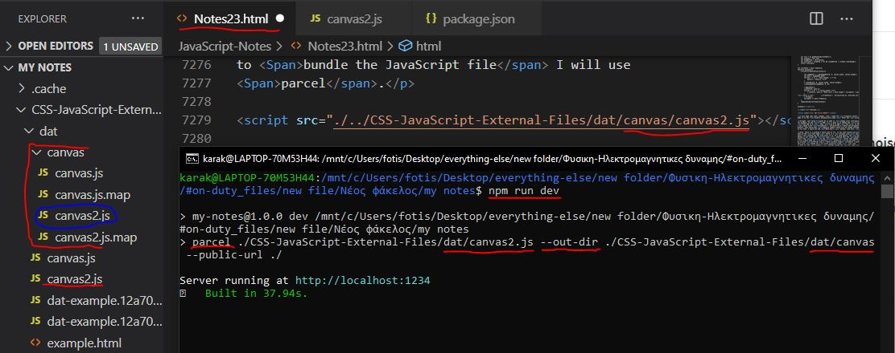

Home Pages:
Informations included in this page:
Using event listeners with Canvas
Creating gravity effect on Canvas
How to obtain and manipulate pixels data
Controlled Randomness with Perlin Noise
Using event listeners with Canvas
Creating gravity effect on Canvas
How to obtain and manipulate pixels data
Controlled Randomness with Perlin Noise
Back to drawing again, this takes me back to the times I was learning how to draw SVG, hopefully some of the stuff I learned back then will make the learning process of the canvas easier for me, since even though the are different they still have some similarities too. So what exactly is the canvas? And how is that different from SVG?
<canvas> is an HTML element which can be used to draw graphics via scripting (usually JavaScript). This can, for instance, be used to draw graphs, combined photos, or create animations, games and more.
The main difference between canvas and SVG is that canvas is drawn progammatically and the drawing is done with pixels, while SVG is drawn by elements which are a part of the page's DOM and the drawing is done by vectors. I have listed more about canvas and SVG here but these I believe are the most important differences.
So now, let's try and create our very first canvas element:
HTML Code:
<canvas id="first-canvas"></canvas>
CSS Code:
#first-canvas{ display: block; margin: 20px auto 20px auto; border: 2px solid black; }
Outcome:
So as you can see, the canvas is an inline-block element and by default it's background is invisible, it also has a default size, which I think is 300px width and 150px height.
Let's learn how to draw some basic shapes now, drawing is done progammatically, so we will have to do it through JavaScript of course, to draw stuff you first need to access the context of the canvas which you can do by using getContext() method, this method can take a parameter, all I know at the moment is that we should write getContext('2d'), because we will be drawing in 2d I guess, later we may learn about 3d too.
The getContext('2d') method will return the CanvasRenderingContext2D object, which contains information about the canvas, if you access it's prototype using __proto__ there you will find all the different methods that you can use to draw the canvas, so if you ever forget a method that's where you can find a reference of all the methods that exist, through it's prototype you can access it's constructor and the Object Prototype, and that's basically how CanvasRenderingContext2D is chained in the prototype tree
JavaScript Code:
let canvas = document.querySelector('#first-canvas'); let c = canvas.getContext('2d'); console.log(c);
Outcome:

So, let's start by drawing a simple rectangle, to do so we will need to use the fillRect(x, y, width, height) method, like in the example below:
HTML Code:
<canvas id="second-canvas" class="canvas"></canvas>
CSS Code:
.canvas{ display: block; margin: 20px auto 20px auto; width: 500px; height: 200px; border: 2px solid black; background-color: white; }
JavaScript Code:
let canvas = document.querySelector('#second-canvas'); let c = canvas.getContext('2d'); c.fillRect(100, 20, 100, 100);
Outcome:
So, the y is the top of the rectangle and not the bottom as you may expected, imagine the rectangle was a paper, put your finger on the top left corner of the rectangle and move it 100 px to the right and 20px down, that's what we basically did.
So, how do you color those rectangles? If you take a look at CanvasRenderingContext2D object in the picture above, there is a property called fillStyle, by default it's set to #000000, which is black, when using a method such as fillRect(), the shape looks at fillStyle property and colors the shape based on the value of the property, so to color your rectangles simple change the value of this property to the wanted color, like in the example below:
JavaScript Code:
let canvas = document.querySelector('#third-canvas'); let c = canvas.getContext('2d'); c.fillStyle = "red"; c.fillRect(20, 20, 50, 50); c.fillStyle = "green"; c.fillRect(200, 20, 50, 50); c.fillStyle = "blue"; c.fillRect(100, 80, 50, 50);
Outcome:
How do we style the stroke of those rectangles now? Just like fillStyle, if you take a look in the CanvasRenderingContext2D there is a property called strokeStyle which by default is set to black, the value of this property is used to set the color of the stroke, however, the rectangles above don't have a stroke, so how do we add them one? You could use strokeRect to create a rectangle with only stroke and then position it where your rectangle is.
JavaScript Code:
let canvas = document.querySelector('#fourth-canvas'); let c = canvas.getContext('2d'); c.strokeStyle = "red"; c.fillRect(20, 20, 50, 50); c.strokeRect(20, 20, 50, 50); c.fillRect(200, 20, 50, 50); c.strokeRect(200, 20, 50, 50); c.fillRect(100, 80, 50, 50); c.strokeRect(100, 80, 50, 50);
Outcome:
Alright, great, but how do you change the width of the stroke? You can do so with the lineWidth property, just like fillStyle and stokeStyle, this property can be found inside the CanvasRenderingContext2D and by default it's value is 1.
JavaScript Code:
let canvas = document.querySelector('#fifth-canvas'); let c = canvas.getContext('2d'); c.strokeStyle = "red"; c.lineWidth = "10"; c.fillRect(100, 20, 100, 100); c.strokeRect(100, 20, 100, 100);
Outcome:
So now, what if you wanted to create many rectangles and wanted to have a stroke for all of them? Would you need to make all rectangles and strokes differently? That would take a lot of space and time, so you could instead create a function that creates rectangles with stroke without needing to place the stroke and rectangle differently:
JavaScript Code:
let canvas = document.querySelector('#sixth-canvas'); let c = canvas.getContext('2d'); function createRect(x, y, w, h, fs, ss, lw){ c.fillStyle = fs; c.strokeStyle = ss; c.lineWidth = lw; c.fillRect(x, y, w, h); c.strokeRect(x, y, w, h); } createRect(20, 40, 50, 50); createRect(100, 20, 50, 50, 'yellow', undefined,5); createRect(180, 40, 50, 50, 'blue', 'red', 3);
Outcome:
Before I finish with this section, I want to also talk about clearRect(x, y, w, h) method, which clears a specified rectangular area, making it fully transparent, like this:
JavaScript Code:
let canvas = document.querySelector('#eighth-canvas'); let c = canvas.getContext('2d'); c.fillRect(20, 20, 100, 100); c.clearRect(40, 40, 60, 60);
Outcome:
So what did we learn in this section? Here is a list of all the properties and methods we went over, as well as a quick description of what each does:
Alright, so we now know how to make rectangles, we are not going to make minecraft though, so we need something more than just rectangles. Let's talk about paths now, they are pretty similar to SVG paths, what exactly is a path though?
You can think of a path as a set of instructions used to move a virtual pen around to form lines and curves, in this section, I will go over some basic path commands, I will get in more details about curves, arcs and more in later sections.
To begin a path you shoud use the beginPath() method, after that to start drawing your path you can use moveTo(x, y) to pick up your virtual pen and move it around, without drawing, and then you can use lineTo(x, y) to create a line from the position your virtual pen was moved to, to the specified coordinates, lastly, you can use the closePath() method to create a line back to the start of the path and close the shape. This by it self will not have any visible effect on the canvas however, and that's because the path still has no stroke or fill, you can add a stroke using the stroke() method, and you can add a fill using the fill() method.
JavaScript Code:
let canvas = document.querySelector('#seventh-canvas'); let c = canvas.getContext('2d'); c.beginPath(); c.moveTo(10, 10); c.lineTo(100, 10); c.lineTo(100, 100); c.closePath(); c.strokeStyle = 'red'; c.lineWidth = 3; c.stroke(); c.fillStyle = 'yellow'; c.fill();
Outcome:
So what did we lern in this section? Here is a list of all the methods we went over, as well as a quick description of what each does:
Here is a really cool video that explains the methods I just talked about in only two minute:
The next type of paths I want to talk about are Bezier curves, there are actually 2 methods I want to talk about, and these are quadraticCurveTo(cp1x, cp1y, x, y) and bezierCurveTo(cp1x, cp1y, cp2x, cp2y, x, y) methods.
The difference between these two can best be described using the following image:

As you can see, to draw curves you are using control points, bezier curves use two control points while quadratic curves only use one control point.
Here is a quadratic curve for example, I have set a background and drew the control point too so that it is easier to see what exactly happens with the code, in order to get confortable with using control points you should play around with it:
JavaScript Code:
let canvas = document.querySelector('#canvas-one'); let c = canvas.getContext('2d'); c.beginPath(); c.strokeStyle = "black"; c.moveTo(80, 60); c.quadraticCurveTo(120, 100, 160, 60) c.lineWidth = 3; c.stroke();
Outcome:
Now let's try to create a bezier curve, which uses two control points:
JavaScript Code:
let canvas = document.querySelector('#canvas-2'); let c = canvas.getContext('2d'); c.beginPath(); c.moveTo(70, 80); c.bezierCurveTo(90, 30, 150, 120, 180, 80); c.lineWidth = 2; c.strokeStyle="black"; c.stroke();
Outcome:
Here is a helpful video that explains curves pretty well:
Let's now learn about Arcs, to create arcs you should use the arc(x, y, r, sAngle, eAngle, counterclockwise) method, as you can see it has quite a few parameters it can take, but I'm gonna explain what each does as well as I can.
The x and y should be used to place the arc on the canvas, the r is the radius of the arc, the sAngle and eAngle parameters take radians and define the starting angle and ending angle of the arc and lastly the counterclockwise is optional and takes a boolean value, by default it is fault which means the arc is drawn clockwise, if changed to ture the it is drawn counter-clockwise.
In order to easier be able to work with arcs, we will convert degrees to radians by doing degrees * Math.PI / 180, here is an example:
JavaScript Code:
let canvas = document.querySelector('#canvas-3'); let c = canvas.getContext('2d'); let Sangle = 90 * Math.PI / 180; let Eangle = 180 * Math.PI / 180; c.fillStyle = "green" c.strokeStyle = "black"; c.beginPath(); c.arc(70, 90, 30, Sangle, Eangle, false); c.lineTo(70, 90); c.closePath(); c.stroke(); c.fill(); Sangle = -90 * Math.PI / 180; Eangle = 180 * Math.PI / 180; c.beginPath(); c.arc(155, 90, 30, Sangle, Eangle, false); c.lineTo(155, 90); c.closePath(); c.stroke(); c.fill(); Sangle = 90 * Math.PI / 180; Eangle = 180 * Math.PI / 180; c.beginPath(); c.arc(240, 90, 30, Sangle, Eangle, true); c.lineTo(240, 90); c.closePath(); c.stroke(); c.fill();
Outcome:
I have done some extra decoration so tht it's easier to understand what's happening, so, let's look at the
first arc, it is drawn clockwise, the arcs
are drawn from the x axis of the right side of the circle, since it's end angle is
180 the arc was drawn all the way to the
The second arc is the same, except that the star degree is -90 instead of 90. Lastly, the third arc is drawn counter-clockwise, it's end degree is 180 which is why the top half of the arc is drawn and the start degree is 90, the start degree is formed clockwise no matter what, so that's why the 1/4 of the right down side of the circle is drawn.
Alright, so arc() method is pretty cool when you want to make circles and stuff, let's now talk about arcTo(x1, y1, x2, y2, r) method which is kind like curves.
JavaScript Code:
let canvas = document.querySelector('#canvas-4'); let c = canvas.getContext('2d'); c.beginPath(); c.strokeStyle = "black"; c.lineWidth = "2"; c.moveTo(100, 90); c.arcTo(155, 50, 200, 90, 40); c.stroke();
Outcome:
So, I did some extra decoration as you can see to help you understand what kind of happens behind the scenes in order to form the arc, this is a little complicated the truth is, however, I have just the perfect video right here to help you understand how this method works:
Let's now learn how to draw text on the canvas, the most important methods you need to know are the following: font, fillText(text, x, y) and strokeText(text, x, y).
JavaScript Code:
let canvas = document.querySelector('#canvas-5'); let c = canvas.getContext('2d'); // type, size, font-family // type: norma, italic, bold c.font = "normal 24px Arial"; c.fillStyle = "blue"; c.fillText("Hello World!", 80, 60); c.strokeText("Hello World!", 80, 60);
Outcome:
Let's learn some more methods now, to align text you will need to use textAlign and textBaseline properties:
Let's first learn the different textAlign values you can use to align text horizontally:
JavaScript Code:
let canvas = document.querySelector('#canvas-6'); let c = canvas.getContext('2d'); c.fillStyle = "black"; c.font = "normal 15px Arial"; c.textAlign = "start"; c.fillText('textAlign=start', 140, 40); c.textAlign = "end"; c.fillText('textAlign=end', 140, 60); c.textAlign = "left"; c.fillText('textAlign=left', 140, 80); c.textAlign = "center"; c.fillText('textAlign=center', 140, 100); c.textAlign = "right"; c.fillText('textAlign=right', 140, 120);
Outcome:
Now let's learn the different textBaseline values you can use to align text vertically.
JavaScript Code:
let canvas = document.querySelector('#canvas-7'); let c = canvas.getContext('2d'); c.fillStyle = "black"; c.font = "normal 15px Arial"; c.textAlign = "start"; c.textBaseline = "top"; c.fillText('Top', 30, 70); c.textBaseline = "bottom"; c.fillText('Bottom', 60, 70); c.textBaseline = "middle"; c.fillText('Middle', 110, 70); c.textBaseline = "alphabetic"; c.fillText('Alphabetic', 157, 70); c.textBaseline = "hanging"; c.fillText('Hanging', 230, 70);
Outcome:
Next let's talk about direction property, this one is still experimental, and is not supported by Firefox and Internet Explorer, this property allows us to specify the direction to draw the text.
JavaScript Code:
let canvas = document.querySelector('#canvas-8'); let c = canvas.getContext('2d'); c.fillStyle = "black"; c.font = "normal 15px Arial"; c.direction = "ltr"; c.fillText("left to right!", 100, 40); c.direction = "rtl"; c.fillText("right to left!", 100, 60); c.direction = "inherit"; c.fillText("inherit from canvas!", 100, 80)
Outcome:
Lastly, let's talk about how we can measure the text to get it's width or height using measureText(text) method:
JavaScript Code:
let canvas = document.querySelector('#canvas-9'); let c = canvas.getContext('2d'); let txt = "Hello World" console.log(c.measureText(txt)); c.font = "normal 30px Arial"; c.fillStyle = "red"; c.fillText(txt, 90, 90) console.log(c.measureText(txt));
Outcome:
Here are the logs, as you can see, the width changed after I set the font:

Let's now make a little project for practice:
HTML Code:
<canvas id="canvas-10" class="canvas"></canvas> <p style=" width: 500px; text-align: left; margin: auto; "> <input type="text" id="inputc" value="Insert text"> </p>
JavaScript Code:
let canvas = document.querySelector('#canvas-10'); let c = canvas.getContext('2d'); let input = document.querySelector('#inputc'); let txt = "Insert text"; c.font = "normal 15px Arial"; c.fillStyle = "black"; c.fillText(txt, 20, 50); let width = c.measureText(txt).width; let txt2 = `Text Width: ${width}px` c.fillText(txt2, 20, 100); let width2 = c.measureText(txt2).width; input.addEventListener('input', (e) => { c.clearRect(20, 37, width, 18); c.clearRect(20, 87, width2, 18); txt = input.value; width = c.measureText(txt).width; c.fillText(txt, 20, 50); txt2 = `Text Width: ${width}px` c.fillText(txt2, 20, 100); width2 = c.measureText(txt2).width; });
Outcome:
Here is a video that helped me a lot, watch it if you want and subscribe to the guy, his tutorials have helped me countless of times:
The createLinearGradient() method creates a linear gradient object. This gradient can later be used to fillStyle and strokeStyle properties.
The createLinearGradient(x0, y0, x1, y1) method takes four parameters, which define the start point and end point of the gradient, inside the gradient object that is returned by the createLinearGradient() method there is a method:
JavaScript Code:
let canvas = document.querySelector('#canvas-01'); let c = canvas.getContext("2d"); let gradient = c.createLinearGradient(10, 10, 10, 190); console.log(gradient);
Outcome:

To add colors to the linear gradient you will need to use the addColoStop() methods which takes two parameters, the first parameter defines the position and the second parameter the color. The first parameter should take a value between 0 and 1, where 0.5 represents 50% and 1 represents 100%:
JavaScript Code:
let canvas = document.getElementById("canvas-02"); let c = canvas.getContext('2d'); let gradient = c.createLinearGradient(50,50,50,100); gradient.addColorStop(0, 'red') gradient.addColorStop(0.5, 'blue'); gradient.addColorStop(1, 'green'); c.fillStyle = gradient; c.fillRect(50, 50, 100, 50);
Outcome:
The createLinearGradient() creates the direction and size of the gradient, if we were to change the end point to 150, 100 then the direction of the gradient would be from the top left of the rectangle towards the bottom right side of the rectangle:
JavaScript Code:
let canvas = document.getElementById("canvas-03"); let c = canvas.getContext('2d'); let gradient = c.createLinearGradient(50,50,150,100); gradient.addColorStop(0, 'red') gradient.addColorStop(0.33, 'red'); gradient.addColorStop(0.34, 'blue'); gradient.addColorStop(0.70, 'blue'); gradient.addColorStop(0.701, 'green'); gradient.addColorStop(1, 'green'); c.fillStyle = gradient; c.fillRect(50, 50, 100, 50);
Outcome:
So, using CSS we can set the width and height of the viewport, and using width and height attributes, either by hand either through JavaScript we can define the pixels inside the viewport. In this section we will learn more ways to customize the canvas grid. With transformations you can translate the 0, 0 point to a different position, rotate the grid and even scale it.
The first of the transformation methods we will look at is translate(). This method is used to move the canvas and it's origin to a different point in the grid.
The translate(x, y) methods moves the canvas and it's origin on the grid. The first parameter indicates the horizontal distance to move, and the second parameter indicates how far to move the grid vertically.
JavaScript Code:
let canvas = document.querySelector('#canvas-05'); let c = canvas.getContext('2d'); background(c); c.translate(100, 100); c.fillStyle = "red"; c.beginPath(); c.arc(0, 0, 3, 0, 2 * Math.PI, false); c.moveTo(20, 20); c.arc(20, 20, 3, 0, 2 * Math.PI, false); c.stroke(); c.fill()
Outcome:
The second transformation method I wanna talk about is rotate(). We use it to rotate the canvas around the current origin.
The rotate(angle) method rotates the canvas clockwise around the current origin by the angle number of radians.

The rotation center point is always the canvas origin. To change the center point, we will need to move the canvas by using the translate() method.
JavaScript Code:
let canvas = document.getElementById("canvas-06"); let c = canvas.getContext('2d'); c.translate(0, 0); background(c); c.fillStyle = 'red'; c.font = 'normal 15px Arial'; c.translate(100, 50); c.rotate(135 * Math.PI / 180); c.fillText('Hello World!', 0, 0); c.fillRect(0, 10, 85, 5);
Outcome:
The next transformation method is scaling. We use this to increase or decrease the units in our canvas grid. This can be used to draw scaled down or enlarged shapes and bitmaps.
The scale(x, y) method scales the canvas units by x horizontally and by y vertically. Both parameters are real numbers. Values that are smaller than 1.0 will reduce the unit size and values above 1.0 will increase the unit size. Values of 1.0 will leave the units the same size.
Using negative numbers will flip the shape and do axis mirroring, here are some example:
JavaScript Code:
let canvas = document.getElementById('canvas-07'); let c = canvas.getContext('2d'); background(c); c.save(); c.scale(2, 2); c.fillRect(10, 10, 25, 25); c.restore(); c.font = 'normal 20px Arial'; c.fillStyle = 'black'; c.save(); c.translate(200, 50); c.scale(-1, 1); c.fillText('Hello World!', 0, 0); c.restore(); c.save(); c.translate(200, 100); c.scale(-1, 1); c.fillText('Hello People!', 0, 0) c.restore();
Outcome:
So, you are probably wondering now what does save() and restore() do, and that's what I'm gonna talk about next.
Canvas states are stored on a stack. Every time the save() method is called, the current drawing state is pushed onto the stack. A drawing state consists of:
I still haven't talked about some of the stuff listed in the list, I will try and write about these later on my notes.
You can call the save() method as many times as you like, Each time the restore() method is called, the last saved state is popped off the stack and all saved settings are restored.
In this section I want to talk some more about strokes, there are a few properties out there that can be used to decorate strokes, here is a list of all the properties I will explain in the section:
So, I have already told about lineWidth and lineStyle before, and there really isn't much about them anyway, couldn't be any simplier, so let's skip those two and get started with the lineCap property first, lets take a loo kat the different kind of line cap styles we can use:
JavaScript Code:
let canvas = document.querySelector('#canvas-08'); let c = canvas.getContext('2d'); background(c); c.lineWidth = 10; c.strokeStyle = 'red'; c.lineCap = 'butt'; c.beginPath(); c.moveTo(50, 120); c.lineTo(50, 30); c.stroke(); c.lineCap = 'round'; c.beginPath(); c.moveTo(120, 120); c.lineTo(120, 30); c.stroke(); c.lineCap = 'square'; c.beginPath(); c.moveTo(190, 120); c.lineTo(190, 30); c.stroke();
Outcome:
The reason I had to create different paths is because only one style can be applied to the final shape made by the path, I could not create the three lines in one path and change the lineCap property for each, because only the final value I wrote would be used for the path.
Let's now check lineJoin property and the different types that can be used:
JavaScript Code:
let canvas = document.querySelector('#canvas-09'); let c = canvas.getContext('2d'); background(c); c.lineWidth = 10; c.strokeStyle = 'red'; c.lineJoin = 'bevel'; c.beginPath(); c.moveTo(40, 120); c.lineTo(80, 120); c.lineTo(80, 30); c.lineTo(60, 50); c.stroke(); c.lineJoin = 'round'; c.beginPath(); c.moveTo(120, 120); c.lineTo(160, 120); c.lineTo(160, 30); c.lineTo(140, 50); c.stroke(); c.lineJoin = 'miter'; c.beginPath(); c.moveTo(200, 120); c.lineTo(240, 120); c.lineTo(240, 30); c.lineTo(220, 50); c.stroke();
Outcome:
Since we just learned about the miter value of lineJoin, lets now talk about the miterLimit property.
The miterLimit property sets or returns the maximum miter length. The miter length is the distance between the inner corner and the outer corner where two lines meet.

The miterLimit property works only if the lineJoin property is miter. The miter length grows bigger as the angle of the corner gets smaller.
To prevent the miter length from being too long, we can use the miterLimit property.
If the miter length exceeds the miter limit value, the corner will be displayed as lineJoin type 'bevel'.
JavaScript Code:
let canvas = document.querySelector('#canvas-idk'); let c = canvas.getContext('2d'); background(c); function draw(x, y, y2){ c.beginPath(); c.moveTo(x, y); c.lineTo(x + 40, y); c.lineTo(x, y2); c.stroke(); } c.lineWidth = 10; c.lineJoin = 'miter'; c.miterLimit = Number.POSITIVE_INFINITY; c.strokeStyle = 'green'; draw(40, 80, 30); draw(120, 80, 65); draw(200, 80, 120); c.miterLimit = 5; c.strokeStyle = 'red'; draw(40, 80, 30); draw(120, 80, 65); draw(200, 80, 120); c.lineJoin = 'bevel'; c.strokeStyle = 'blue'; draw(40, 80, 30); draw(120, 80, 65); draw(200, 80, 120);
Outcome:
So, in the example above, you can see how when miterLimit is set to 5, the middle lines use bever type to connect, because the miter length extends 5 pixels, while the others which don't are drawn without a problem.
Now, let's try setLineDash() method and lineDashOffSet property:
JavaScript Code:
let canvas = document.querySelector('#canvas-010'); let c = canvas.getContext('2d'); background(c); c.lineWidth = 10; c.strokeStyle = 'red'; c.lineCap = 'butt'; c.setLineDash([20, 5, 10, 5]); c.beginPath(); c.moveTo(40, 40); c.lineTo(200, 40); c.stroke(); c.setLineDash([20, 5, 20]); c.beginPath(); c.moveTo(40, 80); c.lineTo(200, 80); c.stroke(); c.setLineDash([20, 5, 20]); c.lineDashOffset = 25; c.beginPath(); c.moveTo(40, 120); c.lineTo(200, 120); c.stroke();
Outcome:
So, I need you to understand what happens with the dash pattern, the pattern goes like this: line, gap, line, etc, when it reads the array, the array values are used on this pattern, when the array values are over, it reads the array again from the start. If the array values are an even number, then everything works as expected, if however it's a an odd number, then after the array values end, when it starts reading from the start of the array the first value will be used to create a gap, and the second to create the line, and so on, till it reaches the end again, then it will get back to normal for the next run.
The lineDashOffset is used to move the stroke, this can create great effects when used for animations, here is an example:
JavaScript Code:
let canvas = document.querySelector('#canvas-011'); let c = canvas.getContext('2d'); background(c); c.lineWidth = 5; c.strokeStyle = 'red'; c.lineDashOffset = 0; function draw(){ c.clearRect(0, 0, canvas.width, canvas.height); c.beginPath(); c.moveTo(50, 50); c.lineTo(200, 50); c.lineTo(200, 120); c.lineTo(50, 120); c.closePath(); c.stroke(); } function march(){ c.setLineDash([2,2]); c.lineDashOffset++; draw(); } setInterval(march, 20);
Outcome:
The globalAlpha property sets or returns the current transparency value of the drawing.
The globalAlpha property value must be a number between 0.0 (fully transparent) and 1.0 (no transparancy).
JavaScript Code:
let canvas = document.getElementById('canvas-012'); let c = canvas.getContext('2d'); background(c); c.fillStyle = 'red'; c.globalAlpha = 0.8; c.fillRect(50, 50, 50, 50); c.globalAlpha = 0.5; c.fillRect(135, 50, 50, 50); c.globalAlpha = 1; c.fillRect(220, 50, 50, 50);
Outcome:
Until now we have created our own shapes and applied styles to them. One of the more exciting feautures of canvas is the ability to use images. External images can be used in any format supported by the browser, such as PNG, GIF, or SJPEG. You can even use the image produced by other canvas elements on the same page as the source.
Importing images into a canvas is basically a two step process:
The canvas API is able to use any of the following data types as an image source:
There are several ways to get images for use on a canvas.
We can obtain a reference to images on the same page as the canvas by using one of the following methods:
I have already talked about getElementsByTagName() and getElementsById() methods before in my notes, I have never mentioned images property however, this property of the Document object returns a collection ot the images in the current HTML document. Let's try this:
JavaScript Code:
console.dir(document.images);
Outcome:

Those image objects contain a lot of properties inside them, so you could use an array method such as filter to only get a specific image, if for example you want to check for their name you could use a regular expression and select it from the outerHTML property which contains a string of the outer HTML of the image.
Using the crossorigin attribute of an <img> element (reflected by the HTMLImageElement.crossOrigin property), you can request permission to load an image from another domain for use in your call to drawImage(). If the hosting domain permits cross-domain access to the image, the image can be used in your canvas without tainting it, otherwise using the image will taint the canvas.
I have talked about the crossorigin attribute here, if you want to learn the different values you can use for this attribute check this out.
Just as with normal images, we can access other canvas elements using either document.getElementsByTagName() or document.getElementById() method. Be sure you've drawn something to the source canvas before using it in your target canvas.
One of the more practical uses of this would be to use a second canvas element as a thumbnail view of the other larger canvas.
Another option is to create a new HTMLImageElement object in our script. To do this, you can use the convenient Image() constructor:
JavaScript Code:
let img = new Image(); img.src = ../images/example.png'; console.log(img); console.dir(img);
Outcome:

When this script gets executed, the image starts loading.
If you try to call drawImage() before the image has finished loading, it won't do anything (or in older browsers, may even throw an exception). So you need to be sure to use the load event so you don't try this before the image has loaded.
JavaScript Code:
var img = new Image(); img.src = ../images/example.png'; img.addEventListener('load', function(e){ // execute drawImage statements here });
This should work fine when working with only one image, what if you are using multiple images though? How do you make sure all of them have loaded? One simple way would be to add all your images directly into your HTML code using <image> tag, you could put all of them inside a div and then hide it with CSS, after you do so you could simple use window.addEventListener('load', function(){}).
If you however want to create the images with JavaScript, a code like this should do the job:
JavaScript Code:
let imgToLoad = 3, imgLoaded = 0; function onImgLoad(){ imgLoaded++; if(imgLoaded == imgToLoad){ //execute draw image statements here } } img1 = new Image(); img1.src = ../images/example.png'; img2 = new Image(); img2.src = ../images/example2.png'; img3 = new Image(); img3.src = ../images/example3.png'; let arr = [img1, img2, img3]; arr.forEach((img) => { img.addEventListener('load', onImgLoad); });
Outcome:
Once we have a reference to our source image object we can use the drawImage() method to render it to the canvas. As we will see later the drawImage() ethod is overloaded and has several variants. In it's most basic form it looks like this: drawImage(image, x, y) but it can take up to nine parameters, and the way the parameters work change depending on how many are used, we will go over all that here in this section.
Let's try to draw our first image now, using those three first parameters only:
JavaScript Code:
let img = new Image(); img.src = ../images/example.png'; let canvas = document.getElementById('canvas-013'); let c = canvas.getContext('2d'); img.addEventListener('load', (e) => { canvas.width = '600'; canvas.height = '200'; c.drawImage(img, 0, -115); });
Outcome:
The image was too big so I had to change the size of the canvas in order to fit it inside, wouldn't that be great if we could scale it?, well, we can! The two next parameters do just that:
JavaScript Code:
let img = new Image(); img.src = ../images/phoenix.png'; let canvas = document.getElementById('canvas-014'); let c = canvas.getContext('2d'); img.addEventListener('load', (e) => { c.drawImage(img, 40, 30, 200, 100); background(c); });
Outcome:
So, now, if we add the next four parameters the drawImage() method will work different than expected, we would normally expect that those four new parameters would be the last four parameters, but they are not, if more than five parameters are added, then the order of the parameters changes a little, so, till now it was like this: (source, xPosition, yPosition, xScale, yScale), if more parameters are added then it changes to be like this: (source, xSlice, ySlice, xSliceScale, ySliceScale, positionX, positionY, scaleX, scaleY).
So, the first parameter and last four parameters are the same as before, but between them there are four new parameters added, those new parameters allow us to slice the image, so that we only use a part of the image inside of using the whole image, here is an example:
Let's use this image and use a loop to place grass tiles all over the canvas:

JavaScript Code:
let image = document.getElementById('imageAA'); let canvas = document.getElementById('canvas-015'); let c = canvas.getContext('2d'); image.addEventListener('load', (e) => { for(i = 0; i <= 12; i++){ for(j = 0; j <= 6; j++){ c.drawImage(image, 80, 40, 40, 50, i * 25, j * 25, 25, 25); } } });
Outcome:
Here is a video that may help you undersand imageDraw() method better:
Before I finish with this section I want to also talk about one more property, the imageSmoothingEnabled = boolean property, whic is used to control the use of image smoothing algorithms when scaling images. By default, it is true, meaning images will be smoothed when scaled. You can disable this future by setting the property to false:
JavaScript Code:
let canvas = document.getElementById('canvas-016'); let c = canvas.getContext('2d'); let img = new Image(); img.src = ../images/phoenix.png'; background(c); img.addEventListener('load', (e) => { c.drawImage(img, 20, 40, 120, 80); c.imageSmoothingEnabled = false; c.drawImage(img, 160, 40, 120, 80); });
Outcome:
Let's now learn how to resize images but keep the original aspect ratio, something useful if you want your images to have good quality. First, in order to find the aspect ratio we are gonna do img.naturalWidth / img.naturalHeight, after we have the ratio we can choose a width for our image and in order to find what the height should we we simple do width / aspect ratio, what if we want to choose a height and find what the width should be? By using a little bit of algebra, we can assume that width = height * ratio, lets try this on our canvas to see if that's true.
By the way, you may wonder what naturalWidth and naturalHeight are and how they are different to width, height, clientWidth and clientHeight, the width and height give us the value of the width and height attribute, the clientWidth and clientHeight give us the width and height of the element, if for example we had changed it's size using CSS then this would give us the exact width and height it takes on the page, while lastly, naturalWidth and naturalHeight give us the original width and height of the image.JavaScript Code:
let canvas = document.getElementById('canvas-0001'); let c = canvas.getContext('2d'); let img = new Image(); img.src = ../images/phoenix.png'; background(c); c.imageSmoothingEnabled = true; img.addEventListener('load', (e) => { let aspectRatio = img.naturalWidth / img.naturalHeight; c.drawImage(img, 0, 0, 120, 120 / aspectRatio); c.drawImage(img, 120, 0, 100 * aspectRatio, 100) });
Outcome:
In this section I'm gonna talk about ways you can animate the canvas, there isn't really much to say, since we are gonna use simple JavaScript code to get the wanted result, there is however one method I want to talk about, the Window.requestAnimationFrame() method.
The window.requestAnimationFrame() method tells the browser that you wish to perform an animation and requests that the browser calls a specified function to update an animation before the next repaint. The method takes a callback as an argument to be invoked before the repaint.
Your callack routine must it self call requestAnimationFrame() again if you want to animate another frame at the next repaint. requestAnimationFrmae() is 1 shot.
So, why use the requestAnimationFrame() method if we can just use setInterval? That's because requestAnimationFrame produces higher quality animation completely eliminating flicker and shear that can happen when using setInterval, and it also reduce or completely remove frame skips.
Here is a simple example of requestAnimationFrame() method so that you can see it's syntax:
JavaScript Code:
let container = document.getElementById('ctainer'); let i = 0; function example(){ i++ if(i <= 3){ container.innerHTML += 'Hello World!'; requestAnimationFrame(example); } else { return false; } } example();
Outcome:
Let's create an animation on the canvas now:
JavaScript Code:
let canvas = document.getElementById('canvas-017'); let c = canvas.getContext('2d'); c.fillStyle = 'black'; c.strokeStyle = 'blue'; let circle = function(x, y, r, dx, dy){ this.x = x; this.y = y; this.r = r; this.dx = dx; this.dy = dy; this.draw = function draw(){ c.beginPath(); c.arc(this.x, this.y, this.r, 0, 2 * Math.PI); c.stroke(); c.fill(); } this.animate = function animate(){ if(this.x > canvas.width - r || this.x - this.r < 0){ this.dx = -this.dx; } if(this.y > canvas.height - r || this.y - this.r < 0){ this.dy = -this.dy; } this.x += this.dx; this.y += this.dy; this.draw(); } } let array = new Array(); for(let i = 1; i <= 100; i++){ let r = 10; let x = Math.random() * (canvas.width - r * 2) + r; let y = Math.random() * (canvas.height - r * 2) + r; let dx = (Math.random() - 0.5) * 2; let dy = (Math.random() - 0.5) * 2; array.push(new circle(x, y, r, dx, dy)); } let animation = function(){ c.clearRect(0, 0, canvas.width, canvas.height); array.forEach((circle) => { circle.animate(); }) requestAnimationFrame(animation); } animation();
Outcome:
So, at first this may seem a little complicated, but it's more easy once you understand it, I created a object constructor which has five properties inside, the first two are used to set the x and y coordinates, the third property sets the radius and the last two set the speed of x and y, those will be added to the current x and y per every iteration, then I created a draw method, which simple draws the circle on the canvas and then I created an animate method which checks some conditions and updates x and y coordinates, then it draws the circles by executing the draw method using the new coordinates. If the x reaches the edge of the canvas I make it change direction, and when it reaches the starting edge I make it change direction again, same goes for y.
Alright, so far I have explained what the methods do, now let me explain what I did next, I used that constructor to create 100 different circle objects inside an array, then I created a function that is executed again and again by requestAnimationFrame() method, this function in every single iteration clears the canvas and then goes through every object in the array, and calls the animate() method, which checks the current x and y coordinates, and then updates them and draws the circles using them, each circle object has different coordinates and speed, and that was achieved using Math.random() when we created them before.
The x parameter is randomly generated by Math.random() * (canvas.width - r * 2) + r, why is that? That's because Math.random() returns a number between 0 and 1, if I multiply it by the canvas width then the x can be anywhere between 0 and the edge of the canvas, but since the circle has a radius, I want to make sure that no circle can spawn through the edges for both left and right sides, that's why I did canvas.height - r *2, which makes sure the circle will be able to only spawn between 0 and on a distance equal to it's full width before the right edge, then to make sure it will not spawn in the left edge we add r, that's also the reason the distance from the right side we specified before was multiplied by 2, because now, no matter where the circle spawns, it will not be inside the edges. A similar way was used to generate the y coordinate.
About the dx and dy values now, I did Math.random() - 0.5 so that there is a 50% chance to return a negative number, then I multiplied by 2 in order to make it move faster.
Here is a video that helped me a lot, it goes through the process of creating the project I made above, slower, and explains things very much clearer than I did:
Let's now try to create something more cool using event listeners, there isn't really much to say about event listeners, because I have already talked about them in previous pages, here is a nice project I created:
JavaScript Code:
window.addEventListener('load', (e) => { var canvas = document.querySelector('#canvas-project1'); var c = canvas.getContext('2d'); canvas.width = 500; canvas.height = 300; var points = new Array(); // function to be used for all touch events function getTouchOffset(e){ points = []; let canvas_box = canvas.getBoundingClientRect(); let coords = { x: canvas_box.left, y: canvas_box.top } Array.from(e.touches).forEach((touch) =>{ points.push({x: touch.clientX - coords.x, y: touch.clientY - coords.y}); }); } // touch events that update x and y points canvas.addEventListener('touchstart', (e) =>{ getTouchOffset(e); }); canvas.addEventListener('touchmove', (e) =>{ getTouchOffset(e); }); canvas.addEventListener('touchend', (e) =>{ getTouchOffset(e); }); // mouse events that update x and y points canvas.addEventListener('mousemove', (e) =>{ points = []; points.push({ x: e.offsetX, y: e.offsetY }); }); canvas.addEventListener('mouseout', (e) =>{ points = [{ x: Number.POSITIVE_INFINITY, y: Number.POSITIVE_INFINITY }] }); // constructor that creates circles var circleMaker = function(x,y,r,dx,dy,cl){ this.x = x; this.y = y; this.r = r; this.r2 = r; this.dx = dx; this.dy = dy; this.randomColor = cl; this.draw = function(){ c.fillStyle = this.randomColor; c.beginPath() c.arc(this.x, this.y, this.r, 0, 2 * Math.PI); c.stroke(); c.fill(); } this.update = function(){ let range = 30; let arr; // checks if any of the (x, y) coordinates inside the points array are inside the wanted range of the circle, // the reason I am using an array for the points is so that multi-touches are supported for touchscreens arr = points.filter((point) => { if(point.x - this.x < range && point.x - this.x > -range){ if(point.y - this.y < range && point.y - this.y > -range){ return true; } } }); // if the filter method above returned at least one item then it // increases the radius, else it decreases it if(arr.length == 0){ if(this.r > this.r2){ this.r -= 1; } } else{ if(this.r < 30){ this.r += 5; } } // checks if the circle has met or passed the edges of the canvas, // if it has passed the right edge then I make sure dx is converted to a negative number else if it // is less than 0 I make sure it is a positive number, I didn't do it like in the tutorial because // problems would occur while scaling the circles, since if it was scaled and surpassed the edge then // it would get stuck, that would happen because with the code in the video it would multiple dx with - every time // x was higher than the width of the canvas, if x was heigher than 100 pixels from the edge for example // (something that could happen due to fast scaling while near the edge) then dx would become -dx and would increase // like 4 pixels for example but would still be higher than the width of the canvas so it would change back to dx and // that would go on forever causing it get stuck there. if(this.x - this.r < 0){ this.dx = Math.abs(this.dx); } else if(this.x + this.r > canvas.width){ this.dx = (this.dx < 0)? this.dx: -this.dx; } if(this.y - this.r < 0){ this.dy = Math.abs(this.dy); } else if(this.y + this.r > canvas.height){ this.dy = (this.dy < 0)? this.dy: -this.dy; } // updates x and y of the circle and then executes the draw method this.x += this.dx; this.y += this.dy; this.draw(); } } var circles = new Array(); var clrs = ["#F2EBEC", "#C8C1D9", "#5D84A6", "#485159", "#F2D4AE"]; // loop that creates circles using the constructor made earlier for(let i = 1; i <= 400; i++){ let r = Math.random() * 3 + 1; let x = Math.random() * (canvas.width - r * 2) + r; let y = Math.random() * (canvas.height - r * 2) + r; let dx = (Math.random() - 0.5) * 3; let dy = (Math.random() - 0.5) * 3; let cl = clrs[Math.floor(Math.random() * clrs.length)]; circles.push(new circleMaker(x, y, r, dx, dy, cl)); } // function that executes again and again to animate the canvas function animate(){ c.clearRect(0,0,canvas.width,canvas.height); circles.forEach((circle) => { circle.update(); }); requestAnimationFrame(animate); } animate(); });
Outcome:
Let me explain a little now, you already can see from the comments what each part of the code basically does, but I will try to give a more organized explanation about what happens behind the scenes here. First of all, the circles moving around were made just like the ones I created in the previous section, I explained the code there so I will not go into much details about this, I changed some stuff however, I made the radius of the circles be defined randomly, by writing Math.random() * 3 + 1, this makes so the radius of the circles is between 1 and 4 pixels. I also made a new property called color, and made it pick a random color for each circle, it chooses a color from an array of colors randomly something I did by writing Math.floor(Math.random() * clrs.length), Math.floor will take the result, and if it's a float number such as 0.5 it will return 0, or if the number is 0.7 it will also return 0, if it's 1.6 it will return 1, if it's 2.3 it will return 2, and so on.
So, every time you hover your mouse over the canvas or touch the canvas an object with the current x and y positions is added to an array called points, the reason I want it to be an array is because for touches multiple objects could be returned if multi-touches occur. For every iteration of the animation, I made it so, for each circle, a filter method is used on the points array, to check if any of the x and y positions of the objects provided are withing a wanted range, if even one of the objects in the array pass the test, then the object is added in a new array, then I check to see if that array has a length greater than 0 or not, if it has a length of 0 then that means no object passed the test, in which case, I check if the circle is bigger than it's default radius, and make it smaller if it is, else if an object was matched this means the circle is within the wanted range of at least one of the touches so I check if the circle is smaller than a maximum radius I want and if it is then I make it bigger.
Another thing I changed from the code I had written before is the if else statements that determine when to change the dx and dy direction, before I would simple multiple them with - to change their direction, but now that the circles can be scaled, if their radius changed while being near the edges a problem could occur due to the circle surpassing the edge by more than 1 pixel, in which case the dx or dy would keep being multipled by - in every single iteration, making the circle get stuck there. The Math.abs() method converts a negative number to a positive one, to convert dx to a negative number I first made it check if it already is a negative number, in which case I want it to let it be, and if it is not I multiply it with - to make it one.
I used this tutorial to make this project, however, a large part of my code was changed, and I believe improved, mine also supports multi touches and I also fixed some problems with the code in the video.
In this section we will try to create the effect of gravirty, before we do this, we need to understand what are the basic elements that create the effect. When an object falls, it starts with a small speed and increases, till it reaches the ground, then, if it's a small ball you would expect it to bounce back up towards the sky and fall again, however, as it goes up it should decrease speed, so that it stops at some point and then increase speed again, towards the ground however.
Creating this speed change is pretty easy actually, let's try this out:
JavaScript Code:
let canvas = document.getElementById('canvas-018'); let c = canvas.getContext('2d'); canvas.width = 500; canvas.height = 300; let circleMaker = function(x, y, r, dx, dy, cl){ this.x = x; this.y = y; this.r = r; this.dx = dx; this.dy = dy; this.cl = cl; this.draw = function(){ c.fillStyle = cl; c.beginPath(); c.arc(this.x, this.y, this.r, 0, 2 * Math.PI); c.stroke(); c.fill(); } this.update = function(){ if(this.y + this.r > canvas.height){ this.dy = -this.dy; } else{ this.dy += 1; } this.y += this.dy; this.draw(); let p = document.getElementById('somethings'); p.innerHTML = this.dy; } } let circles = new Array(); let colors = ['red', 'blue', 'green', 'yellow']; for(let i = 1; i<= 1; i++){ let r = Math.random() * 3 + 20; let x = Math.random() * (canvas.width - r * 2) + r; let y = Math.random() * (canvas.height - r * 4) + r; let clr = colors[Math.floor(Math.random() * colors.length)]; circles.push(new circleMaker(200, 50, r, 1, 1, clr)); } function animate(){ c.clearRect(0, 0, canvas.width, canvas.height); circles.forEach((circle) => { circle.update(); }); requestAnimationFrame(animate); } animate();
Outcome:
So, the code may seem a little big, but it's actually the same peace of code I used for the project in the previous sections, what I want you to pay attention at is the update method, I have made it so when it reaches the edge of the canvas the dy is reversed, if it hasn't reached the edge then it adds 1 to dy, to help you understand what this little trick does I made a paragraph in which I insert the dy in every iteration, it starts with a dy of 1 and increases, till it reaches the bottom of the canvas, then it's direction is reversed, so now, for each iteration we add 1 to dy, which is currently a negative number, so we dicrease the speed, till it reaches 0, then the direction changes towards the bottom again, and the speed increases again.
This is good and all, but there is something missing, every time the ball hits the ground, some of it's energy should decrease, so at some point, the ball stays still. Let's try doing that now:
JavaScript Code:
if(true){ let canvas = document.getElementById('canvas-019'); let c = canvas.getContext('2d'); canvas.width = 500; canvas.height = 300; let circleMaker = function(x, y, r, dx, dy, cl){ this.x = x; this.y = y; this.r = r; this.dx = dx; this.dy = dy; this.cl = cl; this.draw = function(){ c.fillStyle = cl; c.beginPath(); c.arc(this.x, this.y, this.r, 0, 2 * Math.PI); c.stroke(); c.fill(); } this.update = function(){ let gravity = 1; let finished = false; if(this.y + this.r > canvas.height){ this.dy = ((this.dy < 0)? this.dy: -this.dy) * 0.95; if(this.dy > -5){ this.dy = 0; finished = true; } } else{ this.dy += gravity; } if(finished == true){ this.y = canvas.height - this.r + 0.1; } else{ this.y += this.dy; } this.draw(); let p = document.getElementById('somethings2'); p.innerHTML = this.dy; } } let circles = new Array(); let colors = ['red', 'blue', 'green', 'yellow']; function createCircles(){ circles = []; for(let i = 1; i<= 1; i++){ let r = Math.random() * 3 + 20; let x = Math.random() * (canvas.width - r * 2) + r; let y = Math.random() * (canvas.height - r * 4) + r; let clr = colors[Math.floor(Math.random() * colors.length)]; circles.push(new circleMaker(x, y, r, 1, 1, clr)); } } createCircles(); canvas.addEventListener('click', (e) => { createCircles(); }); function animate(){ c.clearRect(0, 0, canvas.width, canvas.height); circles.forEach((circle) => { circle.update(); }); requestAnimationFrame(animate); } animate();
Outcome:
Click on the canvas to make the animation restart, now, let me explain what the code does, every time the ball hits the ground, it checks if the dy is negative, and if it is, then it lets it be, else it multiples it with - to make it negative, I made this that way to prevent some bugs that could occur due the dy becoming a float number, since it sometimes would move the ball beyond the edge and a bug would occur. Anyway, each time the ball hits the ground I multiply dy with 0.95 which makes it decrease, since when it got very low it would create an ugly effect of a trembling ball, I made it so if it hits the ground and it's reversed speed is lower than 5 it just changes directly to 0. Now, because the ball would some times stop a little under the edge I created a variable named finished, which I change to true when the ball's speed has reached 0 and I made it so y becomes canvas.height - this.r + 0.1, why the + 0.1 you may wonder now, well, that's so the cirlce is barely past the edge, so that the this.dy += gravity is not executed in the next iterations.
Lets add some more circles now, add dx and also change the colors to finish with this project:
JavaScript Code:
let canvas = document.getElementById('canvas-020'); let c = canvas.getContext('2d'); canvas.width = 500; canvas.height = 300; let circleMaker = function(x, y, r, dx, dy, cl){ this.x = x; this.y = y; this.r = r; this.dx = dx; this.dy = dy; this.cl = cl; this.draw = function(){ c.fillStyle = cl; c.beginPath(); c.arc(this.x, this.y, this.r, 0, 2 * Math.PI); c.stroke(); c.fill(); } this.update = function(){ let gravity = 1; let finished = false; if(this.y + this.r > canvas.height){ this.dy = ((this.dy < 0)? this.dy: -this.dy) * 0.95; if(this.dy > -5){ this.dy = 0; finished = true; } } else{ this.dy += gravity; } if(this.x + this.r > canvas.width){ this.dx = ((this.dx < 0)? this.dx: -this.dx) * 0.7; } else if(this.x - this.r < 0){ this.dx = Math.abs(this.dx) * 0.7; } else { this.dx = (this.dx < 0)? this.dx + 0.001: this.dx - 0.001; } if(finished == true){ this.y = canvas.height - this.r + 0.1; } else{ this.y += this.dy; } this.x += this.dx; this.draw(); } } let circles = new Array(); let colors = ["#F2EBEC", "#C8C1D9", "#5D84A6", "#485159", "#F2D4AE"]; function createCircles(){ circles = []; for(let i = 1; i<= 100; i++){ let r = Math.random() * 5 + 15; let x = Math.random() * (canvas.width - r * 2) + r; let y = Math.random() * (canvas.height - r * 4) + r; let clr = colors[Math.floor(Math.random() * colors.length)]; let dx = (Math.random() - 0.5) * 5; circles.push(new circleMaker(x, y, r, dx, 1, clr)); } } createCircles(); canvas.addEventListener('click', (e) => { createCircles(); }); function animate(){ c.clearRect(0, 0, canvas.width, canvas.height); circles.forEach((circle) => { circle.update(); }); requestAnimationFrame(animate); } animate();
Outcome:
This tutorial below helped me a lot with that project, however, my version is a bit different than the one in the video, I have fixed some bugs and made it a little better, still the video is great since the guy goes through the steps of creating the project and explains things better than I did, so check this out if you want:
Determining when two objects touch, or when your mouse touches an object allows you to create some really cool stuff, that's why in this section, I will teach you how to etect collision.
To do so, we are gonna use the famous Pythagorean theorem, which allows us to find the hypotenuse of a triangle. The formula is √x^2 + y^2, however, in code it's faster for us to use the Math.hypot(x, y) method. Now, to get the x, y coordinates of a vector we need to know it's starting points and end points, then to get the Vx we can get it by doing x2 - x1 and to get Vy we can get it by doing y2 - y1, I have also talked about that stuff, as well as how to get the angle formed by the vector in my Math notes.
For now, let's try to make a simple collision border-image-width two circles, one moving with our corsure, when the two cicles touch I will make it so the big static circle changes color:
JavaScript Code:
let canvas = document.getElementById('canvas-001'); let c = canvas.getContext('2d'); canvas.width = 500; canvas.height = 300; function circleMaker(x, y, r, cl){ this.x = x; this.y = y; this.r = r; this.cl = cl; this.draw = function(){ c.fillStyle = this.cl; c.beginPath(); c.arc(this.x, this.y, this.r, 0, 2 * Math.PI); c.stroke(); c.fill(); } this.update = function(){ this.draw(); } } let circle1 = new circleMaker(canvas.width/2, canvas.height/2, 50, 'black'); let circle2 = new circleMaker(undefined, undefined, 20, 'red'); let cursorCoords = { x: Number.POSITIVE_INFINITY, y: Number.POSITIVE_INFINITY } canvas.addEventListener('mousemove', (e) => { cursorCoords.x = e.offsetX; cursorCoords.y = e.offsetY; }); canvas.addEventListener('touchstart', (e) => { let box = canvas.getBoundingClientRect(); cursorCoords.x = box.left - e.touches[0].clientX; cursorCoords.y = box.top - e.touches[0].clientY; }); canvas.addEventListener('touchmove', (e) => { let box = canvas.getBoundingClientRect(); cursorCoords.x = box.left - e.touches[0].clientX; cursorCoords.y = box.top - e.touches[0].clientY; }); function getDistance(x1, y1, x2, y2){ let Vx = x2 - x1; let Vy = y2 - y1; return Math.hypot(Vx, Vy); } function animate(){ c.clearRect(0, 0, canvas.width, canvas.height); [circle2.x, circle2.y] = [cursorCoords.x, cursorCoords.y]; let distance = getDistance(circle2.x, circle2.y, circle1.x, circle1.y); if(distance < circle1.r + circle2.r){ circle1.cl = 'red'; } else { circle1.cl = 'black'; } circle1.update(); circle2.update(); requestAnimationFrame(animate); } animate();
Outcome:
Here is a video that can help you understand the code above better:
So, for my next code, I am gonna use some math and physics to create realistic collisions. In order to better understand this, I recommend you also check my physics notes, where I explained the physics of the code in more details. Anyway, here is the project:
First thing we need to do, is to make sure particles cannot spawn inside each other, to do so, we are gonna use this code:
JavaScript Code:
let canvas = document.getElementById('canvas-030'); let c = canvas.getContext('2d'); canvas.width = 500; canvas.height = 300; let getDistance = function(x1, y1, x2, y2){ let Vx = x2 - x1; let Vy = y2 - y1; return Math.hypot(Vx, Vy); } let particle = function(x, y, r, cl, velocities, mass){ this.x = x; this.y = y; this.r = r; this.cl = cl; this.velocity = velocities this.m = mass; this.draw = function(){ c.fillStyle = this.cl; c.beginPath(); c.arc(this.x, this.y, this.r, 0, 2 * Math.PI); c.fill(); c.stroke(); } this.update = function(){ this.draw(); } } let particles = new Array(); function int(){ particles = []; for(let i = 0; i < 50; i++){ let r = 15; let x = Math.random() * (canvas.width - r * 2) + r; let y = Math.random() * (canvas.height - r * 2) + r; let cl = 'red'; if(i !== 0){ for(let j = 0; j < particles.length; j++){ let distance = getDistance(x, y, particles[j].x, particles[j].y) - r * 2; if(distance < 0){ x = Math.random() * (canvas.width - r * 2) + r; y = Math.random() * (canvas.height - r * 2) + r; j = -1; } } } particles.push(new particle(x, y, r, cl)); } } int(); canvas.addEventListener('click', (e) => { int(); }); function animate(){ c.fillStyle = 'black'; c.fillRect(0, 0, canvas.width, canvas.height); particles.forEach((x) => { x.update(); }); requestAnimationFrame(animate); } animate();
Outcome
So, in order to code circular motion, we are gonna need some basic knowledge of what radians, cos and sin are.
Radians are used to measure angles, to
conver degrees to radians you can multiple the degrees
by π/180.
Half a circle is 180 degrees, which
equals to 3.1416... radians, or else π radians, a
full circle would be 2π radians.
The reason we are learning about radians is because the methods we are gonna use take radians are their parameter, those methods will be Math.cos() and Math.sin(), so what is cos and what is sin? Take a look at this picture:

So, for a given angle, like 65 degrees for example, we can form a triangle, the sin of a triangle is equal to opposite side / hypotenuse and the cos is equal to adjacent side / hypotenuse. Because of that, at 90 degrees, since the adjacent side of the triangle will be zero, cos will be zero, while sin will be equal to 1 since opposite side and hypotenuse will be equal.

Anyway, what we gotta understand from this basically is that by doing circle's X position + Math.cos(radians) * radius we get the exact x position of the the angle. If we created an arc at 200 pixels x with a radius of 50 pixels and we then put our finger at the edge of the circle and draged it around the circle 90 degrees, that would be π/2 radians, so if we wanted to find the exact x position our finger is on we could do 200 + Math.cos(π/2) * 50, to find the y position our finger is on we simple would do the same but use Math.sin() instead, so we would do 200 + Math.sin(π/2) * 50.
If in an animation, we continuously increased the radians, it would be as if we were rotating around a circle again and again, if we used sin for y and cos for x positions of our particle, then a circual movement would be made, a small one though since sin and cos return numbers between -1 and 1, anyway, let's test this out:
JavaScript Code:
let canvas = document.getElementById('canvas-021');
let c = canvas.getContext('2d');
canvas.width = 500;
canvas.height = 200;
let createParticle = function(x, y, r, cl){
this.x = x;
this.y = y;
this.r = r;
this.cl = cl;
this.velocity = 0.005;
this.radians = 0;
this.draw = function(){
c.fillStyle = this.cl;
c.beginPath();
c.arc(this.x, this.y, this.r, 0, 2 * Math.PI);
c.stroke();
c.fill();
}
this.update = function(){
this.radians += this.velocity;
this.x = Math.cos(this.radians);
this.y = Math.sin(this.radians);
let p = document.getElementById('smthinga');
p.innerHTML = `x: ${this.x}
y: ${this.y}`;
this.draw();
}
}
let particles = new Array();
for(let i = 1; i <= 1; i++){
particles.push(new createParticle(canvas.width / 2, canvas.height / 2, 10, 'red'));
}
function animate(){
c.clearRect(0, 0, canvas.width, canvas.height);
particles.forEach((particle) => {
particle.update();
});
requestAnimationFrame(animate);
}
animate();
Outcome:
The code above already creates a circular motion, its just way too small
to notice easily, but the circle does move, the radians are increasing per each
iteration, therefore, the sin and cos are changing too, if we add
these for our x, y positions we should get a circular movement, however, there are two issues we gotta
fix in order to make this visible, first, we gotta
JavaScript Code:
this.x = x + Math.cos(this.radians) * 50; this.y = y + Math.sin(this.radians) * 50;
Outcome:
Alright, now, let's add multiple particles, and give them a random starting radians angle, as well as a random distance from center.
JavaScript Code:
let canvas = document.getElementById('canvas-024'); let c = canvas.getContext('2d'); canvas.width = 500; canvas.height = 300; let createParticle = function(x, y, r, cl){ this.x = x; this.y = y; this.r = r; this.cl = cl; this.velocity = 0.05; this.radians = Math.random() * Math.PI * 2; this.distance = Math.random() * 50 + 50; this.draw = function(){ c.fillStyle = this.cl; c.beginPath(); c.arc(this.x, this.y, this.r, 0, 2 * Math.PI); c.stroke(); c.fill(); } this.update = function(){ this.radians += this.velocity; this.x = x + Math.cos(this.radians) * this.distance; this.y = y + Math.sin(this.radians) * this.distance; this.draw(); } } let particles = new Array(); function int(){ particles = []; for(let i = 1; i <= 50; i++){ particles.push(new createParticle(canvas.width / 2, canvas.height / 2, 10, 'red')); } } int(); function animate(){ c.clearRect(0, 0, canvas.width, canvas.height); particles.forEach((particle) => { particle.update(); }); requestAnimationFrame(animate); } animate();
Outcome:
Now, let's try to create a nice trail to make the animation smoother:
JavaScript Code:
function animate(){ c.fillStyle = 'rgba(255, 255, 255, 0.06)'; c.fillRect(0, 0, canvas.width, canvas.height); particles.forEach((particle) => { particle.update(); }); requestAnimationFrame(animate); }
Outcome:
This doesn't look very beautiful to me, and that's because we are using arcs, to make it better let's change arcs to lines, in order to create lines we are gona need to keep reference of our previous x,y positions so that we can draw the line from the previous x,y positions to new x,y positions:
JavaScript Code:
let cas = document.getElementById('canvas-026'); let c = canvas.getContext('2d'); canvas.width = 500; canvas.height = 300; let createParticle = function(x, y, r, cl){ this.x = x; this.y = y; this.r = r; this.cl = cl; this.velocity = 0.05; this.radians = Math.random() * Math.PI * 2; this.distance = Math.random() * 50 + 50; this.draw = function(previous){ c.strokeStyle = this.cl; c.lineWidth = this.r; c.beginPath(); c.moveTo((previous.x == x)? this.x: previous.x, (previous.y == y)? this.y: previous.y); c.lineTo(this.x, this.y); c.stroke(); c.closePath(); } this.update = function(){ let previousPoints = { x: this.x, y: this.y } this.radians += this.velocity; this.x = x + Math.cos(this.radians) * this.distance; this.y = y + Math.sin(this.radians) * this.distance; this.draw(previousPoints); } } let colors = ["#F2EBEC", "#C8C1D9", "#5D84A6", "#485159", "#F2D4AE"]; let particles = new Array(); function int(){ particles = []; for(let i = 1; i <= 50; i++){ let r = Math.random() * 3 + 1; let cl = colors[Math.floor(Math.random() * colors.length)]; particles.push(new createParticle(canvas.width / 2, canvas.height / 2, r, cl)); } } int(); function isScrolledIntoView(el) { var rect = el.getBoundingClientRect(); var elemTop = rect.top; var elemBottom = rect.bottom; // Only completely visible elements return true: var isVisible = (elemTop >= 0) && (elemBottom <= window.innerHeight); // Partially visible elements return true: //isVisible = elemTop < window.innerHeight && elemBottom >= 0; return isVisible; } function animate(){ if(isScrolledIntoView(canvas)){ c.fillStyle = 'rgba(0, 0, 0, 0.05)'; c.fillRect(0, 0, canvas.width, canvas.height); particles.forEach((particle) => { particle.update(); }); } requestAnimationFrame(animate); } animate();
Outcome:
A lot better, don't you agree? I did some other changes too, like, I randomized the radius and color to make it look better, since when the animation first starts the x and y are at the center of the circle, I made it so it checks if previous.x and y are equal to original x and y and if true I use the new x and y positions on both moveTo and lineTo, I did that in order to fix a bug, after the canvas has been drawn, even though a lot of layers of black rectangles with a transparency of 0.05 are added to cover old drawings, the color stays slightly different, I don't know why, the background was just a little brighter, it wasn't very visible but I didn't like it so that's why I prevented the lines from starting at the center.
Let's now add some interactivity so that the particles are moving with the mouse:
JavaScript Code:
let canvas = document.getElementById('canvas-027'); let c = canvas.getContext('2d'); canvas.width = 500; canvas.height = 300; let mouse = { x: Number.POSITIVE_INFINITY, y: Number.POSITIVE_INFINITY } canvas.addEventListener('mousemove', (e) => { mouse.x = e.offsetX; mouse.y = e.offsetY; }); canvas.addEventListener('mouseout', (e) => { mouse.x = Number.POSITIVE_INFINITY; mouse.y = Number.POSITIVE_INFINITY; }); let createParticle = function(x, y, r, cl){ this.x = x; this.y = y; this.r = r; this.cl = cl; this.velocity = 0.05; this.radians = Math.random() * Math.PI * 2; this.distance = Math.random() * 50 + 50; this.draw = function(previous){ c.strokeStyle = this.cl; c.lineWidth = this.r; c.beginPath(); c.moveTo((previous.x == x)? this.x: previous.x, (previous.y == y)? this.y: previous.y); c.lineTo(this.x, this.y); c.stroke(); c.closePath(); } this.update = function(){ let previousPoints = { x: this.x, y: this.y } this.radians += this.velocity; this.x = mouse.x + Math.cos(this.radians) * this.distance; this.y = mouse.y + Math.sin(this.radians) * this.distance; this.draw(previousPoints); } } let colors = ["#F2EBEC", "#C8C1D9", "#5D84A6", "#485159", "#F2D4AE"]; let particles = new Array(); function int(){ particles = []; for(let i = 1; i <= 50; i++){ let r = Math.random() * 3 + 1; let cl = colors[Math.floor(Math.random() * colors.length)]; particles.push(new createParticle(canvas.width / 2, canvas.height / 2, r, cl)); } } int(); function isScrolledIntoView(el) { var rect = el.getBoundingClientRect(); var elemTop = rect.top; var elemBottom = rect.bottom; // Only completely visible elements return true: var isVisible = (elemTop >= 0) && (elemBottom <= window.innerHeight); // Partially visible elements return true: //isVisible = elemTop < window.innerHeight && elemBottom >= 0; return isVisible; } function animate(){ if(isScrolledIntoView(canvas)){ c.fillStyle = 'rgba(0, 0, 0, 0.05)'; c.fillRect(0, 0, canvas.width, canvas.height); particles.forEach((particle) => { particle.update(); }); } requestAnimationFrame(animate); } animate();
Outcome:
So, this works fine, but it isn't very smooth, I would like to create a dragging effect, so that the particles are being dragged towards the mouse slower, lets try this:
JavaScript Code:
let canvas = document.getElementById('canvas-028'); let c = canvas.getContext('2d'); canvas.width = 500; canvas.height = 300; let mouse = { x: Number.POSITIVE_INFINITY, y: Number.POSITIVE_INFINITY } canvas.addEventListener('mousemove', (e) => { mouse.x = e.offsetX; mouse.y = e.offsetY; }); canvas.addEventListener('mouseout', (e) => { mouse.x = Number.POSITIVE_INFINITY; mouse.y = Number.POSITIVE_INFINITY; }); let createParticle = function(x, y, r, cl){ this.x = x; this.y = y; this.r = r; this.cl = cl; this.velocity = 0.05; this.radians = Math.random() * Math.PI * 2; this.distance = Math.random() * 50 + 50; this.lastMouse = {x: x, y: y}; this.draw = function(previous){ c.strokeStyle = this.cl; c.lineWidth = this.r; c.beginPath(); c.moveTo((previous.x == x)? this.x: previous.x, (previous.y == y)? this.y: previous.y); c.lineTo(this.x, this.y); c.stroke(); c.closePath(); } this.update = function(){ let previousPoints = { x: this.x, y: this.y } this.radians += this.velocity; if(mouse.x != Number.POSITIVE_INFINITY){ this.lastMouse.x += (mouse.x - this.lastMouse.x) * 0.09; this.lastMouse.y += (mouse.y - this.lastMouse.y) * 0.09; this.x = this.lastMouse.x + Math.cos(this.radians) * this.distance; this.y = this.lastMouse.y + Math.sin(this.radians) * this.distance; this.draw(previousPoints); } } } let colors = ["#F2EBEC", "#C8C1D9", "#5D84A6", "#485159", "#F2D4AE"]; let particles = new Array(); function int(){ particles = []; for(let i = 1; i <= 50; i++){ let r = Math.random() * 3 + 1; let cl = colors[Math.floor(Math.random() * colors.length)]; particles.push(new createParticle(canvas.width / 2, canvas.height / 2, r, cl)); } } int(); function isScrolledIntoView(el) { var rect = el.getBoundingClientRect(); var elemTop = rect.top; var elemBottom = rect.bottom; // Only completely visible elements return true: var isVisible = (elemTop >= 0) && (elemBottom <= window.innerHeight); // Partially visible elements return true: //isVisible = elemTop < window.innerHeight && elemBottom >= 0; return isVisible; } function animate(){ if(isScrolledIntoView(canvas)){ c.fillStyle = 'rgba(0, 0, 0, 0.05)'; c.fillRect(0, 0, canvas.width, canvas.height); particles.forEach((particle) => { particle.update(); }); } requestAnimationFrame(animate); } animate();
Outcome:
So, when mouse.x stops being POSITIV_INFINITY, if for example you move your mouse to the top left corner of the canvas, the lastMouse.x will be increased by the distance of your old mouse pisition and your new mouse positive * 0.09, then the result will be used to change the position of the circle, which means, if you moved your mouse from (50, 50) to (100, 50), then the lastMouse.x would become 50 (which was the last mouse position) + 50 (which is the distance from the new mouse position) * 0.09, this is later used for the x of the circle, so, what this basically does it that it makes x increase slowly instead of moving exactly with the mouse, and that creates a smoother effect than before.
In this section we will learn how to obtain and manipulate the pixels data of the canvas, we will learn how by providing x, y coordinates we can obtain the RGBA value of the pixel at that position, by knowing that, we will then be able to manipulate them, using ctx.getImageData() and ctx.putImageData() methods. Lastly we will also learn canvas.toDataURL() method which allows us to save a canvas as an URL that can later be used as source of an image.
The CanvasRenderingContext2D method getImageData() of the Canvas 2D API returns an ImageData object representing the underlying pixel data for a specified portion of the canvas
This method is not affected by the canva's transformation matrix. If the specified rectangle extends outside the bounds of the canvas, the pixels outside the canvas are transparent black in the returned ImageData object
The getImageData() method takes four parameters, which are the following: x, y, width, height, those parameters are used to select the area of the canvas you want, after using this method an object will be returned, let's take a look to that object:
JavaScript Code:
let canvas = document.getElementById('canvas-020'); let c = canvas.getContext('2d'); let imageData = c.getImageData(0, 0, canvas.width, canvas.height); console.dir(imageData);
Outcome:

There are two errors that may appear when you call this method, one is IndexSizeError which will be thrown if either width or height are zero, and the second error is SecurityError. The canvas contains or may contain pixels which were loaded from an origin other than the one from which the document itself was loaded. To avoid SecurityError being thrown in this situation, configure CORS to allow the source image to be used in this way.
Anyway, let's continue now and learn what the data property is. The data property is a Unit8ClampedArray representing a one-dimensional array containing the data in the RGBA order, with integer values between 0 and 255.
The data property returns a Uint8ClampedArray which can be accessed to look at the raw pixel data. Each pixel is represented by four one-byte values (red, green, blue and alpha, in that order, that is, "RGBA" format). Each color component is represented by an interger between 0 and 255. Each component is assigned a consecutive index within the array, with the top left pixel's red component being at index 0 within the array. Pixels then proceed from left to right, then downward, throughout the array.
So, let me explain the pixels array with simplier words now, the first four elements of the array are the RGBA values of the first pixel at the top left of the canvas, the first element is red, the second element is green, the third element is blue and the fourth element is alpha, so how could we find a specific pixel in the canvas inside this array? There is a formula we can use, if each pixel only was one element each, then x + y * width would return the pixel at the specified x and y position, the second pixel for example would be at (1, 0), in a canvas with width 100pixels, if we did 2 + 0 * 100 we would get 2, however, since each pixel takes four elements we should multiple this by 4, so if I wanted to choose the first pixel, I would do (0 + 0 * 100) *4, which would give me 0, which is indeed the first element of the first pixel, if I wanted to get the second pixel I would do (1 + 0 * 100) *4 which would give me 4, which is indeed the first element of the second pixel. What you need to remember is the following simple formula and you will be able to find the pixel you want in the pixels array: (x + y * canvas.width) * 4
So, if you wanted to only choose the red velue of the pixels you could use the formula I wrote above, if you however wanted to select the green value you could use this one instead: (x + y * canvas.width) * 4 + 1, or if you wanted to select the blue value you could use this one: (x + y * canvas.width) * 4 + 2, and lastly, to select the alpha value you could use this one: (x + y * canvas.width) * 4 + 3.
Here is a video that really helped me understand the pixels array:
So, now, let's create a simple function that gets the RGBA values of a specified pixel:
JavaScript Code:
function getColorIndices(x, y, width){ let red = (x + y * width) * 4; return [red, red + 1, red + 2, red + 3]; }; let colorIndices = getColorIndices(1, 0, 100); let [redIndex, greenIndex, blueIndex, alphaIndex] = colorIndices; // redIndex == 4, greenIndex == 5, blueIndex == 6, alphaIndex == 7
Let's create a color picker project for fun:
HTML Code:
<table id="colorpicker-project"> <tr> <th>Source</th> <th>Hovered color</th> <th>Selected Color</th> </tr> <tr> <td><canvas id="canvas-colorpicker"></canvas></td> <td><div id="hoveredcolor"></div></td> <td><div id="selectedcolor"></div></td> </tr> </table>
CSS Code:
#colorpicker-project{ border: 3px solid lightcyan; border-collapse: collapse; margin: auto; background-color: black; color: lightcyan; } #colorpicker-project th, #colorpicker-project td{ border: 2px solid lightcyan; padding: 5px; } #selectedcolor, #hoveredcolor{ height: 150px; width: 100%; }
JavaScript Code:
let canvas = document.getElementById('canvas-colorpicker'); let c = canvas.getContext('2d'); let hoveredColor = document.getElementById('hoveredcolor'); let selectedColor = document.getElementById('selectedcolor'); let gradient = c.createLinearGradient(0, 0, canvas.width, canvas.height); gradient.addColorStop(0, 'red'); gradient.addColorStop(0.5, 'green'); gradient.addColorStop(1, 'blue'); c.fillStyle = gradient; c.fillRect(0, 0, canvas.width, canvas.height); let mouse = { x: undefined, y: undefined } function colorPicker(event, target){ mouse.x = event.offsetX; mouse.y = event.offsetY; let imageData = c.getImageData(0, 0, canvas.width, canvas.height); function getColorIndices(x, y, width){ let red = (x + y * width) * 4; return [red, red + 1, red + 2, red + 3]; } let colorIndices = getColorIndices(mouse.x, mouse.y, canvas.width); let RGBA = colorIndices.map((x) => { return imageData.data[x]; }); target.style.backgroundColor = `rgba(${RGBA})`; } canvas.addEventListener('mousemove', (e) => { colorPicker(e, hoveredColor); }); canvas.addEventListener('click', (e) => { colorPicker(e, selectedColor); });
Outcome:
| Source | Hovered color | Selected Color |
|---|---|---|
Getting the opacity is a little different however, the opacity is stored in values between 0 and 255, if for example the first pixel has the opacity of 0.5, then imageData.data[3] would return 0.5 * 255, in order to convert that number back to the original float number of the opacity you should devide the given number by 255, like this:
JavaScript Code:
let canvas = document.querySelector('#canvass1'); let c = canvas.getContext('2d'); canvas.width = 500; canvas.height = 300; c.fillStyle = 'red'; c.globalAlpha = '0.5'; c.fillRect(0, 0, canvas.width, canvas.height); let imageData = c.getImageData(0, 0, canvas.width, canvas.height); let data = imageData.data; let opacity = data[3] / 255; document.write(`The first pixel of the canvas has an opacity of ${opacity}`);
Outcome:
You can use the putImageData() method to paint pixel data into a context, it's syntax looks like this: ctx.putImageDate(myImageData, dx, dy);
The dx and dy parameters indicate the device coordinates within the context which to paint the top left corner of the pixel data you wish to draw.
For example, to paint the entire image represented by myImageData to the top left corner of the context, you can do the following: ctx.putImageData(myImageData, 0, 0);
HTML Code:
#canvas-project007{ display: grid; grid-template-areas: 'canvas' 'form'; justify-content: space-evenly; margin: auto; width: fit-content; } #canvas-0002{ border: 3px solid black; grid-area: canvas; } #canvas-project007 form{ grid-area: form; display: flex; width: 100%; justify-content: space-evenly; }
CSS Code:
<div id="canvas-project007"> <canvas id="canvas-0002" style="border: 3px solid black; display: block; margin: auto;"></canvas> <form> <input type="radio" name="type" value="original" checked="true"> Original <input type="radio" name="type" value="Grayscale"> Grayscale <input type="radio" name="type" value="Inverted"> Inverted </form> </div>
JavaScript Code:
let canvas = document.getElementById('canvas-0002'); let c = canvas.getContext('2d'); let inputs = document.querySelectorAll('#canvas-project007 input'); let gradient = c.createLinearGradient(0, 0, canvas.width, canvas.height); gradient.addColorStop(0, 'red'); gradient.addColorStop(0.3, 'pink'); gradient.addColorStop(0.5, 'green'); gradient.addColorStop(0.7, 'yellow'); gradient.addColorStop(1, 'blue'); let img = new Image(); img.src = ../images/ω8.png'; function original(){ let aspectRatio = img.naturalWidth / img.naturalHeight; canvas.height = canvas.width / aspectRatio; c.drawImage(img, 0, 0, canvas.width, canvas.height); } img.addEventListener('load', (e) => { original(); }); function grayscale(){ original(); let imageData = c.getImageData(0, 0, canvas.width, canvas.height); let data = imageData.data; for(let i = 0; i < data.length; i+=4){ let avg = (data[i] + data[i + 1] + data[i + 2]) / 3; data[i] = avg; data[i + 1] = avg; data[i + 2] = avg; } c.putImageData(imageData, 0, 0); } function inverted(){ original(); let imageData = c.getImageData(0, 0, canvas.width, canvas.height); let data = imageData.data; for(let i = 0; i < data.length; i += 4){ data[i] = 255 - data[i]; data[i + 1] = 255 - data[i + 1]; data[i + 2] = 255 - data[i + 2] } c.putImageData(imageData, 0, 0); } inputs.forEach((input) => { input.addEventListener('change', (e) => { switch(e.target.value){ case "Grayscale": return grayscale(); break; case "Inverted": return inverted(); break; default: return original(); } }); });
Outcome:
In the previous section I created a project in which some particles are making a circual move around your mouse with a trail effect, but because I used fillRect with an opacity of 0.5 to make that trail effect the background of the canvas lost it's transparency, something that's bad since I wanted to later to make the canvas take the whole page with a fixed position and a transparent background, to fix that, I am gonna use getImageData(), to get the pixels data before each animation iteration, then I will multiple the opacity of all pixels by 0.9, meaning that pixels that are already transparent will stay transparent while pixels that wer visible will become more transparent then I will simple use clearRect() to clear the canvas and putImageData() to draw the particles with a lower transparency, then the next animation iteration will happen and like that the trail effect will be created:
JavaScript:
function animate(){ if(isScrolledIntoView(canvas)){ let imageData = c.getImageData(0, 0, canvas.width, canvas.height); let data = imageData.data; for(i = 3; i < data.length; i += 4){ data[i] = data[i] * 0.9 } c.clearRect(0, 0, canvas.width, canvas.height); c.putImageData(imageData, 0, 0); particles.forEach((particle) => { particle.update(); }); } requestAnimationFrame(animate); } animate();
Outcome:
The HTMLCanvasElement provides a toDataURL() method, which is useful when saving images. It returns a data URL containing a representation of the image in the format specified by the type parameter (defaults to PNG). The returned image is a resolution of 9 dpi.
The syntax looks like this: canvas.toDataURL('image/png', quality), of course you can use other formats such as jpg, jpeg, etc, and also, the second parameter is optional, you don't need to add it, you can provide a quality in a range from 0 to 1, with one being the best quality and with - almost not recognizable but small in file size.
JavaScript Code:
let canvas = document.getElementById('canvas-idka'); let c = canvas.getContext('2d'); c.fillStyle = 'lightcoral'; c.fillRect(0, 0, canvas.width, canvas.height); let colors = ["yellow", "brown", "green", "orange", "pink", 'purple']; for(let i = 0; i<100; i++){ let r = Math.random() * 3 + 2; let x = Math.random() * (canvas.width - r * 2) + r; let y = Math.random() * (canvas.height - r * 2) + r; let cl = colors[Math.floor(Math.random() * colors.length)]; c.fillStyle = cl; c.beginPath(); c.arc(x, y, r, 0, Math.PI * 2); c.stroke(); c.fill(); } let url = canvas.toDataURL('image/jpeg', 1); let img = document.getElementById('image-container'); img.src = url;
Outcome:
The reason the image has a border and is center is because I have styled all the images I add to be like that since it's time consuming to add the styles on each seperately.
In this section we will learn how to draw sine waves and edit them, learning the theory behind them can be very useful, because sine waves can be used in many ways. They are very beautiful to use for dynamic backgrounds and stuff, that make your website look better than simple static drawings.
To create the waves we are going to use the Math.sin() method, I explaine how it works in the previous section, when you want something to go forth and back, or up and down the Math.sin() method is usually what you are looking for, since it returns numbers between -1 and 1, we are going to create a loop to draw the waves pixel by pixel and use Math.sin() to change the y value continuously, let's try this:
JavaScript Code:
let canvas = document.getElementById('canvas-0003'); let c = canvas.getContext('2d'); canvas.width = 500; canvas.height = 300; let wave = { y: canvas.height / 2 } c.beginPath(); c.moveTo(0, wave.y); for(let i = 0; i <= canvas.width; i++){ c.lineTo(i, wave.y + Math.sin(i)); } c.stroke();
Outcome:
Alright, we did make some really small waves, but I would like them more if they were a little bigger, to do that we will add an aplitude to our waves, right now, Math.sin() returns numbers between -1 and 1, if I were to multiple this by 50 for example it would return numbers between -50 and 50, lets try this:
JavaScript Code:
let canvas = document.getElementById('canvas-0004'); let c = canvas.getContext('2d'); canvas.width = 500; canvas.height = 300; let wave = { y: canvas.height / 2, aplitude: 50 } c.beginPath(); c.moveTo(0, wave.y); for(let i = 0; i <= canvas.width; i++){ c.lineTo(i, wave.y + Math.sin(i) * wave.aplitude); } c.stroke();
Outcome:
That's a little better, but it's still a little ugly, the length of the waves is way too small, to dix that we can multiple i inside Math.(sin) with a demical number, right now we are getting a small length because the numbers between -50 and 50 are going up and down way too fast, if instead of increasing i by 1 for each loop I were increasing it with 0.05 for example, the waves would get bigger, so all I have to do is multiple i with 0.05.
JavaScript Code:
let canvas = document.getElementById('canvas-0005'); let c = canvas.getContext('2d'); canvas.width = 500; canvas.height = 300; let wave = { y: canvas.height / 2, aplitude: 50, length: 0.05 } c.beginPath(); c.moveTo(0, wave.y); for(let i = 0; i <= canvas.width; i++){ c.lineTo(i, wave.y + Math.sin(i * wave.length) * wave.aplitude); } c.stroke();
Outcome:
Now, before I continue I would like to add a package to our code that allows us to change the values of the variables and see our animation change on screen without having to edit the code and save, this will save us a lot of time since we won't have to just try out random values again and again till we find the ones we like, and also it's just cool, to be able to manipulate the wave, it also will help us better understand how the wave works.
The package I will use is called dat.GUI and I have wrote about everything you need to know to install it in this page, you will need to learn how to use the terminal, how to use NPM, then how to use parcel and then I have also wrote instructions abou thow to install and use dat.gui.

I know this may seem a little complicated, so let me explain what I did, I created an external canvas.js file which I will from now on use to draw all my canvas elements, and I bundled it with parcel, so that data.gui package works. From now on, whenever I update canvas.js the canvas.js inside canvas folder will also be updated automatically. I will be using the bundled file inside the page you are currently viewing, after I'm done with all my projects, I will use parcel build to minimize the bundled file so it takes less space, I then remove the original canvas.js file, or keep it somewhere for later anyway, and I will only need to keep the bundled canvas.js file.
[canvas.js] JavaScript Code:
import * as dat from 'dat.gui' let canvas = document.getElementById('canvas-0006'); let c = canvas.getContext('2d'); canvas.width = 500; canvas.height = 300; let gui; let wave = { y: canvas.height / 2, aplitude: 50, length: 0.05 } canvas.addEventListener('click', (e) =>{ let div = document.querySelector('.close-button'); if(div == null){ gui = new dat.GUI(); let wave_folder = gui.addFolder('wave'); wave_folder.add(wave, 'y', 0, canvas.height); wave_folder.add(wave, 'aplitude', -100, 100); wave_folder.add(wave, 'length', -0.05, 0.05); } else { div.remove(); let folders = document.querySelector('.dg ul'); if(folders != null){ folders.remove(); } } }); function isScrolledIntoView(el) { var rect = el.getBoundingClientRect(); var elemTop = rect.top; var elemBottom = rect.bottom; var isVisible = (elemTop >= 0) && (elemBottom <= window.innerHeight); return isVisible; } function animate(){ if(isScrolledIntoView(canvas)){ c.beginPath(); c.moveTo(0, wave.y); for(let i = 0; i <= canvas.width; i++){ c.lineTo(i, wave.y + Math.sin(i * wave.length) * wave.aplitude); } c.stroke(); } requestAnimationFrame(animate); } animate();
Outcome:
If you click the canvas and play with the variables you will see the waves change, it will only work if the canvas is scrolled into view and I do that for every animation I make because I have built a lot of animations and if all of them worked together the page would be very laggy. Anyway, there is a problem, it keeps on drawing over the previous frames, to fix that, I'm gonna use getImageData() and putImageData(), I could just use clearRect() but I want to add a trail effect and keep a transparent background so that the canvas can later be used easily anywhere without a problem:
[canvas.js] JavaScript Code:
import * as dat from 'dat.gui' let canvas = document.getElementById('canvas-0007'); let c = canvas.getContext('2d'); canvas.width = 500; canvas.height = 300; let gui; let wave = { y: canvas.height / 2, aplitude: 50, length: 0.05 } canvas.addEventListener('click', (e) =>{ let div = document.querySelector('.close-button'); if(div == null){ gui = new dat.GUI(); let wave_folder = gui.addFolder('wave'); wave_folder.add(wave, 'y', 0, canvas.height); wave_folder.add(wave, 'aplitude', -100, 100); wave_folder.add(wave, 'length', -0.05, 0.05); } else { div.remove(); let folders = document.querySelector('.dg ul'); if(folders != null){ folders.remove(); } } }); function isScrolledIntoView(el) { var rect = el.getBoundingClientRect(); var elemTop = rect.top; var elemBottom = rect.bottom; var isVisible = (elemTop >= 0) && (elemBottom <= window.innerHeight); return isVisible; } function animate(){ if(isScrolledIntoView(canvas)){ let imageData = c.getImageData(0, 0, canvas.width, canvas.height); let data = imageData.data; for(let i = 3; i < data.length; i += 4){ data[i] = data[i] * 0.9 } c.clearRect(0, 0, canvas.width, canvas.height); c.putImageData(imageData, 0, 0); c.beginPath(); c.moveTo(0, wave.y); for(let i = 0; i <= canvas.width; i++){ c.lineTo(i, wave.y + Math.sin(i * wave.length) * wave.aplitude); } c.stroke(); } requestAnimationFrame(animate); } animate();
Outcome:
Let's try to make the wave move now, by adding a frequency variable. Frequency in a number of wave cycles that pass a fixed point over time.
To create the moving effect we will be adding an increasing number inside our Math.sin() method, this increment number will be increased by the frequency every time an animation frame is over, thus creating an illusion of moving. Why does this create the illusion of moving? From what I understand, this increment number changes the starting point of our waves, since it's a static number that does not increase throughout the for loop, the number inside Math.sin() method will be increased the same for all loops in an animation frame, thus moving all the pixels to slightly different positions than in the previous animation frame. The waves will always start from our y point since only the lineTo() method is inside our loop and is effected by the frequency, as the increment number is increasing the wave's y seems to be going up and down, in reality, our pencil will always start from y, what changes is that y coordinate that the first line is drawn to, it's because, the y has changed from the previous animation frame just a little, either has increased or decreased, depened on Math.sin(), since it gives a number between our aplutide and -aplitude. The increment number has been added to all of the lineTo() methods that are called throughout the loop, and since the Math.sin() method gives us a value between aplitude and -aplitude if the first y is increased that means the max/min aplitude will be reached faster, meaning that since the first wave will end faster the rest of the waves will also seem to have moved a little to the left, since they will start faster their circle than they did in the previous animation frame, let's try this out:
[canvas.js] JavaScript Code:
import * as dat from 'dat.gui' let canvas = document.getElementById('canvas-0008'); let c = canvas.getContext('2d'); canvas.width = 500; canvas.height = 300; let gui; let wave = { y: canvas.height / 2, aplitude: 50, length: 0.05, frequency: 0.01, } canvas.addEventListener('click', (e) =>{ let div = document.querySelector('.close-button'); if(div == null){ gui = new dat.GUI(); let wave_folder = gui.addFolder('wave'); wave_folder.add(wave, 'y', 0, canvas.height); wave_folder.add(wave, 'aplitude', -100, 100); wave_folder.add(wave, 'length', -0.05, 0.05); wave_folder.add(wave, 'frequency', -1, 1); } else { div.remove(); let folders = document.querySelector('.dg ul'); if(folders != null){ folders.remove(); } } }); function isScrolledIntoView(el) { var rect = el.getBoundingClientRect(); var elemTop = rect.top; var elemBottom = rect.bottom; var isVisible = (elemTop >= 0) && (elemBottom <= window.innerHeight); return isVisible; } let increment = wave.frequency; function animate(){ if(isScrolledIntoView(canvas)){ let imageData = c.getImageData(0, 0, canvas.width, canvas.height); let data = imageData.data; for(let i = 3; i < data.length; i += 4){ data[i] = data[i] * 0.9; } c.clearRect(0, 0, canvas.width, canvas.height); c.putImageData(imageData, 0, 0); c.beginPath(); c.moveTo(0, wave.y); for(let i = 0; i <= canvas.width; i++){ c.lineTo(i, wave.y + Math.sin(i * wave.length + increment) * wave.aplitude); } c.stroke(); increment += wave.frequency; } requestAnimationFrame(animate); } animate();
Outcome:
To make it a little better lets make the aplitude go up and down, to do this we simple can multiple aplitude with Math.sin(increment), it doesn't have to be increment, any increasing number would do, but since we have it ready we will use this one. Also, I want to change the starting length a little to make it look better, you can always just eidt it back by opening the variable changer, which you can do by clicking the canvas.
[canvas.js] JavaScript Code:
import * as dat from 'dat.gui' let canvas = document.getElementById('canvas-0009'); let c = canvas.getContext('2d'); canvas.width = 500; canvas.height = 300; let gui; let wave = { y: canvas.height / 2, aplitude: 50, length: 0.010, frequency: 0.01, } canvas.addEventListener('click', (e) =>{ let div = document.querySelector('.close-button'); if(div == null){ gui = new dat.GUI(); let wave_folder = gui.addFolder('wave'); wave_folder.add(wave, 'y', 0, canvas.height); wave_folder.add(wave, 'aplitude', -100, 100); wave_folder.add(wave, 'length', -0.05, 0.05); wave_folder.add(wave, 'frequency', -1, 1); } else { div.remove(); let folders = document.querySelector('.dg ul'); if(folders != null){ folders.remove(); } } }); function isScrolledIntoView(el) { var rect = el.getBoundingClientRect(); var elemTop = rect.top; var elemBottom = rect.bottom; var isVisible = (elemTop >= 0) && (elemBottom <= window.innerHeight); return isVisible; } let increment = wave.frequency; function animate(){ if(isScrolledIntoView(canvas)){ let imageData = c.getImageData(0, 0, canvas.width, canvas.height); let data = imageData.data; for(let i = 3; i < data.length; i += 4){ data[i] = data[i] * 0.9; } c.clearRect(0, 0, canvas.width, canvas.height); c.putImageData(imageData, 0, 0); c.beginPath(); c.moveTo(0, wave.y); for(let i = 0; i <= canvas.width; i++){ c.lineTo(i, wave.y + Math.sin(i * wave.length + increment) * wave.aplitude * Math.sin(increment)); } c.stroke(); increment += wave.frequency; } requestAnimationFrame(animate); } animate();
Outcome:
Let's now add stroke color to our
>wave and make it editable
from our variable changer:
[canvas.js] JavaScript Code: let canvas = document.getElementById('canvas-00010');
let c = canvas.getContext('2d');
canvas.width = 500;
canvas.height = 300;
let gui;
let wave = {
y: canvas.height / 2,
aplitude: 50,
length: 0.01,
frequency: 0.03,
}
let stroke = {
h: 0,
s: 50,
l: 50
}
canvas.addEventListener('click', (e) =>{
let div = document.querySelector('.close-button');
if(div == null){
gui = new dat.GUI();
let wave_folder = gui.addFolder('wave');
wave_folder.add(wave, 'y', 0, canvas.height);
wave_folder.add(wave, 'aplitude', -100, 100);
wave_folder.add(wave, 'length', -0.05, 0.05);
wave_folder.add(wave, 'frequency', -1, 1);
wave_folder.open();
let stroke_folder = gui.addFolder('stroke');
stroke_folder.add(stroke, 'h', 0, 360);
stroke_folder.add(stroke, 's', 0, 100);
stroke_folder.add(stroke, 'l', 0, 100);
stroke_folder.open();
} else {
div.remove();
let folders = document.querySelector('.dg ul');
if(folders != null){
folders.remove();
}
}
});
function isScrolledIntoView(el) {
var rect = el.getBoundingClientRect();
var elemTop = rect.top;
var elemBottom = rect.bottom;
var isVisible = (elemTop >= 0) && (elemBottom <= window.innerHeight);
return isVisible;
}
let increment = wave.frequency;
function animate(){
if(isScrolledIntoView(canvas)){
let imageData = c.getImageData(0, 0, canvas.width, canvas.height);
let data = imageData.data;
for(let i = 3; i < data.length; i += 4){
data[i] = data[i] * 0.9;
}
c.clearRect(0, 0, canvas.width, canvas.height);
c.putImageData(imageData, 0, 0);
c.beginPath();
c.moveTo(0, wave.y);
for(let i = 0; i <= canvas.width; i++){
c.lineTo(i, wave.y + Math.sin(i * wave.length + increment) * wave.aplitude * Math.sin(increment));
}
c.strokeStyle = `hsl(${stroke.h}, ${stroke.s}%, ${stroke.l}%)`;
c.stroke();
increment += wave.frequency;
}
requestAnimationFrame(animate);
}
animate(); Outcome: I also made some other changes, like, I made the frequency faster and I also
made it so the folders automatically open after you click the canvas Alright, last thing I'm gonna do is make it change color continuously,
for example, if the h is 360 I want it to change the h value
from 360 to 0, then from 0 to 360 and so on, to do that
I can simple write strokeStyle = `hsl(${stroke.h * Math.sin(increment)}, ...`
however, that would mean negative numbers would also be looped through,
to fix that, I would use the Math.abs() method, like this: strokeStyle = `hsl(${Math.abs(stroke.h * Math.sin(increment)), ...` Also, there is a problem I would like to fix, if you look closely you will notice
that at the left edge there is a visible line which before
wasn't very visible but now with color it is. As I said before, the moveTo()
method is not inside the for loop, meaning that the waves will always
start from y, its the lineTo() values that change. To fix that
I will simple make the moveTo() method go up and down as well,
by writing moveTo(0, wave.y + Math.sin(wave.length + increment) * wave.aplitude * Math.sin(increment));.
This will change the y for every animation frame, just like
it does for the lineTo() methods inside the for loop.
[canvas.js] JavaScript Code: import * as dat from 'dat.gui'
let canvas = document.getElementById('canvas-00011');
let c = canvas.getContext('2d');
canvas.width = 500;
canvas.height = 300;
canvas.style.backgroundColor = 'black';
let gui;
let wave = {
y: canvas.height / 2,
aplitude: 50,
length: 0.01,
frequency: 0.02,
}
let stroke = {
h: 360,
s: 50,
l: 50
}
canvas.addEventListener('click', (e) =>{
let div = document.querySelector('.close-button');
if(div == null){
gui = new dat.GUI();
let wave_folder = gui.addFolder('wave');
wave_folder.add(wave, 'y', 0, canvas.height);
wave_folder.add(wave, 'aplitude', -100, 100);
wave_folder.add(wave, 'length', -0.05, 0.05);
wave_folder.add(wave, 'frequency', -1, 1);
wave_folder.open();
let stroke_folder = gui.addFolder('stroke');
stroke_folder.add(stroke, 'h', 0, 360);
stroke_folder.add(stroke, 's', 0, 100);
stroke_folder.add(stroke, 'l', 0, 100);
stroke_folder.open();
} else {
div.remove();
let folders = document.querySelector('.dg ul');
if(folders != null){
folders.remove();
}
}
});
function isScrolledIntoView(el) {
var rect = el.getBoundingClientRect();
var elemTop = rect.top;
var elemBottom = rect.bottom;
var isVisible = (elemTop >= 0) && (elemBottom <= window.innerHeight);
return isVisible;
}
let increment = wave.frequency;
function animate(){
if(isScrolledIntoView(canvas)){
let imageData = c.getImageData(0, 0, canvas.width, canvas.height);
let data = imageData.data;
for(let i = 3; i < data.length; i += 4){
data[i] = data[i] * 0.95;
}
c.clearRect(0, 0, canvas.width, canvas.height);
c.putImageData(imageData, 0, 0);
c.beginPath();
c.moveTo(0, wave.y + Math.sin(wave.length + increment) * wave.aplitude * Math.sin(increment));
for(let i = 0; i <= canvas.width; i++){
c.lineTo(i, wave.y + Math.sin(i * wave.length + increment) * wave.aplitude * Math.sin(increment));
}
c.strokeStyle = `hsl(${Math.abs(stroke.h * Math.sin(increment))}, ${stroke.s}%, ${stroke.l}%)`;
c.stroke();
increment += wave.frequency;
}
requestAnimationFrame(animate);
}
animate();
} Outcome: As you can see I made some changes, I made the background black,
made the trail bigger and the frequency slower, I also
made the changes mentioned before. Here is a video that helped me a lot, I think the final project I made
is a little better because of some fixes I made and improvements, but the video
definetely explains stuff better than I do:
In this section I'm going to create a moving snake that moves randomly on the canvas, it however will not move completely randomly, since if it did then it would teleport around the screen, the randomness is going to be kind of controlled, meaning the values will be related to each other and I will use a package made by Chris called Perlin Noise.
So, what exactly is Perlin Noise? Just like Math.random() it is a function that returns a number between 0 and 1, however, the difference is that it returns those numbers in a specific sequence. This is not a built in function, you have to write it on your own, however, it is fairly complex to make it, since it needs a lot of math, and for that reason we are going to use a package.
This package I'm gonna use is fairly simple, you just call the function with a number as a parameter and it returns a number between 0 and 1, for example, I could write noise(1) or noise(2), however, the number that you pass does matter, if you want to continiously get random values that are relative to one another so that the randomness is controlled and the ball is not teleporting around the screen then the values you put inside the function should be near one another, for example, if noise(3) returned 0.3 then noise(3.2) could return 0.35 or 0.25, if you put a number of a bigger distance from the previous one used then the number that would be returned would probably have a bigger distance from the previous number returned, which could make the ball teleport around.
Alright, so, first of all, let's install it using NPM:

Like in the previous section I will also need to use an external bundled JavaScript file, to bundle the JavaScript file I will use parcel.
From now on I will be writing my code in canvas2.js and parcel will automatically update bundled canvas2.js for me, let's create a simple code now:
JavaScript Code:
const { noise } = require('@chriscourses/perlin-noise') let canvas = document.querySelector('#canvvaas1'); let c = canvas.getContext('2d'); canvas.width = 500; canvas.height = 300; let ball = class{ constructor(x, y, r, cl){ this.x = x; this.y = y; this.r = r; this.cl = cl; } draw(){ c.fillStyle = this.cl; c.beginPath(); c.arc(this.x, this.y, this.r, 0, 2 * Math.PI); c.stroke(); c.fill(); } update(){ this.y = noise(increment) * (canvas.height - 2 * this.r) + this.r; this.draw(); } } let particle1 = new ball(canvas.width / 2, canvas.height / 2, 20, 'red'); function isScrolledIntoView(el) { var rect = el.getBoundingClientRect(); var elemTop = rect.top; var elemBottom = rect.bottom; var isVisible = (elemTop >= 0) && (elemBottom <= window.innerHeight); return isVisible; } let increment = 0; let animate = function(){ if(isScrolledIntoView(canvas)){ c.clearRect(0, 0, canvas.width, canvas.height); particle1.update(); increment += 0.01; } requestAnimationFrame(animate); } animate();
Outcome:
So, in every animation loop I increase increment variable by 0.01, which then is used to set the new y coordinates to this: noise(increment) * (canvas.height - 2 * this.r) + this.r, so, noise(increment) will return a number between 0 and 1 that is relative to the previous number it returned, and then it is multipled by (canvas.height - 2 * this.r) + this.r, I have actually used the exact same line of code before, with Math.random(), it basically sets the range of numbers it can return to not be less than 0 or more than the canvas's width. Lets now try to do the same for the x coordinates:
JavaScript Code:
update(){ this.x = noise(increment) * (canvas.width - 2 * this.r) + this.r; this.y = noise(increment) * (canvas.height - 2 * this.r) + this.r; this.draw(); }
Outcome:
As you can see, it does work, however, the ball moves from the top left corner towards the bottom right corner which isn't what we want, the reason this happens is because we use the same increment number in noise() function, to fix that, we can simple add an offset, we could for example write x = noise(increment - 20) and that would fix the problem.
JavaScript Code:
update(){ this.x = noise(increment - 20) * (canvas.width - 2 * this.r) + this.r; this.y = noise(increment) * (canvas.height - 2 * this.r) + this.r; this.draw(); }
Outcome:
Now, I want to create more balls, and each ball should have a slightly different offset for y and x so that one is behind each other like a snake. To do that, we are gonna add an offset property to the ball object and to give a different offset to each ball we will simple use a for loop to create the balls as we usually do and we will pass i as the parameter of the offset, since i however will be increased by 1 for each ball, which is a big offset and would create a big space between the balls, we are gonna multiply i with 0.02 to give the balls smaller offsets. Those offsets will be used inside the noise() function, like this: noise(increment - offset), for x property however we are also gonna keep the -20 offset so that the balls aren't moving from the top left corner towards the bottom right corner like before.
JavaScript Code:
const { noise } = require('@chriscourses/perlin-noise') let canvas = document.querySelector('#canvvaas4'); let c = canvas.getContext('2d'); canvas.width = 500; canvas.height = 300; let ball = class{ constructor(x, y, r, cl, offset){ this.x = x; this.y = y; this.r = r; this.cl = cl; this.offset = offset; } draw(){ c.fillStyle = this.cl; c.beginPath(); c.arc(this.x, this.y, this.r, 0, 2 * Math.PI); c.stroke(); c.fill(); } update(){ this.x = noise(increment - this.offset - 20) * (canvas.width - 2 * this.r) + this.r; this.y = noise(increment - this.offset) * (canvas.height - 2 * this.r) + this.r; this.draw(); } } let particles = new Array(); let int = function(){ particles = []; for(let i = 0; i < 50; i++){ let r = 10; let x = -999; let y = -999; let cl = 'red'; particles.push(new ball(x, y, r, cl, i * 0.02)); } } int(); function isScrolledIntoView(el) { var rect = el.getBoundingClientRect(); var elemTop = rect.top; var elemBottom = rect.bottom; var isVisible = (elemTop >= 0) && (elemBottom <= window.innerHeight); return isVisible; } let increment = 0; let animate = function(){ if(isScrolledIntoView(canvas)){ c.clearRect(0, 0, canvas.width, canvas.height); particles.forEach((particle) =>{ particle.update(); }); increment += 0.01; } requestAnimationFrame(animate); } animate();
Outcome:
This works really nice, all that's left now is to add some cool effects, you can play around with it to see what you can create, I will use some simple effects that I have used in previous projects just to make it a little more interesting.
JavaScript Code:
const { noise } = require('@chriscourses/perlin-noise') let canvas = document.querySelector('#canvvaas5'); let c = canvas.getContext('2d'); canvas.width = 500; canvas.height = 300; let ball = class{ constructor(x, y, r, cl, cl2, offset){ this.x = x; this.y = y; this.r = r; this.innerColor = cl; this.outerColor = cl2; this.offset = offset; this.previousCoords = {x: this.x, y: this.y}; } draw(){ c.lineCap = 'round'; c.lineJoin = 'round'; c.strokeStyle = this.outerColor; c.lineWidth = this.r; c.beginPath(); c.moveTo(this.previousCoords.x, this.previousCoords.y); c.lineTo(this.x, this.y); c.stroke(); c.fill(); c.lineWidth = this.r - 5; c.strokeStyle = this.innerColor; c.beginPath(); c.moveTo(this.previousCoords.x, this.previousCoords.y); c.lineTo(this.x, this.y); c.fill(); c.stroke(); } update(){ if(this.x == undefined){ this.previousCoords.x = noise(increment - this.offset - 20) * (canvas.width - 2 * this.r) + this.r; this.previousCoords.y = noise(increment - this.offset) * (canvas.height - 2 * this.r) + this.r; } this.x = noise(increment - this.offset - 20) * (canvas.width - 2 * this.r) + this.r; this.y = noise(increment - this.offset) * (canvas.height - 2 * this.r) + this.r; this.draw(); this.previousCoords.x = this.x; this.previousCoords.y = this.y; } } let particles = new Array(); let particles2 = new Array(); let colors = ["#F2EBEC", "#C8C1D9", "#5D84A6", "#485159", "#F2D4AE"]; let int = function(){ particles = []; particles2 = []; for(let i = 0; i < 30; i++){ let r = 23; let x = undefined; let y = undefined; let innerColor = colors[Math.floor(Math.random() * colors.length)]; particles.push(new ball(x, y, r, innerColor, 'red', i * 0.03)); particles2.push(new ball(x, y, r, innerColor, 'blue', i * 0.03 + 300)); } } int(); function isScrolledIntoView(el) { var rect = el.getBoundingClientRect(); var elemTop = rect.top; var elemBottom = rect.bottom; var isVisible = (elemTop >= 0) && (elemBottom <= window.innerHeight); return isVisible; } let increment = 0; let animate = function(){ if(isScrolledIntoView(canvas)){ let imageData = c.getImageData(0, 0, canvas.width, canvas.height); let data = imageData.data; for(let i = 3; i < data.length; i += 4){ data[i] = data[i] * 0.7; if(data[i] / 255 < 0.1){ data[i] = data[i] * 0; } } c.clearRect(0, 0, canvas.width, canvas.height); c.putImageData(imageData, 0, 0); particles.forEach((particle) =>{ particle.update(); }); particles2.forEach((particle) =>{ particle.update(); }); increment += 0.01; } requestAnimationFrame(animate); } animate();
Outcome:
This tutorial helped me make this section, I recommend you watch it if you need extra help:
In this section we are going to create fireworks, in order to do so we are gonna use knowledge gained from the section I talked about gravity and in the section I talked about circular motions, we are also gonna use some other tricks I'm going to explain in more detail throughout the section.
First thing we want to do is to make particles spawn on click, so let's do just that and begin building on our way towards the fireworks effect we want to get slowly from there:
JavaScript Code:
let canvas = document.querySelector('#canvvaas6'); let c = canvas.getContext('2d'); canvas.width = 500; canvas.height = 300; let particle = class{ constructor(x, y, r, cl, velocity, previousCoords){ this.x = x; this.y = y; this.r = r; this.cl = cl; this.velocity = velocity; this.previousCoords = previousCoords; } draw(){ c.strokeStyle = this.cl; c.lineJoin = 'round'; c.lineCap = 'round'; c.lineWidth = this.r; c.beginPath(); c.moveTo(this.previousCoords.x, this.previousCoords.y); c.lineTo(this.x, this.y); c.stroke(); } update(){ if(this.previousCoords.x == undefined){ this.previousCoords.x = this.x; this.previousCoords.y = this.y; } this.x += this.velocity.x; this.y += this.velocity.y; this.draw(); this.previousCoords.x = this.x; this.previousCoords.y = this.y; } } let particles = new Array(); canvas.addEventListener('click', (e)=>{ let particlesCount = 1; for(let i = 0; i < particlesCount; i++){ let x = e.offsetX; let y = e.offsetY; let cl = 'red'; let velocity = { x: 1, y: 1 } let r = 10; particles.push(new particle(x, y, r, cl, velocity, {x: undefined, y: undefined})); } }); function isScrolledIntoView(el) { var rect = el.getBoundingClientRect(); var elemTop = rect.top; var elemBottom = rect.bottom; var isVisible = (elemTop >= 0) && (elemBottom <= window.innerHeight); return isVisible; } let animate = function(){ if(isScrolledIntoView(canvas)){ let imageData = c.getImageData(0, 0, canvas.width, canvas.height); let data = imageData.data; for(let i = 3; i < data.length; i += 4){ data[i] = data[i] * 0.9; if(data[i] / 255 < 0.09){ data[i] = data[i] * 0; } } c.clearRect(0, 0, canvas.width, canvas.height); c.putImageData(imageData, 0, 0); particles.forEach((particle)=>{ particle.update(); }); } requestAnimationFrame(animate); } animate();
Outcome:
I now have to make the particles move towards all directions, something that isn't hard to do, because we already have kind of done the same thing before in circular motions section. So, whenever we click we want to get some point along a circle's edge, and to get that we are going to use Math.sin() and Math.con() functions, which are always gonna give us a value between -1 and 1 but are related to one another. If we were to continuously icrease a number and pass it in Math.sin() and Math.cos(), if we used the value returned from Math.sin() for our y point and the value returned from Math.con() for our x point we would form up a circle:
JavaScript Code:
let canvas = document.querySelector('#canvvaas7'); let c = canvas.getContext('2d'); // sets the center of the circle let Xoffset = canvas.width / 2; let Yoffset = canvas.height / 2; // sets the radius let distance = 50; for(let i = 1; i < 400; i++){ c.beginPath(); c.arc(Xoffset + Math.cos(i) * distance, Yoffset + Math.sin(i) * distance, 5, 0, Math.PI * 2); c.fill(); c.stroke(); }
Outcome:
As you can see the arcs are forming a circle, however, this only happens because the arcs are enough, what if we only had 3 circles?
JavaScript Code:
let canvas = document.querySelector('#canvvaass1'); let c = canvas.getContext('2d'); let Xoffset = canvas.width / 2; let Yoffset = canvas.height / 2; let distance = 50; for(let i = 0; i < 3; i++){ c.beginPath(); c.arc(Xoffset + Math.cos(i) * distance, Yoffset + Math.sin(i) * distance, 5, 0, Math.PI * 2); c.fill(); c.stroke(); }
Outcome:
As you can see, the arcs are kind of going to form a circle, however they aren't enough to close the circle, in order to evenly space the arcs we are gonna need to first devide the circle (Math.PI * 2) with the number of arcs, and then multiple the number we get with i in every iteration inside Math.sin() and Math.cos():
JavaScript Code:
let canvas = document.querySelector('#canvvaass2'); let c = canvas.getContext('2d'); let Xoffset = canvas.width / 2; let Yoffset = canvas.height / 2; let distance = 50; let particlesCount = 3; let angleIncrement = Math.PI * 2 / particlesCount; for(let i = 0; i < particlesCount; i++){ c.beginPath(); c.arc(Xoffset + Math.cos(angleIncrement * i) * distance, Yoffset + Math.sin(angleIncrement * i) * distance, 5, 0, Math.PI * 2); c.fill(); c.stroke(); } }
Outcome:
So, what exactly did I do? We know that Math.PI * 2 equals 360 degrees in radians, or in other words, a full circle, if we devide it by the number of arcs it will give us a number, that if multiplied by the number of arcs will have returned a full circle. That's why the arcs are forming a circle with a even space between them, thus making sure that arcs will be in all directions.
We aren't really gonna need a radius or center in our case, it's our velocities we need to manipulate, all the particles will spawn on the place we click, it's their direction we need to change:
JavaScript Code:
let canvas = document.querySelector('#canvvaas8'); let c = canvas.getContext('2d'); canvas.width = 500; canvas.height = 300; let particle = class{ constructor(x, y, r, cl, velocity, previousCoords){ this.x = x; this.y = y; this.r = r; this.cl = cl; this.velocity = velocity; this.previousCoords = previousCoords; } draw(){ c.strokeStyle = this.cl; c.lineJoin = 'round'; c.lineCap = 'round'; c.lineWidth = this.r; c.beginPath(); c.moveTo(this.previousCoords.x, this.previousCoords.y); c.lineTo(this.x, this.y); c.stroke(); } update(){ if(this.previousCoords.x == undefined){ this.previousCoords.x = this.x; this.previousCoords.y = this.y; } this.x += this.velocity.x; this.y += this.velocity.y; this.draw(); this.previousCoords.x = this.x; this.previousCoords.y = this.y; } } let particles = new Array(); canvas.addEventListener('click', (e)=>{ let particlesCount = 50; let angleIncrement = Math.PI * 2 / particlesCount; for(let i = 0; i < particlesCount; i++){ let x = e.offsetX; let y = e.offsetY; let cl = 'red'; let velocity = { x: Math.cos(angleIncrement * i), y: Math.sin(angleIncrement * i) } let r = 10; particles.push(new particle(x, y, r, cl, velocity, {x: undefined, y: undefined})); } }); function isScrolledIntoView(el) { var rect = el.getBoundingClientRect(); var elemTop = rect.top; var elemBottom = rect.bottom; var isVisible = (elemTop >= 0) && (elemBottom <= window.innerHeight); return isVisible; } let animate = function(){ if(isScrolledIntoView(canvas)){ let imageData = c.getImageData(0, 0, canvas.width, canvas.height); let data = imageData.data; for(let i = 3; i < data.length; i += 4){ data[i] = data[i] * 0.9; if(data[i] / 255 < 0.09){ data[i] = data[i] * 0; } } c.clearRect(0, 0, canvas.width, canvas.height); c.putImageData(imageData, 0, 0); particles.forEach((particle)=>{ particle.update(); }); } requestAnimationFrame(animate); } animate();
Outcome:
Alright, this creates a pretty nice effect on it self, but it's not what I am going for right now, I am actually trying to make fireworks, and I would like it if my particles moved a little more randomly, since now they are too synchronized with one another, to do that I will simple multiply velocity.y and velocity.x with Math.random():
JavaScript Code:
let velocity = { x: Math.cos(angleIncrement * i) * Math.random(), y: Math.sin(angleIncrement * i) * Math.random() }
Outcome:
So, the particles still form a ring, but their speed has changed, which makes them look a little more like fireworks, they do are a little slow right now, to fix that you can simple multiple Math.random() with the max speed you want.
Alright, so now we need to add some gravity and friction so that the fireworks slowly stop moving and fall on the ground, this is fairly easy to do, for friction we will set a value of 0.99 and multiple it with velocity.x and velocity.y to slowly decrease their speed, and for gravity we are simple gonna add a number to velocity.y for each iteration to make the speed increase:
JavaScript Code:
let canvas = document.querySelector('#canvvaas11'); let c = canvas.getContext('2d'); canvas.width = 500; canvas.height = 300; let particle = class{ constructor(x, y, r, cl, velocity, previousCoords){ this.x = x; this.y = y; this.r = r; this.cl = cl; this.velocity = velocity; this.previousCoords = previousCoords; this.friction = 0.99; this.gravity = 0.05; } draw(){ c.strokeStyle = this.cl; c.lineJoin = 'round'; c.lineCap = 'round'; c.lineWidth = this.r; c.beginPath(); c.moveTo(this.previousCoords.x, this.previousCoords.y); c.lineTo(this.x, this.y); c.stroke(); } update(){ if(this.previousCoords.x == undefined){ this.previousCoords.x = this.x; this.previousCoords.y = this.y; } this.velocity.x *= this.friction; this.velocity.y *= this.friction; this.velocity.y += this.gravity; this.x += this.velocity.x; this.y += this.velocity.y; this.draw(); this.previousCoords.x = this.x; this.previousCoords.y = this.y; } } let particles = new Array(); canvas.addEventListener('click', (e)=>{ let particlesCount = 50; let angleIncrement = Math.PI * 2 / particlesCount; for(let i = 0; i < particlesCount; i++){ let x = e.offsetX; let y = e.offsetY; let cl = 'red'; let velocity = { x: Math.cos(angleIncrement * i) * Math.random() * 8, y: Math.sin(angleIncrement * i) * Math.random() * 8 } let r = 10; particles.push(new particle(x, y, r, cl, velocity, {x: undefined, y: undefined})); } }); function isScrolledIntoView(el) { var rect = el.getBoundingClientRect(); var elemTop = rect.top; var elemBottom = rect.bottom; var isVisible = (elemTop >= 0) && (elemBottom <= window.innerHeight); return isVisible; } let animate = function(){ if(isScrolledIntoView(canvas)){ let imageData = c.getImageData(0, 0, canvas.width, canvas.height); let data = imageData.data; for(let i = 3; i < data.length; i += 4){ data[i] = data[i] * 0.9; if(data[i] / 255 < 0.09){ data[i] = data[i] * 0; } } c.clearRect(0, 0, canvas.width, canvas.height); c.putImageData(imageData, 0, 0); particles.forEach((particle)=>{ particle.update(); }); } requestAnimationFrame(animate); } animate();
Outcome:
Alright, so now, I want to make it so the fireworks are slowly fading, and deleted when reached 0 opacity, to do that I am gonna add an alpha property to the particle object, which I will be decreasing by each animation loop, and when it is less than zero I'm going to remove the particle from the array, the reason I want to remove the uneeded particles is to improve performance:
JavaScript Code:
let canvas = document.querySelector('#canvvaas12'); let c = canvas.getContext('2d'); canvas.width = 500; canvas.height = 300; let particle = class{ constructor(x, y, r, cl, velocity, previousCoords){ this.x = x; this.y = y; this.r = r; this.cl = cl; this.velocity = velocity; this.previousCoords = previousCoords; this.friction = 0.99; this.gravity = 0.05; this.alpha = 1; } draw(){ c.save(); c.globalAlpha = this.alpha; c.strokeStyle = this.cl; c.lineJoin = 'round'; c.lineCap = 'round'; c.lineWidth = this.r; c.beginPath(); c.moveTo(this.previousCoords.x, this.previousCoords.y); c.lineTo(this.x, this.y); c.stroke(); c.restore(); } update(){ if(this.previousCoords.x == undefined){ this.previousCoords.x = this.x; this.previousCoords.y = this.y; } this.velocity.x *= this.friction; this.velocity.y *= this.friction; this.velocity.y += this.gravity; this.x += this.velocity.x; this.y += this.velocity.y; this.draw(); this.alpha -= 0.005; this.previousCoords.x = this.x; this.previousCoords.y = this.y; } } let particles = new Array(); canvas.addEventListener('click', (e)=>{ let particlesCount = 50; let angleIncrement = Math.PI * 2 / particlesCount; for(let i = 0; i < particlesCount; i++){ let x = e.offsetX; let y = e.offsetY; let cl = 'red'; let velocity = { x: Math.cos(angleIncrement * i) * Math.random() * 8, y: Math.sin(angleIncrement * i) * Math.random() * 8 } let r = 10; particles.push(new particle(x, y, r, cl, velocity, {x: undefined, y: undefined})); } }); function isScrolledIntoView(el) { var rect = el.getBoundingClientRect(); var elemTop = rect.top; var elemBottom = rect.bottom; var isVisible = (elemTop >= 0) && (elemBottom <= window.innerHeight); return isVisible; } let animate = function(){ if(isScrolledIntoView(canvas)){ let imageData = c.getImageData(0, 0, canvas.width, canvas.height); let data = imageData.data; for(let i = 3; i < data.length; i += 4){ data[i] = data[i] * 0.9; if(data[i] / 255 < 0.09){ data[i] = data[i] * 0; } } c.clearRect(0, 0, canvas.width, canvas.height); c.putImageData(imageData, 0, 0); particles.forEach((particle, i)=>{ if(particle.alpha > 0){ particle.update(); } else{ particles.splice(i, 1); } }); } requestAnimationFrame(animate); } animate();
Outcome:
It is important to decrease the alpha property only after the draw() method is called, that's because if you did that before, then it could draw the particle once with the alpha being less than zero, and when the alpha is less than zero the particle becomes visible again, so the particle would vanish and appear again just for a moment before being removed.
Anyway, that's everything, let's now play around with it a little to make it look better:
JavaScript Code:
let canvas = document.querySelector('#canvvaas13'); let c = canvas.getContext('2d'); canvas.width = 500; canvas.height = 300; let particle = class{ constructor(x, y, r, cl, velocity, previousCoords){ this.x = x; this.y = y; this.r = r; this.cl = cl; this.velocity = velocity; this.previousCoords = previousCoords; this.friction = 0.99; this.gravity = 0.05; this.alpha = 1; } draw(){ c.save(); c.globalAlpha = this.alpha; c.strokeStyle = this.cl; c.lineJoin = 'round'; c.lineCap = 'round'; c.lineWidth = this.r; c.beginPath(); c.moveTo(this.previousCoords.x, this.previousCoords.y); c.lineTo(this.x, this.y); c.stroke(); c.restore(); } update(){ if(this.previousCoords.x == undefined){ this.previousCoords.x = this.x; this.previousCoords.y = this.y; } this.velocity.x *= this.friction; this.velocity.y *= this.friction; this.velocity.y += this.gravity; this.x += this.velocity.x; this.y += this.velocity.y; this.draw(); this.alpha -= 0.005; this.previousCoords.x = this.x; this.previousCoords.y = this.y; } } let particles = new Array(); canvas.addEventListener('click', (e)=>{ let particlesCount = 200; let angleIncrement = Math.PI * 2 / particlesCount; for(let i = 0; i < particlesCount; i++){ let x = e.offsetX; let y = e.offsetY; let cl = `hsl(${Math.random() * 360}, 50%, 50%`; let velocity = { x: Math.cos(angleIncrement * i) * Math.random() * 8, y: Math.sin(angleIncrement * i) * Math.random() * 8 } let r = 6; particles.push(new particle(x, y, r, cl, velocity, {x: undefined, y: undefined})); } }); function isScrolledIntoView(el) { var rect = el.getBoundingClientRect(); var elemTop = rect.top; var elemBottom = rect.bottom; var isVisible = (elemTop >= 0) && (elemBottom <= window.innerHeight); return isVisible; } let animate = function(){ if(isScrolledIntoView(canvas)){ let imageData = c.getImageData(0, 0, canvas.width, canvas.height); let data = imageData.data; for(let i = 3; i < data.length; i += 4){ data[i] = data[i] * 0.9; if(data[i] / 255 < 0.09){ data[i] = data[i] * 0; } } c.clearRect(0, 0, canvas.width, canvas.height); c.putImageData(imageData, 0, 0); c.fillStyle = 'white'; c.font = 'normal 25px Arial'; c.textAlign = 'left'; c.fillText('Click to make fireworks go boom', 10, 20); particles.forEach((particle, i)=>{ if(particle.alpha > 0){ particle.update(); } else{ particles.splice(i, 1); } }); } requestAnimationFrame(animate); } animate();
Outcome:
This, and most of the things I have written about canvas are all taken from the Chris's canvas course, there do are some differences between our code, in some sections, in this there wasn't really anything to change, I only created the trail effect differently so that I can use it with transparent backgrounds if I want to, anyway, here is his video, the guy is a really good teacher and taught me to use the canvas so support him if you can:
In this section we are going to create a light saber, this by it self isn't anything incredible, we have created more impressive stuff in previous sections, however, understanding how to rotate the light saber based on our mouse position is something we are gonna learn, which is very useful to know since getting vector angle is something that is used quite a lot.
Except from that we are also gonna learn a new package, but I will speak more about it later. Let's now begin by creating the basic structure of our light saber:
JavaScript Code:
let canvas = document.querySelector('#canvvaas14'); let c = canvas.getContext('2d'); canvas.width = 500; canvas.height = 300; let center = { x: canvas.width / 2, y: canvas.height / 2 } let mouse = { x: center.x, y: center.y } let particle = class{ constructor(x, y, r, cl){ this.x = x; this.y = y; this.r = r; this.cl = cl; } draw(){ c.save(); c.fillStyle = this.cl; c.beginPath(); c.arc(this.x, this.y, this.r, 0, Math.PI * 2); c.fill(); c.restore(); } update(){ this.draw(); } } let particles = new Array(); let int = function(){ let particleCount = 110; let colorsIncrement = 360 / particleCount; for(let i = 0; i < particleCount; i++){ let x = center.x + i; let y = center.y + i; let r = 5; let cl = `hsl(${colorsIncrement * i}, 50%, 50%)` particles.push(new particle(x, y, r, cl)); } } function isScrolledIntoView(el) { var rect = el.getBoundingClientRect(); var elemTop = rect.top; var elemBottom = rect.bottom; var isVisible = (elemTop >= 0) && (elemBottom <= window.innerHeight); return isVisible; } let animate = function(){ if(isScrolledIntoView(canvas)){ let imageData = c.getImageData(0, 0, canvas.width, canvas.height); let data = imageData.data; for(let i = 3; i < data.length; i += 4){ data[i] *= 0.9; if(data[i] / 255 < 0.09){ data[i] *= 0; } } c.clearRect(0, 0, canvas.width, canvas.height); c.putImageData(imageData, 0, 0); particles.forEach((particle)=>{ particle.update(); }); } requestAnimationFrame(animate); } animate(); int();
Outcome:
Alright, so, most of the code is just some basic preperations, stuff I have already talked about in the past, I did mark two things however that I would like to explain. In order to create the light saber I am being using arcs, to define their x and y positions I am using this line of code: x = center.x + i and y = center.y + i, this means, starting from the center of the canvas, each arc is going to be placed 1 pixel horizontally and 1 pixel vertically next to the previous, all the arcs together are forming a big light saber. Then, I wanted the light saber to be colorful, however, I wanted it to contain all colors of the rainbow, to make sure they all fit and are seperated evenly I devided 360 with the number of particles, (remember that 360 is the max value for the first parameter of an hsl color format), then I used the number it returned in my for loop to define the h in hsl color format which I multiplied by i, this means, that by the end of the loop it should have reached 360, since (360 / particles) * particles = 360, I hope that makes sense, we actually did something similar in the previous section when we wanted to place the arcs evenly on a circle.
The very next thing we need to do in order to continue is find a way to get an angle and somehow use that angle to rotate the light saber. To do that, we are gonna need to use Math.sin() and Math.cos(), if I wanted to find the x and y positions of a particle that has been rotated by an angle, to get the x position we would have to do x * Math.cos(angle), and to get the y position we would have to do y * Math.sin(angle), so, as we know already, Math.cos() and Math.sin() are creating a circular motion, the reason we multiply them by x and y is because Math.sin() and Math.cos() will return values between -1 and 1, so x and y define their distance from the center, the angle should be in radians, let's try rotating it 180 degrees to see if it works:
JavaScript Code:
let int = function(){ let particleCount = 130; let colorsIncrement = 360 / particleCount; for(let i = 0; i < particleCount; i++){ let angle = 180; let radians = angle * Math.PI / 180; let x = center.x + i * Math.cos(radians); let y = center.y + i * Math.sin(radians); let r = 5; let cl = `hsl(${colorsIncrement * i}, 50%, 50%)` particles.push(new particle(x, y, r, cl)); } }
Outcome:
Alright, so before we continue something we have to do is update our x and y positions for each animation iteration, to do that, we are going to copy the lines that define our x and y in our init function and paste them inside our update method. In order to do that however, we are gonna need to also pass the i value to our object so that it can be used inside the update method, therefore we are gonna need to create one more property to our particle object which I will call distance:
JavaScript Code:
let canvas = document.querySelector('#canvvaas16'); let c = canvas.getContext('2d'); canvas.width = 500; canvas.height = 300; let center = { x: canvas.width / 2, y: canvas.height / 2 } let mouse = { x: center.x, y: center.y, angle: Math.PI } let particle = class{ constructor(x, y, r, cl, distance){ this.x = x; this.y = y; this.r = r; this.cl = cl; this.distance = distance; } draw(){ c.save(); c.fillStyle = this.cl; c.beginPath(); c.arc(this.x, this.y, this.r, 0, Math.PI * 2); c.fill(); c.restore(); } update(){ this.x = center.x + this.distance * Math.cos(mouse.angle); this.y = center.y + this.distance * Math.sin(mouse.angle); this.draw(); } } let particles = new Array(); let int = function(){ let particleCount = 130; let colorsIncrement = 360 / particleCount; for(let i = 0; i < particleCount; i++){ let x = center.x + i * Math.cos(mouse.angle); let y = center.y + i * Math.sin(mouse.angle); let r = 5; let cl = `hsl(${colorsIncrement * i}, 50%, 50%)` particles.push(new particle(x, y, r, cl, i)); } } function isScrolledIntoView(el) { var rect = el.getBoundingClientRect(); var elemTop = rect.top; var elemBottom = rect.bottom; var isVisible = (elemTop >= 0) && (elemBottom <= window.innerHeight); return isVisible; } let animate = function(){ if(isScrolledIntoView(canvas)){ let imageData = c.getImageData(0, 0, canvas.width, canvas.height); let data = imageData.data; for(let i = 3; i < data.length; i += 4){ data[i] *= 0.9; if(data[i] / 255 < 0.09){ data[i] *= 0; } } c.clearRect(0, 0, canvas.width, canvas.height); c.putImageData(imageData, 0, 0); particles.forEach((particle)=>{ particle.update(); }); } requestAnimationFrame(animate); } animate(); int();
Outcome:
All that's left now is to calculate the angle, something I have already talked about in my math notes, it's pretty simple, since we have two points we are going to need to calculate Vx and Vy, we know that Vy equals y2 - y1 and Vx equals x2 - x1, then to get the angle of the vector we will do Math.atan2(Vy, Vx), so simple:
JavaScript Code:
let canvas = document.querySelector('#canvvaas17'); let c = canvas.getContext('2d'); canvas.width = 500; canvas.height = 300; let center = { x: canvas.width / 2, y: canvas.height / 2 } let mouse = { x: center.x, y: center.y, angle: Math.PI } canvas.addEventListener('mousemove', (e)=>{ mouse.x = e.offsetX; mouse.y = e.offsetY; let Vx = mouse.x - center.x; let Vy = mouse.y - center.y; let angle = Math.atan2(Vy, Vx); mouse.angle = angle; }); let particle = class{ constructor(x, y, r, cl, distance){ this.x = x; this.y = y; this.r = r; this.cl = cl; this.distance = distance; } draw(){ c.save(); c.fillStyle = this.cl; c.beginPath(); c.arc(this.x, this.y, this.r, 0, Math.PI * 2); c.fill(); c.restore(); } update(){ this.x = center.x + this.distance * Math.cos(mouse.angle); this.y = center.y + this.distance * Math.sin(mouse.angle); this.draw(); } } let particles = new Array(); let int = function(){ let particleCount = 130; let colorsIncrement = 360 / particleCount; for(let i = 0; i < particleCount; i++){ let x = center.x + i * Math.cos(mouse.angle); let y = center.y + i * Math.sin(mouse.angle); let r = 5; let cl = `hsl(${colorsIncrement * i}, 50%, 50%)` particles.push(new particle(x, y, r, cl, i)); } } function isScrolledIntoView(el) { var rect = el.getBoundingClientRect(); var elemTop = rect.top; var elemBottom = rect.bottom; var isVisible = (elemTop >= 0) && (elemBottom <= window.innerHeight); return isVisible; } let animate = function(){ if(isScrolledIntoView(canvas)){ let imageData = c.getImageData(0, 0, canvas.width, canvas.height); let data = imageData.data; for(let i = 3; i < data.length; i += 4){ data[i] *= 0.9; if(data[i] / 255 < 0.09){ data[i] *= 0; } } c.clearRect(0, 0, canvas.width, canvas.height); c.putImageData(imageData, 0, 0); particles.forEach((particle)=>{ particle.update(); }); } requestAnimationFrame(animate); } animate(); int();
Outcome:
This works, however, I would like it if it was a little smoother, if it did not directly follow the mouse, it it had a dragging effect, to make that happen, I am going to use a package called gsap, and what it basically does, is that instead of setting the x and y positions of our mouse, it can slowly increase or decrease the x and y values to make the animation smoother.
So, as always, I will install gsap, I will then write the code in an external JavaScript file which I will bundle with parcel and I will link the bundled file to this page, the bundled file then is going to automatically be updated by parcel whenever I update the original JS file, I have already talked about how parcel and npm work in my extra notes, so check these out for more information, here is the code:
JavaScript Code:
import gsap from 'gsap'; let canvas = document.querySelector('#canvvaas18'); let c = canvas.getContext('2d'); canvas.width = 500; canvas.height = 300; let center = { x: canvas.width / 2, y: canvas.height / 2 } let mouse = { x: center.x, y: center.y, angle: 0 } canvas.addEventListener('mousemove', (e)=>{ gsap.to(mouse, { x: e.offsetX - center.x, y: e.offsetY - center.y, duration: 1 }); let angle = Math.atan2(mouse.y, mouse.x); mouse.angle = angle; }); let particle = class{ constructor(x, y, r, cl, distance){ this.x = x; this.y = y; this.r = r; this.cl = cl; this.distance = distance; } draw(){ c.save(); c.fillStyle = this.cl; c.beginPath(); c.arc(this.x, this.y, this.r, 0, Math.PI * 2); c.fill(); c.restore(); } update(){ this.x = center.x + this.distance * Math.cos(mouse.angle); this.y = center.y + this.distance * Math.sin(mouse.angle); this.draw(); } } let particles = new Array(); let int = function(){ let particleCount = 130; let colorsIncrement = 360 / particleCount; for(let i = 0; i < particleCount; i++){ let x = center.x + i * Math.cos(mouse.angle); let y = center.y + i * Math.sin(mouse.angle); let r = 6; let cl = `hsl(${colorsIncrement * i}, 50%, 50%)` particles.push(new particle(x, y, r, cl, i)); } } function isScrolledIntoView(el) { var rect = el.getBoundingClientRect(); var elemTop = rect.top; var elemBottom = rect.bottom; var isVisible = (elemTop >= 0) && (elemBottom <= window.innerHeight); return isVisible; } let animate = function(){ if(isScrolledIntoView(canvas)){ let imageData = c.getImageData(0, 0, canvas.width, canvas.height); let data = imageData.data; for(let i = 3; i < data.length; i += 4){ data[i] *= 0.9; if(data[i] / 255 < 0.09){ data[i] *= 0; } } c.clearRect(0, 0, canvas.width, canvas.height); c.putImageData(imageData, 0, 0); particles.forEach((particle)=>{ particle.update(); }); } requestAnimationFrame(animate); } animate(); int();
Outcome:
So, what it basically does is that it increases mouse.x and mouse.y every 1 second, I didn't create vectors variables this time, since I could directly set the vector points on my mouse.x and mouse.y, before I just did that differently so that you can easier understand what's going on. Anyway, as you can see the light saber is being more smooth than before now, here is a tutorial if you need more help with the project:
In this section I am gonna make a simple project, nothing too hard, we are gonna use knowledge gained from the circular movements section but also from the firewords section, and we are gonna create a nice mouse effect.
Alright, let's get started then:
JavaScript Code:
let canvas = document.querySelector('#canvvaass3'); let c = canvas.getContext('2d'); canvas.width = 500; canvas.height = 300; let mouse = { x: -9999, y: -9999 } canvas.addEventListener('mousemove', (e)=>{ mouse.x = e.offsetX; mouse.y = e.offsetY; }); let particle = class{ constructor(x, y, r, cl, velocity){ this.x = x; this.y = y; this.r = r; this.cl = cl; this.velocity = velocity; this.ttl = 100; } draw(){ c.fillStyle = this.cl; c.beginPath(); c.arc(this.x, this.y, this.r, 0, 2 * Math.PI); c.fill(); c.stroke(); } update(){ this.x += this.velocity.x; this.y += this.velocity.y; this.ttl -= 1; this.draw(); } } function isScrolledIntoView(el) { var rect = el.getBoundingClientRect(); var elemTop = rect.top; var elemBottom = rect.bottom; var isVisible = (elemTop >= 0) && (elemBottom <= window.innerHeight); return isVisible; } let particles = new Array(); let generator = function(){ let particlesCount = 50; let angleIncrement = Math.PI * 2 / particlesCount; for(let i = 0; i < particlesCount; i++){ if(isScrolledIntoView(canvas)){ let x = mouse.x; let y = mouse.y; let r = 5; let cl = 'red'; let velocity = { x: Math.cos(angleIncrement * i) * 5, y: Math.sin(angleIncrement * i) * 5 } particles.push(new particle(x, y, r, cl, velocity)); } } setTimeout(generator, 300); } let animate = function(){ if(isScrolledIntoView(canvas)){ c.clearRect(0, 0, canvas.width, canvas.height); particles.forEach((particle, i)=>{ if(particle.ttl > 0){ particle.update(); } else { particles.splice(i, 1); } }); } requestAnimationFrame(animate); } generator(); animate();
Outcome:
So, to make the ring effect I'm using Math.sin() and Math.cos(), exactly the same way I did in the fireworks section, so I'm not going to go in more details about this. Something new I have added to the code is the generator function, which generates new particles every 300 miliseconds, I have also added to the particles a time to live property, called tlt, so that I can delete them after a specific time has passed, if I did not then the browser would eventually crash.
To finish, I am going to add some effects and play around with it a little to make something beautiful, I will make a trail effect, make colors change and I may change the speed and other stuff as well:
JavaScript Code:
let canvas = document.querySelector('#canvvaass4'); let c = canvas.getContext('2d'); canvas.width = 500; canvas.height = 300; let mouse = { x: -9999, y: -9999 } canvas.addEventListener('mousemove', (e)=>{ mouse.x = e.offsetX; mouse.y = e.offsetY; }); let particle = class{ constructor(x, y, r, cl, velocity){ this.x = x; this.y = y; this.r = r; this.cl = cl; this.velocity = velocity; this.ttl = 100; } draw(){ c.fillStyle = this.cl; c.beginPath(); c.arc(this.x, this.y, this.r, 0, 2 * Math.PI); c.fill(); } update(){ this.x += this.velocity.x; this.y += this.velocity.y; this.ttl -= 1; this.draw(); } } function isScrolledIntoView(el) { var rect = el.getBoundingClientRect(); var elemTop = rect.top; var elemBottom = rect.bottom; var isVisible = (elemTop >= 0) && (elemBottom <= window.innerHeight); return isVisible; } let particles = new Array(); let increment = 0; let generator = function(){ let particlesCount = 50; let angleIncrement = Math.PI * 2 / particlesCount; let color = `hsl(${Math.abs(Math.sin(increment) * 360)}, 50%, 50%)`; for(let i = 0; i < particlesCount; i++){ if(isScrolledIntoView(canvas)){ let x = mouse.x; let y = mouse.y; let r = 5; let cl = color; let velocity = { x: Math.cos(angleIncrement * i) * 5, y: Math.sin(angleIncrement * i) * 5 } particles.push(new particle(x, y, r, cl, velocity)); } } increment += 2; setTimeout(generator, 300); } let animate = function(){ if(isScrolledIntoView(canvas)){ let imageData = c.getImageData(0, 0, canvas.width, canvas.height); let data = imageData.data; for(let i = 3; i < data.length; i+=4){ data[i] *= 0.7; if(data[i] / 255 < 0.09){ data[i] *= 0; } } c.clearRect(0, 0, canvas.width, canvas.height); c.putImageData(imageData, 0, 0); particles.forEach((particle, i)=>{ if(particle.ttl > 0){ particle.update(); } else { particles.splice(i, 1); } }); } requestAnimationFrame(animate); } generator(); animate();
Outcome:
Here is a tutorial that you can use if you need help with the code:
In this section we are gonna learn about shadow properties, which can be used to create shadows and work very similar to how box-shadow CSS property works.
Before we begin, here is a quick explanation of what each of the shadow properties do, then we are gonna play around with these to better understand them:
Alright, I think there isn't anything special about those properties, if you know CSS box-shadow property then you should already be familiar with the way they work, here are some examples:
JavaScript Code:
let canvas = document.querySelector('#canvv let ctx = canvas.getContext('2d'); canvas.width = 500; canvas.height = 330; ctx.fillStyle = 'red'; ctx.lineWidth = 5; ctx.strokeStyle = 'red'; function example(x, y, offsetX, offsetY, co ctx.shadowOffsetX = offsetX; ctx.shadowOffsetY = offsetY; ctx.shadowColor = color; ctx.shadowBlur = blur; ctx.fillRect(x, y, 50, 50) ctx.beginPath(); ctx.arc(x + 100, y + 25, 25, 0, Math.PI ctx.fill(); ctx.beginPath(); ctx.moveTo(x + 140, y + 20); ctx.lineTo(x + 180, y + 50); ctx.lineTo(x + 160, y); ctx.closePath(); ctx.stroke(); ctx.beginPath(); ctx.moveTo(x + 210, y); ctx.quadraticCurveTo(x + 250, y + 80, x ctx.quadraticCurveTo(x + 300, y - 30, x ctx.stroke(); } example(80, 20, 5, 5, 'rgba(0, 0, 0, 0.6', example(80, 100, -5, -5, 'rgba(0, 0, 0, 0.6 example(80, 180, -5, -5, 'blue', 0); example(80, 260, -5, -5, 'blue', 10);
Outcome:
In this section I'm gonna make a cool galaxy effect, so, there will be a bunch of stars around the canvas that will rotate synchronously, something we will achieve by rotating the whole canvas instead of rotating each individual particle on it's own. We then will also make a nice trail effect that will get bigger and bigger when you hold your mouse down. Anyway, let's start by simple randomly generating particles on the canvas, nothing hard about it, we have done this already quite few times in previous sections, I will also randomly generate their width and color:
JavaScript Code:
let canvas = document.querySelector('#canvvaas20'); let c = canvas.getContext('2d'); canvas.width = 500; canvas.height = 300; let particle = class{ constructor(x, y, r, cl){ this.x = x; this.y = y; this.r = r; this.cl = cl; } draw(){ c.shadowColor = this.cl; c.shadowBlur = 15; c.fillStyle = this.cl; c.beginPath(); c.arc(this.x, this.y, this.r, 0, Math.PI * 2); c.fill(); } update(){ this.draw(); } } let colors = ['#2185C5', '#7ECEFD', '#FFF6E5', '#FF7F66']; let particles = new Array(); for(let i = 0; i < 200; i++){ let r = Math.random() * 3; let x = Math.random() * (canvas.width - r * 2) + r; let y = Math.random() * (canvas.height - r * 2) + r; let cl = colors[Math.floor(Math.random() * colors.length)]; particles.push(new particle(x, y, r, cl)); } function isScrolledIntoView(el) { var rect = el.getBoundingClientRect(); var elemTop = rect.top; var elemBottom = rect.bottom; var isVisible = (elemTop >= 0) && (elemBottom <= window.innerHeight); return isVisible; } let animate = function(){ if(isScrolledIntoView(canvas)){ c.clearRect(0, 0, canvas.width, canvas.height); particles.forEach((particle) => { particle.update(); }); } requestAnimationFrame(animate); } animate();
Outcome:
The black background was made with CSS, I also used shadows to make the stars glow a little. Next thing we need to do is make the canvas rotate by using the rotate method:
JavaScript Code:
let animate = function(){ if(isScrolledIntoView(canvas)){ c.clearRect(0, 0, canvas.width, canvas.height); c.rotate(0.01); particles.forEach((particle) => { particle.update(); }); } requestAnimationFrame(animate); } animate();
Outcome:
So, for each iteration the canvas is rotated by 0.01 radians, however, as you can see, the rotation origin is at top left corner of the canvas, so we don't get the wanted result, let's try moving the rotation origin by using the translate property:
JavaScript Code:
let increment = 0; let animate = function(){ if(isScrolledIntoView(canvas)){ c.clearRect(0, 0, canvas.width, canvas.height); c.save(); c.translate(canvas.width / 2, canvas.height / 2); c.rotate(increment); particles.forEach((particle) => { particle.update(); }); c.restore(); increment += 0.01; } requestAnimationFrame(animate); } animate();
Outcome:
So, I am now using save() and restore() methods, which reset the canvas after each iteration, that's also why clearRect() doesn't have issues now like it did before. and because of that we need to use an incresing number in our rotate() method since the canvas is always rotated back to normal after each frame, that's why I created the increment variable. The translate proprerty is moving the origin to the center of the canvas, however, another problem appears beause of that, our particles are also moved to the right and down, since they are drawn after the origin has changed. To fix that, we are gonna change our x and y randomness range, so that particles can spawn on all places of the canvas.
So, we have moved the origin to the center, meaning only half of the width and half of the height of the canvas are needed, we could write Math.random() * canvas.width - canvas.width / 2, if Math.random() returned 1 then the particle would spawn half the width of the canvas outside our viewport, if we then substracted half of the canvas width then it would spawn right on the edge, on the other hand, if Math.random() returned 0 then the particle would spawn exactly over the canvas's origin which is set to be the center of the canvas, therefore, if we substract half of the canvas then it will spawn exactly at the left edge of the canvas, this should give us exactly the min-max range we want, let's try this:
JavaScript Code:
let colors = ['#2185C5', '#7ECEFD', '#FFF6E5', '#FF7F66']; let particles = new Array(); for(let i = 0; i < 200; i++){ let r = Math.random() * 3; let x = Math.random() * canvas.width - canvas.width / 2; let y = Math.random() * canvas.height - canvas.height / 2; let cl = colors[Math.floor(Math.random() * colors.length)]; particles.push(new particle(x, y, r, cl)); }
Outcome:
So, this does is better than before, however, there are still some empty spaces at the corners of the canvas, and that's because of it's aspect ratio, it's only logical that as it rotates, the corners will be empty, and that's because our canvas and particles range are of the same width and height, we want our range to be bigger, so that even when it rotates it can cover the whole canvas at all angles, to do that, we are gonna add some pixels to our width and height range, some particles will spawn outside the canvas but that's the price we have to pay to achieve what we want, in return we can simple create more particles:
JavaScript Code:
let canvas = document.querySelector('#canvvaas24'); let c = canvas.getContext('2d'); canvas.width = 500; canvas.height = 300; let particle = class{ constructor(x, y, r, cl){ this.x = x; this.y = y; this.r = r; this.cl = cl; } draw(){ c.shadowColor = this.cl; c.shadowBlur = 15; c.fillStyle = this.cl; c.beginPath(); c.arc(this.x, this.y, this.r, 0, Math.PI * 2); c.fill(); } update(){ this.draw(); } } let colors = ['#2185C5', '#7ECEFD', '#FFF6E5', '#FF7F66']; let particles = new Array(); for(let i = 0; i < 400; i++){ let r = 0.5 + Math.random() * 2; let canvasWidth = canvas.width + 200; let canvasHeight = canvas.height + 200; let x = Math.random() * canvasWidth - canvasWidth / 2; let y = Math.random() * canvasHeight - canvasHeight / 2; let cl = colors[Math.floor(Math.random() * colors.length)]; particles.push(new particle(x, y, r, cl)); } function isScrolledIntoView(el) { var rect = el.getBoundingClientRect(); var elemTop = rect.top; var elemBottom = rect.bottom; var isVisible = (elemTop >= 0) && (elemBottom <= window.innerHeight); return isVisible; } let increment = 0; let animate = function(){ if(isScrolledIntoView(canvas)){ c.clearRect(0, 0, canvas.width, canvas.height); c.save(); c.translate(canvas.width / 2, canvas.height / 2); c.rotate(increment); c.fillStyle = 'red'; particles.forEach((particle) => { particle.update(); }); c.restore(); increment += 0.001; } requestAnimationFrame(animate); } animate();
Outcome:
This looks fine, all that's left now is to create a trial effect that turns on when you click and hold over the canvas and turns off when you release the click:
JavaScript Code:
let canvas = document.querySelector('#canvvaas25'); let c = canvas.getContext('2d'); canvas.width = 500; canvas.height = 300; let particle = class{ constructor(x, y, r, cl){ this.x = x; this.y = y; this.r = r; this.cl = cl; } draw(){ c.shadowColor = this.cl; c.shadowBlur = 15; c.fillStyle = this.cl; c.beginPath(); c.arc(this.x, this.y, this.r, 0, Math.PI * 2); c.fill(); } update(){ this.draw(); } } let colors = ['#2185C5', '#7ECEFD', '#FFF6E5', '#FF7F66']; let particles = new Array(); for(let i = 0; i < 400; i++){ let r = 0.5 + Math.random() * 2; let canvasWidth = canvas.width + 200; let canvasHeight = canvas.height + 200; let x = Math.random() * canvasWidth - canvasWidth / 2; let y = Math.random() * canvasHeight - canvasHeight / 2; let cl = colors[Math.floor(Math.random() * colors.length)]; particles.push(new particle(x, y, r, cl)); } function isScrolledIntoView(el) { var rect = el.getBoundingClientRect(); var elemTop = rect.top; var elemBottom = rect.bottom; var isVisible = (elemTop >= 0) && (elemBottom <= window.innerHeight); return isVisible; } let mouseDown = false; canvas.addEventListener('mousedown', (e)=>{ mouseDown = true; }); window.addEventListener('mouseup', (e)=>{ mouseDown = false; }); canvas.addEventListener('touchstart', (e)=>{ mouseDown = true; }); window.addEventListener('touchend', (e)=>{ mouseDown = false; }); let increment = 0; let alpha = 0; let speed = 0.001; let animate = function(){ if(isScrolledIntoView(canvas)){ if(mouseDown){ if(alpha < 0.94){ alpha += 0.005; } else { alpha = alpha; } if(speed < 0.01){ speed += 0.0001; } else { speed = speed; } } else { if(alpha > 0){ alpha -= 0.005; } else{ alpha = 0; } if(speed > 0.001){ speed -= 0.0001; } else { speed = 0.001; } } let imageData = c.getImageData(0, 0, canvas.width, canvas.height); let data = imageData.data; for(let i = 3; i < data.length; i += 4){ data[i] *= alpha; } c.clearRect(0, 0, canvas.width, canvas.height); c.putImageData(imageData, 0, 0); c.save(); c.translate(canvas.width / 2, canvas.height / 2); c.rotate(increment); c.fillStyle = 'red'; particles.forEach((particle) => { particle.update(); }); c.restore(); increment += speed; } requestAnimationFrame(animate); } animate();
Outcome:
Here is a tutorial if you need more help with the code:
To wrap text with HTML5 Canvas, we can create a custom function that requires the canvas context, a text string, a position, a max width and a line height. The function should use the measureText() method of the canvas context to calculate when the next line should wrap:
JavaScript Code:
let canvas = document.querySelector('#canvvaas30'); let c = canvas.getContext('2d'); function wrapText(text, x, y, maxWidth, lineHeight){ let words = text.split(' '); let line = ''; for(let n = 0; n < words.length; n++){ let testLine = line + words[n]; let metrics = c.measureText(testLine); let testWidth = metrics.width; if(testWidth > maxWidth){ c.fillText(line, x, y); line = words[n] + ' '; y += lineHeight; } else{ line = testLine + ' '; } } c.fillText(line, x, y); } canvas.width = 500; canvas.height = 300; let maxWidth = canvas.width; let lineHeight = 25; let x = 15; let y = 25; let text = 'All the world \'s a stage, and all the men and women merely players. They have their exits and their entrances; And one man in his time plays many parts.'; c.font = 'normal 20px Arial'; c.fillStyle = 'red'; wrapText(text, x, y, maxWidth, lineHeight);
Outcome:
So, let me explain how that function works. It first uses split to create an array of all the words inside the text, then, it uses a for loop to loop through each word. So, when the first words is picked, it creates a testLine, which is created by merging the current line with the word, then it calculates the width of the testLine, since it's the first word, as expected it will not be bigger than MaxWidth, so the testLine together with a space is set to be the line. Now, this continues to happen again and again with each word, and the line is filled with more and more words in each iteration, till the testLine has a greater width than maxWidth, when that happens, it draws the line, clears the line variable and add it the next word that didn't fit in line, and increase the y by lineHeight, then the words iteration continues, till the line again has a greater width than maxWidth, and the same thing happens, at the end, after the loop, since there will be a line that has not been drawn yet I simple use fillText to draw the line.
So, it's time to finally put all the knowledge we have gained through all those canvas projects we have created into use and make our first canvas game. This is going to be a simple shooter game, the player will be an arc, he will be able to shoot particles, and there will be enemies coming towards him, that's the basic idea.
First thing we are gonna do is create our player, we are gonna use a simple arc for the player's model, to keep things simple, but you can also use images if you want a drawn character, in that case however you would probably want to also create a seperate hit box to be used as a way to detect collisions, I recommend to use an arc because it's easier to detect collisions on arcs, but it could be a rectangle too, you could also add multiple hit boxes on the player for more complex shapes, it's up to you, for my game I am going to use the player him self to detect collision, because he will be an arc him self. Anyway, here is our player:
JavaScript Code:
let canvas = document.querySelector('#canvvaas26'); let c = canvas.getContext('2d'); canvas.width = 500; canvas.height = 500; let playerMaker = class{ constructor(x, y, r, cl){ this.x = x; this.y = y; this.r = r; this.cl = cl; } draw(){ c.fillStyle = this.cl; c.beginPath(); c.arc(this.x, this.y, this.r, 0, Math.PI * 2); c.fill(); } update(){ if(keys.up){ if(this.y - this.r > 0){ this.y -= 1; } } if(keys.down){ if(this.y < canvas.height - this.r){ this.y += 1; } } if(keys.right){ if(this.x < canvas.width - this.r){ this.x += 1; } } if(keys.left){ if(this.x - this.r > 0){ this.x -= 1; } } this.draw(); } } let Cwidth = canvas.width; let Cheight = canvas.height; let player = new playerMaker(Cwidth/2, Cheight/2, 10, 'green'); let keys = { up: false, right: false, down: false, left: false } addEventListener('keydown', (e)=>{ if(e.keyCode == 37 || e.keyCode == 65){ keys.left = true; } if(e.keyCode == 39 || e.keyCode == 68){ keys.right = true; } if(e.keyCode == 38 || e.keyCode == 87){ keys.up = true; } if(e.keyCode == 40 || e.keyCode == 83){ keys.down = true; } }); addEventListener('keyup', (e)=>{ if(e.keyCode == 37 || e.keyCode == 65){ keys.left = false; } if(e.keyCode == 39 || e.keyCode == 68){ keys.right = false; } if(e.keyCode == 38 || e.keyCode == 87){ keys.up = false; } if(e.keyCode == 40 || e.keyCode == 83){ keys.down = false; } }); function animate(){ c.clearRect(0, 0, Cwidth, Cheight); player.update(); requestAnimationFrame(animate); } animate();
Outcome:
So, I created the player, and also made him moveable, to do that I used the onkeydown event, by checking the event's object you can read the keyCode, I found out the key codes for the arrow keys and wasd keys and made them so that they change up, left, right, down properties of keys object to true, depending on the key, and back to false when key is released. With that I then made it so inside the update method it checks if any of the keys are being pressed so that the player's (x, y) positions can change accordently. To finish I added some simple collision code that checks if the player is inside the canvas so that the player cannot move outside the canvas.
Next thing we are gonna need to do is make it so that the player can shoot particles towards where the cursor is when the mouse is clicked, let's do this:
JavaScript Code:
let canvas = document.querySelector('#canvvaas27'); let c = canvas.getContext('2d'); canvas.width = 500; canvas.height = 500; // code for the player let playerMaker = class{ constructor(x, y, r, cl){ this.x = x; this.y = y; this.r = r; this.cl = cl; } draw(){ c.fillStyle = this.cl; c.beginPath(); c.arc(this.x, this.y, this.r, 0, Math.PI * 2); c.fill(); } update(){ if(keys.up){ if(this.y - this.r > 0){ this.y -= 1; } } if(keys.down){ if(this.y < canvas.height - this.r){ this.y += 1; } } if(keys.right){ if(this.x < canvas.width - this.r){ this.x += 1; } } if(keys.left){ if(this.x - this.r > 0){ this.x -= 1; } } this.draw(); } } let Cwidth = canvas.width; let Cheight = canvas.height; let player = new playerMaker(Cwidth/2, Cheight/2, 10, 'green'); let keys = { up: false, right: false, down: false, left: false } addEventListener('keydown', (e)=>{ if(e.keyCode == 37 || e.keyCode == 65){ keys.left = true; } if(e.keyCode == 39 || e.keyCode == 68){ keys.right = true; } if(e.keyCode == 38 || e.keyCode == 87){ keys.up = true; } if(e.keyCode == 40 || e.keyCode == 83){ keys.down = true; } }); addEventListener('keyup', (e)=>{ if(e.keyCode == 37 || e.keyCode == 65){ keys.left = false; } if(e.keyCode == 39 || e.keyCode == 68){ keys.right = false; } if(e.keyCode == 38 || e.keyCode == 87){ keys.up = false; } if(e.keyCode == 40 || e.keyCode == 83){ keys.down = false; } }); // code for the bullets let bullet = class{ constructor(x, y, r, cl, velocity){ this.x = x; this.y = y; this.r = r; this.cl = cl; this.velocity = velocity; } draw(){ c.fillStyle = this.cl; c.beginPath(); c.arc(this.x, this.y, this.r, 0, Math.PI * 2); c.fill(); } update(){ console.log(this.x); this.x += this.velocity.x; this.y += this.velocity.y; this.draw(); } } let bullets = new Array(); let mousedown = false; let mouse = { x: 0, y: 0 } canvas.addEventListener('mousemove', (e)=>{ mouse.x = e.offsetX; mouse.y = e.offsetY; }); canvas.addEventListener('mousedown', (e)=>{ e.preventDefault(); mousedown = true; let interval = setInterval(()=>{ let r = 5; let cl = 'red' let x = player.x; let y = player.y; let vx = mouse.x - x; let vy = mouse.y - y; let angle = Math.atan2(vy, vx); let velocity = { x: Math.cos(angle) * 4, y: Math.sin(angle) * 4 } bullets.push(new bullet(x, y, r, cl, velocity)); }, 200); let interval2 = setInterval(()=>{ if(mousedown == false){ clearInterval(interval); clearInterval(interval2); } }, 1); }); window.addEventListener('mouseup', (e)=>{ mousedown = false; }); function animate(){ c.clearRect(0, 0, Cwidth, Cheight); player.update(); bullets.forEach((bullet, i)=>{ bullet.update(); if(bullet.x - bullet.r < 0 | bullet.x > Cwidth - bullet.r | bullet.y - bullet.r < 0 | bullet.y > Cheight - bullet.r){ bullets.splice(i, 1); } }); requestAnimationFrame(animate); } animate();
Outcome:
So, while the cursor is moving over the canvas, I am saving the cursor's coordinates inside the mouse object. When the mouse button is pushed down I set an interval that creates and adds new bullets in the bullets array. The x and y values of the bullets are the player's x and y position since I want them to spawn at the center of the player, then I calculate the x and y values of the vector formed from the center of the player and our cursor's position and use them on Math.atan2() method to get the angle in radians, I then use this angle with cos and sin to set the velocities, to better understand how this works I recommend you check out my previous sections, more specifically, you can check out circular motions, how to make fireworks, light saber and particle tunnels.
Anyway, I also created a second interval, which however loops every 1 milesecond and checks wether mouseDown is true or false if it's false then it stops both intervals, we set mouseDown to true when mouse button is pushed and set it back to false when mouse button is released.
Last thing I did was to check if bullet is inside the canvas every time I update it, so that when a bullet leaves the viewport I can remove it from the array, I do this for performance reasons.
Next I'm gonna create enemies and collision between the enemies and the player, I want the enemies to collid with each other and also collid with the player, but I want the player to have a bigger mass so that he can push the enemies so that he doesn't get trapped by them. Now, collisions are a little tricky, I have spoken about how to calculate the velocities after two particles collid in an earlier section, and I have even gone deeper into the sience of elastic collisions and talked about it in my math and physics notes which you can find in the home page of my notes. Anyway, to make colission between the player and the enemies we are need to add a velocity to the player, right now we are simple decreasing or increasing x and y, but that won't do anymore since we want to change the velocity after collision happens. Here is what the final code looks like, there are a few stuff I made and it took me a while since I faced a lot of problems through the process, but I will try to explain what each line of code does:
JavaScript Code:
let canvas = document.querySelector('#canvvaas26'); let c = canvas.getContext('2d'); canvas.width = 500; canvas.height = 500; // function that checks wether element is scrolled into view or not function isScrolledIntoView(el) { var rect = el.getBoundingClientRect(); var elemTop = rect.top; var elemBottom = rect.bottom; var isVisible = (elemTop >= 0) && (elemBottom <= window.innerHeight); return isVisible; } // event that let us know whether the window is viewed or not let pageIsViewed = 'unknown'; document.body.onmouseover = (e)=>{ pageIsViewed = true; } window.addEventListener("visibilitychange", (e)=>{ if(pageIsViewed == true | pageIsViewed == 'unknown'){ pageIsViewed = false; } else if(pageIsViewed == false){ pageIsViewed = true; } }); // functions that are used to detect collisions // constructor used to create hitboxes at the edges of the canvas let wall = class{ constructor(x, y, velocity){ this.x = x; this.y = y; this.r = 0; this.velocity = { x: 0, y: 0 } this.mass = 999; } } // gets the distance between two particles let getDistance = function(thisEnemy, otherEnemy){ let Vx = thisEnemy.x - otherEnemy.x; let Vy = thisEnemy.y - otherEnemy.y; let distance = Math.hypot(Vx, Vy) - thisEnemy.r - otherEnemy.r; return distance; } // rotates the axis so that the final velocities can be calculated let rotate = function(velocity, angle){ let rotatedVelocities = { x: velocity.x * Math.cos(angle) - velocity.y * Math.sin(angle), y: velocity.x * Math.sin(angle) + velocity.y * Math.cos(angle) } return rotatedVelocities; } // calculates and sets the final velocities after the collision let changeVelocity = function(thisParticle, otherParticle){ let [x1, x2] = [thisParticle.x, otherParticle.x]; let [y1, y2] = [thisParticle.y, otherParticle.y]; let [v1, v2] = [thisParticle.velocity, otherParticle.velocity]; let [m1, m2] = [thisParticle.mass, otherParticle.mass]; let xVelocityDiff = v1.x - v2.x; let yVelocityDiff = v1.y - v2.y; let xDist = x2 - x1; let yDist = y2 - y1; if(xVelocityDiff * xDist + yVelocityDiff * yDist >= 0){ let angle = -Math.atan2(y2 - y1, x2 - x1); let rotatedV1 = rotate(v1, angle); let rotatedV2 = rotate(v2, angle); let rotatedV1final = { x: rotatedV1.x * (m1 - m2) / (m1 + m2) + rotatedV2.x * 2 * m2 / (m1 + m2), y: rotatedV1.y } let rotatedV2final = { x: rotatedV2.x * (m1 - m2) / (m1 + m2) + rotatedV1.x * 2 * m2 / (m1 + m2), y: rotatedV2.y } let finalV1 = rotate(rotatedV1final, -angle); let finalV2 = rotate(rotatedV2final, -angle); thisParticle.velocity = finalV1; otherParticle.velocity = finalV2; } } // code for the player let playerMaker = class{ constructor(x, y, r, cl, velocity, mass){ this.x = x; this.y = y; this.r = r; this.cl = cl; this.velocity = velocity; this.mass = mass; } draw(){ c.fillStyle = this.cl; c.beginPath(); c.arc(this.x, this.y, this.r, 0, Math.PI * 2); c.fill(); c.stroke(); } update(enemies){ // if key.up is true makes player move up and increases mass if(keys.up){ this.mass = 2.2; this.velocity.y = -1.5; } // else if key.down is true increases mass but makes player move down else if(keys.down){ this.mass = 2.2; this.velocity.y = 1.5; } // else if this.collapsed is less than zero it sets mass to 1 and velocity.y to zero else if(this.collapsed < 0){ this.mass = 1; this.velocity.y = 0; } // if key.right is true makes player move to right and increases mass if(keys.right){ this.mass = 2.2; this.velocity.x = 1.5; } // else if keys.left is true increases mass but makes player move to left else if(keys.left){ this.mass = 2.2; this.velocity.x = -1.5; } // else if this.collapsed is less than zero it sets mass to 1 and velocity.x to zero else if(this.collapsed < 0){ this.velocity.x = 0; this.mass = 1; } this.collapsed -= 1; enemies.forEach((enemy)=>{ if(getDistance(this, enemy) < 0){ changeVelocity(this, enemy); } }); // checks for overlapping enemies.forEach((enemy)=>{ if(getDistance(this, enemy) < -3){ changeVelocity(this, enemy); this.collapsed = 2; } }); let rightWall = new wall(canvas.width, this.y) let leftWall = new wall(0, this.y); let topWall = new wall(this.x, 0); let bottomWall = new wall(this.x, canvas.height); if(getDistance(this, rightWall) < 0){ changeVelocity(this, rightWall); } if(getDistance(this, topWall) < 0){ changeVelocity(this, topWall); } if(getDistance(this, leftWall) < 0){ changeVelocity(this, leftWall); } if(getDistance(this, bottomWall) < 0){ changeVelocity(this, bottomWall); } this.x += this.velocity.x; this.y += this.velocity.y; this.draw(); } } let Cwidth = canvas.width; let Cheight = canvas.height; let player = new playerMaker(Cwidth/2, Cheight/2, 10, 'orange', {x: 0, y: 0}, 1); let keys = { up: false, right: false, down: false, left: false } addEventListener('keydown', (e)=>{ if(e.keyCode == 37 || e.keyCode == 65){ keys.left = true; } if(e.keyCode == 39 || e.keyCode == 68){ keys.right = true; } if(e.keyCode == 38 || e.keyCode == 87){ keys.up = true; } if(e.keyCode == 40 || e.keyCode == 83){ keys.down = true; } }); addEventListener('keyup', (e)=>{ if(e.keyCode == 37 || e.keyCode == 65){ keys.left = false; } if(e.keyCode == 39 || e.keyCode == 68){ keys.right = false; } if(e.keyCode == 38 || e.keyCode == 87){ keys.up = false; } if(e.keyCode == 40 || e.keyCode == 83){ keys.down = false; } }); // code for the bullets // bullets constructor let bullet = class{ constructor(x, y, r, cl, velocity){ this.x = x; this.y = y; this.r = r; this.cl = cl; this.velocity = velocity; } draw(){ c.fillStyle = this.cl; c.beginPath(); c.arc(this.x, this.y, this.r, 0, Math.PI * 2); c.fill(); } update(){ this.x += this.velocity.x; this.y += this.velocity.y; this.draw(); } } // bullets generator let bullets = new Array(); let mousedown = false; let mouse = { x: 0, y: 0 } canvas.addEventListener('mousemove', (e)=>{ mouse.x = e.offsetX; mouse.y = e.offsetY; }); canvas.addEventListener('mousedown', (e)=>{ e.preventDefault(); mousedown = true; let interval = setInterval(()=>{ let r = 3; let cl = 'black'; let x = player.x; let y = player.y; let vx = mouse.x - x; let vy = mouse.y - y; let angle = Math.atan2(vy, vx); let velocity = { x: Math.cos(angle) * 4, y: Math.sin(angle) * 4 } bullets.push(new bullet(x, y, r, cl, velocity)); }, 200); let interval2 = setInterval(()=>{ if(mousedown == false){ clearInterval(interval); clearInterval(interval2); } }, 1); }); window.addEventListener('mouseup', (e)=>{ mousedown = false; }); // code for enemies // enemies constructor let enemie = class{ constructor(x, y, r, cl, velocity, speed, mass){ this.x = x; this.y = y; this.r = r; this.cl = cl; this.velocity = velocity; this.speed = speed; this.mass = mass; this.collapsed = -1; this.enemycollapses = -1; this.hasenteredcanvas = false; } draw(){ c.fillStyle = this.cl; c.beginPath(); c.arc(this.x, this.y, this.r, 0, Math.PI * 2); c.fill(); c.stroke(); } update(otherEnemies){ let vx = player.x - this.x; let vy = player.y - this.y; let angle = Math.atan2(vy, vx); if(this.collapsed < 0 && this.enemycollapses < 0){ this.velocity.x = Math.cos(angle) * this.speed; this.velocity.y = Math.sin(angle) * this.speed; } else if(this.collapsed > 0){ this.velocity.x *= 0; this.velocity.y *= 0; } this.enemycollapses -= 1; this.collapsed -= 1; otherEnemies.forEach((enemy)=>{ if(enemy != this){ if(getDistance(this, enemy) < 0){ changeVelocity(this, enemy); this.enemycollapses = 0.5; } } }); if(getDistance(this, player) < 0){ changeVelocity(this, player); this.collapsed = 1; } // checks for overlapping between enemies otherEnemies.forEach((enemy)=>{ if(enemy != this){ if(getDistance(this, enemy) < -3){ changeVelocity(this, enemy); this.enemycollapses = 2; this.mass = 2; } } }); // checks for overlapping between player and enemy if(getDistance(this, player) < -3){ changeVelocity(this, player); this.enemycollapses = 2; this.mass = 4; } let rightWall = new wall(canvas.width, this.y) let leftWall = new wall(0, this.y); let topWall = new wall(this.x, 0); let bottomWall = new wall(this.x, canvas.height); if(this.hasenteredcanvas == false){ if((this.x - this.r > 0 && this.x + this.r < canvas.width) && (this.y - this.r > 0 && this.y + this.r < canvas.height)){ this.hasenteredcanvas = true; } } else{ if(getDistance(this, rightWall) < 0){ changeVelocity(this, rightWall); } if(getDistance(this, topWall) < 0){ changeVelocity(this, topWall); } if(getDistance(this, leftWall) < 0){ changeVelocity(this, leftWall); } if(getDistance(this, bottomWall) < 0){ changeVelocity(this, bottomWall); } } this.x += this.velocity.x; this.y += this.velocity.y; this.draw(); } } // enemies generator let enemies = new Array(); setInterval(()=>{ let r = 10; let x, y; if(Math.random() < 0.5){ x = (Math.random() < 0.5)? 0 - r: canvas.width + r; y = Math.random() * canvas.height; } else{ x = Math.random() * canvas.width; y = (Math.random() < 0.5)? 0 - r: canvas.height + r; } let cl = 'green'; let mass = 1.1; let velocity = { x: 0, y: 0 } let speed = 0.4 + Math.random() let maxEnemies = 10; if(enemies.length < maxEnemies){ if(isScrolledIntoView(canvas) && (pageIsViewed | pageIsViewed == 'unknown')){ enemies.push(new enemie(x, y, r, cl, velocity, speed, mass)); } } }, 4000); // the animate function let animate = function(){ if((pageIsViewed | pageIsViewed == 'unknown') && isScrolledIntoView(canvas)){ c.clearRect(0, 0, Cwidth, Cheight); player.update(enemies); enemies.forEach((enemy, i)=>{ enemy.update(enemies); }); bullets.forEach((bullet, i)=>{ bullet.update(); if(bullet.x - bullet.r < 0 | bullet.x > Cwidth - bullet.r | bullet.y - bullet.r < 0 | bullet.y > Cheight - bullet.r){ bullets.splice(i, 1); } }); } else{ c.clearRect(0, 0, canvas.width, canvas.height); c.save(); c.font = 'normal 24px Arial'; c.alignText = 'left'; c.fillStyle = 'black'; c.fillText('The game is paused', 10, 30); c.restore(); } requestAnimationFrame(animate); } animate();
Outcome:
So, there are a bunch of stuff I did, let me categorize them before starting talking about them. As you can see, I changed the color of the player, added him a stroke and I also changed the color and size of the bullets. The next thing I did was to create the enemies and make them follow the player, with random speeds, after that I added collisions to both the player and the enemies, in order to do so, I had to change the way the player is moving so that instead of increasing or decreasing directly the x and y positions he is using velocities, I did that so that I can calculate his final velocity after collisions. Then I made some imrpovements to the collisions, tried to prevent overlapping between particles, and I also made it so it checks if the page is visible before generating the enemies and updating the canvas, if it is not visible or the canvas is not scrolled into view I made a pause screen appear.
Alright, so, first let's talk about how I created the enemies, all properties I needed at first were x, y, r, cl, velocity and speed, the draw method simple draws the arcs while the update method does all the magic. Before I speak about collisions and stuff, let me explain how I make the enemies follow the player. I'm basically getting the angle between the player and the enemy just like I got the angle between the player and the cursor before when I created the bullets, and then I use Math.cos() and Math.sin() to set the x and y velocities, I also multiply them by speed so that the enemies move at different speeds. At the end of the method I am just add the velocities to x and y properties to move the arcs.
Let's talk about how I generate the enemies now, I wanted to make it so they spawn every 4 seconds at random positions but outside the canvas. So, I created an enemies array and then set an interval. In each loop, it first sets r to 10, then creates two empty x and y variables, which then are defined inside and if else statement. So, if(Math.random() < 0.5) actually has a 50% chance to be true, so if it's true then by using a conditional operator we set x to have 50% chance to be 0 - r and 50% chance to be canvas.width + r, so it basically randomly defines wether the enemy will spawn at left or right, then y is set to be anything from 0 to canvas.height. If first if statement returns false however then y has 50% chance to be 0 -r and 50% chance to be canvas.height + r while x can be anything between 0 and canvas.width. With this line of code the enemies can spawn from all directions. The velocities are set to 0, since they are being updated inside update method anyway, the speed is set to be anything between 0.4 and 1.4, and I also made it so maxEnemies are 10. The mass was added so that I can calculate the final velocities after collisions. Lastly, to make sure that the enemies are only being spawned when the page is viewed and the canvas is scrolled into viewd I created a variable named pageIsViewed which I set to 'unknown' and used visibilitychange event on window which triggers every time it's visibility changes to toggle the variable from false to true, and true to false, the event normally should already trigger once when the page is opened but I had some issue in which some times, for some reason, it didn't, that's why I set the variable to unknown at first. Now, to avoid any errors, I also made sure to set the variable to true whenever the cursor is moved over the page, just in case for whatever reason it hasn't already been set.
So, it's time to speak about collisions, first thing I did was create some functions at the beginning of my code which I needed to later make collisions. The first function is a class which let's you create wall objects to later use with the getDistance and cangeVelocities functions, I only needed this function to add collision between the particles and the edges of the canvas. The second function is the getDistance() function, it takes two round particles ad it's parameters and returns the distance between them. The third function takes an (x, y) value and an angle and rotates the axis by that angle, then it returns the x and y values on the rotated axis. This function is needed because I can only calculate the final velocities of an elastic collision when two particles collid horizontally, but since particles are moving both vertically and horizontally they don't always collid horizontally, that's why I calculate the angle of the vector formed between the center of the one and the center of the other and then rotate the axis by that angle to be able and calculate their final velocities, after doing so I rotate the axis back and return the x and y values of the normal axis. I have talked more about collisions in a previous section and I also have written about elastic collisions in my math and physics notes, so check them out for more information about how final velocities are calculated. The last function takes two particles, calculates their final velocities and sets their velocities to the new ones.
So, next thing we need to talk about is how I added the collisions to the enemies and player as well as what bugs were created and how they were fixed. It's the first time I create collisions with particles that don't have static velocities so I worked quite a while on this, played around with the code a lot and ended up with collisions which may aren't perfect, but are good enough for me to be satisfied.
Alright, so, when calling the update method of enemies in animate function I pass in the enemies array as a parameter. I then access that array inside update method in a forEach loop, the if(enemy != this) condition simple makes sure that the distance will only be calculated between different enemy objects. So, for every enemy object that is not equal to this it measures the distance between the other enemy object and this enemy object and if less than 0 it calculates and sets thie final velocities. It also sets this.enemycollapses to 0.5, so let me explain what this does. In every animate iteration the velocities of the enemies are recalculated and set to follow the player, so, after two enemies collided their velocities would change only for the current iteration and quickly change to follow the player again, something that was a little ugly, creating a constant back and forth motion, and also made it hard to push multiple enemies around with the player later after I added collisions to the player. I did want them to have a sort of resistance since they do are trying to move towards the player, but I wanted some kind of cooldown after the collision so that they are pushed back a little and then after two iterations they continue following the player, that would make collisions more smooth and it would also make it easier for the player to push multiple enemies around.
So, at first the enemycollapses is set to -1, in each iteration it checks wether enemycollapses is smaller than 0 and if true it sets the velocities to follow the player, if false it does nothing, after each iteration enemycollapses decreases by 1, later I also added this.collapsed property which checks if enemies collided with the player but I will talk about it later. So, they do collid with each other now, but to make them collid with the player I also calculated the distance between the enemy and the player and when less than 0 called the changeVelocity(this, player) method to set their final velocities after the collision, however, I also set this.collapsed to 1, this is another property used to fix some bugs, as I said before, right after the velocities changed, at the very next iteration they would be changed back to follow the player, so it would create a constant back and forth motion every time enemies and player touched, and also, it would be hard to push them around. Why didn't I use only one property for both enemy and player collapses? It's because I wanted a slightly different behavior for player collapses, first of all, I set collapsed to 1, meaning, it will be greater than or equal to 0 for at least 2 more iterations, secondly, I wanted the player to be able to push the enemies around, by constantly colliding to them, so I wanted their velocities at the very next iteration to be set to 0 so that the player can collid with them again, else they would move the other direction meaning constant collision would not occur, and the enemies would change their velocities to follow the player again so a little back and forth motion would occur while trying to push enemies around, which was just ugly. Just like enemycollapses the collapsed property is decreased by 1 in each iteration. So, last thing I did for enemy collisions was to make sure that enemies cannot be pushed off the canvas, to do that I created the wall class which I used to create wall objects, for the right and left walls I give them the enemy's y and for x I give them 0 for left and canvas.width for right, this way, I can use getDistance() function to detect when the enemies hit the edge, I similarly created the top and bottom walls. This created a problem however, the particles are spawining outside of the canvas, so I needed to make sure the wall collisions were only added after particles had entered the canvas viewport, to do this I made the hasenteredcanvas property which I set to false, then I created a condition which if hasenteredcanvas is false it checks if the particle is inside the canvas and if it is it sets hasenteredcanvas to true, if hasenteredcanvas isn't false only then it checks for wall collisions.
Alrigt, so, we now know how enemies detect collisions, but what about the player? The changeVelocities function requires the two particles to have velocities, so I added velocities to my player, it also requires them to have masses, so I added a slightly smaller mass than the enemies, so that the enemies can easier push me, which mass I however change to 2 every time I move so that I can easier push the enemies when moving. I am also passing the enemies array inside the update method of the player object, which I loop through with forEach array method and checks if the distance with the player is less than 0 for any of the enemies. If it returns true then changeVelocity function is called, which calculates and sets the final velocities. To prevent the player from leaving the canvas I used the wall class just like I did for the enemies.
So, my collisions were fine and all, but there was a lot of overlapping happening between the particles, especially when gathered together on the corners, to fix that I used the getDistance() function, but instead of checking if the distance is less than 0 I checked if the distance is less than -3, in which case that would mean they are overlapping each other. If two enemies overlapped each other I made it so enemycollapses is set to 2, thus, preventing the velocities from changing to follow the player for at least 4 iterations and I also increased mass of the enemies to 2, when the player overlaps with an enemy I made it so enemycollapses is set to 2 and the mass is set to 4, and that's because the player can also move around and if an enemy was stuck at the corner you could force your way inside him, by increasing his mass when overlapped I prevent this from happening, I had also tried preventing the player from moving but that created other issues in which the player would get stuck and stuff, so that was the best solution I could find. For the player I made a collapsed property which I increase to 2 and made it so velocities when no key is pressed do not return to 0 unless collapsed is less than zero, I also made sure to decrease collapsed variable by 1 in each iteration, this makes sure that if the player overlaps an enemy the player is pushed off the enemy for at least 4 iterations. Anyway, there still are some small overlapping but it's much better than before for sure, and it's also my first game so it is expected that it won't be perfect.
JavaScript Code:
if(true){ let canvas = document.querySelector('#canvvaas26'); let c = canvas.getContext('2d'); // sizes the canvas canvas.width = 600; canvas.height = 500; // sets the original background of the canvas before animation begins c.save(); c.fillStyle = 'black'; c.fillRect(0, 0, canvas.width, canvas.height); c.restore(); // creates an imageData variable let imageData = c.getImageData(0, 0, canvas.width, canvas.height); // my particles let bullets = new Array(); let enemies = new Array(); let bloodParticles = new Array(); let explosionParticles = new Array(); let player; // health, score and highscore variables let score = 0; let highscore = 0; let health = 100; // function that checks wether element is scrolled into view or not function isScrolledIntoView(el) { var rect = el.getBoundingClientRect(); var elemTop = rect.top; var elemBottom = rect.bottom; var isVisible = (elemTop >= 0) && (elemBottom <= window.innerHeight); return isVisible; } // event that let us know whether the window is viewed or not let pageIsViewed = 'unknown'; document.body.onmouseover = (e)=>{ pageIsViewed = true; } window.addEventListener("visibilitychange", (e)=>{ if(pageIsViewed == true | pageIsViewed == 'unknown'){ pageIsViewed = false; } else if(pageIsViewed == false){ pageIsViewed = true; } }); // functions that are used to detect collisions // constructor used to create hitboxes at the edges of the canvas let wall = class{ constructor(x, y, velocity){ this.x = x; this.y = y; this.r = 0; this.velocity = { x: 0, y: 0 } this.mass = 999; } } // gets the distance between two particles let getDistance = function(thisEnemy, otherEnemy){ let Vx = thisEnemy.x - otherEnemy.x; let Vy = thisEnemy.y - otherEnemy.y; let distance = Math.hypot(Vx, Vy) - thisEnemy.r - otherEnemy.r; return distance; } // rotates the axis so that the final velocities can be calculated let rotate = function(velocity, angle){ let rotatedVelocities = { x: velocity.x * Math.cos(angle) - velocity.y * Math.sin(angle), y: velocity.x * Math.sin(angle) + velocity.y * Math.cos(angle) } return rotatedVelocities; } // calculates and sets the final velocities after the collision let changeVelocity = function(thisParticle, otherParticle){ let [x1, x2] = [thisParticle.x, otherParticle.x]; let [y1, y2] = [thisParticle.y, otherParticle.y]; let [v1, v2] = [thisParticle.velocity, otherParticle.velocity]; let [m1, m2] = [thisParticle.mass, otherParticle.mass]; let xVelocityDiff = v1.x - v2.x; let yVelocityDiff = v1.y - v2.y; let xDist = x2 - x1; let yDist = y2 - y1; if(xVelocityDiff * xDist + yVelocityDiff * yDist >= 0){ let angle = -Math.atan2(y2 - y1, x2 - x1); let rotatedV1 = rotate(v1, angle); let rotatedV2 = rotate(v2, angle); let rotatedV1final = { x: rotatedV1.x * (m1 - m2) / (m1 + m2) + rotatedV2.x * 2 * m2 / (m1 + m2), y: rotatedV1.y } let rotatedV2final = { x: rotatedV2.x * (m1 - m2) / (m1 + m2) + rotatedV1.x * 2 * m2 / (m1 + m2), y: rotatedV2.y } let finalV1 = rotate(rotatedV1final, -angle); let finalV2 = rotate(rotatedV2final, -angle); thisParticle.velocity = finalV1; otherParticle.velocity = finalV2; } } // code for the player let playerMaker = class{ constructor(x, y, r, cl, velocity, mass){ this.x = x; this.y = y; this.r = r; this.cl = cl; this.velocity = velocity; this.mass = mass; this.collapsed = -1; this.cooldown = -1; this.dmg_duration = 0; } draw(){ c.fillStyle = this.cl; c.beginPath(); c.arc(this.x, this.y, this.r, 0, Math.PI * 2); c.fill(); c.stroke(); } update(enemies){ // if key.up is true makes player move up and increases mass if(keys.up){ this.mass = 2.2; this.velocity.y = -1.5; } // else if key.down is true increases mass but makes player move down else if(keys.down){ this.mass = 2.2; this.velocity.y = 1.5; } // else if this.collapsed is less than zero it sets mass to 1 and velocity.y to zero else if(this.collapsed < 0){ this.mass = 1; this.velocity.y = 0; } // if key.right is true makes player move to right and increases mass if(keys.right){ this.mass = 2.2; this.velocity.x = 1.5; } // else if keys.left is true increases mass but makes player move to left else if(keys.left){ this.mass = 2.2; this.velocity.x = -1.5; } // else if this.collapsed is less than zero it sets mass to 1 and velocity.x to zero else if(this.collapsed < 0){ this.velocity.x = 0; this.mass = 1; } // decreases collapsed property this.collapsed -= 1; // loops through all the enemies enemies.forEach((enemy)=>{ // checks if distance is less than zero if(getDistance(this, enemy) < 0){ // calculates their final velocities after collision and sets them changeVelocity(this, enemy); // checks if cooldown is less than zero if(this.cooldown < 0){ // sets was_hit property of enemy to enemy's cooldown enemy.was_hit = enemy.cooldown; // sets player's cooldown property to enemy's cooldown this.cooldown = enemy.cooldown; // increases dmg_duration property of player this.dmg_duration += enemy.damage_duration; // sets an interval let interval = setInterval(()=>{ //decreases health by enemy's damage in each iteration health -= enemy.dmg; // prevents health from becoming less than zero if(health < 0){ health = 0; } // checks if the dmg_duration is less or equal to 0 if(this.dmg_duration <= 0){ // stops the interval clearInterval(interval); } // decreases dmg_duration by 1 after each iteration of the iinterval this.dmg_duration -= 1; }, 200); } } }); // decreases cooldown by 1 every time player updates this.cooldown -= 1; // checks for overlapping enemies.forEach((enemy)=>{ if(getDistance(this, enemy) < -3){ changeVelocity(this, enemy); this.collapsed = 2; } }); // set hitboxes at the edges of the canvas let rightWall = new wall(canvas.width, this.y) let leftWall = new wall(0, this.y); let topWall = new wall(this.x, 0); let bottomWall = new wall(this.x, canvas.height); // detects collisions with the edges of the canvas if(getDistance(this, rightWall) < 0){ changeVelocity(this, rightWall); } if(getDistance(this, topWall) < 0){ changeVelocity(this, topWall); } if(getDistance(this, leftWall) < 0){ changeVelocity(this, leftWall); } if(getDistance(this, bottomWall) < 0){ changeVelocity(this, bottomWall); } // updates x and y positions this.x += this.velocity.x; this.y += this.velocity.y; this.draw(); } } let Cwidth = canvas.width; let Cheight = canvas.height; // creates the player player = new playerMaker(Cwidth/2, Cheight/2, 15, 'orange', {x: 0, y: 0}, 1); // object that lets us know what keys are being pressed let keys = { up: false, right: false, down: false, left: false } // event listener that updates keys object when a key is pressed addEventListener('keydown', (e)=>{ if(e.keyCode == 37 || e.keyCode == 65){ keys.left = true; } if(e.keyCode == 39 || e.keyCode == 68){ keys.right = true; } if(e.keyCode == 38 || e.keyCode == 87){ keys.up = true; } if(e.keyCode == 40 || e.keyCode == 83){ keys.down = true; } }); // event listener that updates keys object when a key is released addEventListener('keyup', (e)=>{ if(e.keyCode == 37 || e.keyCode == 65){ keys.left = false; } if(e.keyCode == 39 || e.keyCode == 68){ keys.right = false; } if(e.keyCode == 38 || e.keyCode == 87){ keys.up = false; } if(e.keyCode == 40 || e.keyCode == 83){ keys.down = false; } }); // code for the bullets // bullets constructor let bullet = class{ constructor(x, y, r, cl, velocity, mass){ this.x = x; this.y = y; this.r = r; this.cl = cl; this.velocity = velocity; this.mass = mass; this.opacity = 1; } draw(){ c.save(); c.globalAlpha = this.opacity; c.fillStyle = this.cl; c.beginPath(); c.arc(this.x, this.y, this.r, 0, Math.PI * 2); c.fill(); c.stroke(); c.restore(); } update(){ // updates the x and y position this.x += this.velocity.x; this.y += this.velocity.y; this.draw(); } } // bullets generator // variable that determines wether mouse is down or not let mousedown = false; // an object to save the mouse's position let mouse = { x: 0, y: 0 } // updates the mouse position as it moves around the canvas canvas.addEventListener('mousemove', (e)=>{ mouse.x = e.offsetX; mouse.y = e.offsetY; }); // event that triggers when mouse button is pushed down canvas.addEventListener('mousedown', (e)=>{ // prevents default behaviour e.preventDefault(); // sets mousedown to true mousedown = true; // sets an interval let interval = setInterval(()=>{ let r = 3; let cl = 'grey' let x = player.x; let y = player.y; let vx = mouse.x - x; let vy = mouse.y - y; // gets angle and sets velocities let angle = Math.atan2(vy, vx); let velocity = { x: Math.cos(angle) * 4, y: Math.sin(angle) * 4 } let mass = 3; // creates bullets if gave hasn't ended if(health > 0){ bullets.push(new bullet(x, y, r, cl, velocity, mass)); } }, 200); // checks if mousedown is false to clear the interval above let interval2 = setInterval(()=>{ if(mousedown == false){ clearInterval(interval); clearInterval(interval2); } }, 1); }); // event that triggers when mouse button is released window.addEventListener('mouseup', (e)=>{ // sets mousedown to false mousedown = false; }); // blood constructor let blood = class{ constructor(x, y, r, cl, velocity){ this.x = x; this.y = y; this.r = r; this.cl = cl; this.velocity = velocity; this.friction = 0.93; this.life_time = 1; } draw(){ c.save(); c.fillStyle = this.cl; c.beginPath(); c.arc(this.x, this.y, this.r, 0, Math.PI * 2); c.fill(); c.restore(); } update(){ this.velocity.x *= this.friction; this.velocity.y *= this.friction; this.x += this.velocity.x; this.y += this.velocity.y; this.draw(); this.life_time -= 0.15; } } // explosion constructor let explosion = class{ constructor(x, y, r, cl, velocity){ this.x = x; this.y = y; this.r = r; this.cl = cl; this.velocity = velocity; this.friction = 0.99; this.gravity = 0.01; this.alpha = 1; } draw(){ c.save(); c.globalAlpha = this.alpha; c.fillStyle = this.cl; c.beginPath(); c.arc(this.x, this.y, this.r, 0, 2 * Math.PI); c.fill(); c.stroke(); c.restore(); } update(){ this.velocity.x *= this.friction; this.velocity.y *= this.friction; this.velocity.y += this.gravity; this.x += this.velocity.x; this.y += this.velocity.y; this.draw(); this.alpha -= 0.01; } } // code for enemies // enemies constructor let enemyConstructor = class{ constructor(x, y, r, cl, velocity, speed, mass, cooldown, damage_dur, damage, health){ this.x = x; this.y = y; this.r = r; this.cl = cl; this.velocity = velocity; this.speed = speed; this.mass = mass; this.original_mass = mass; this.player_collapsed = -1; this.enemy_collapsed = -1; this.has_entered_canvas = false; this.stroke = 'black'; this.maxHealth = health; this.health = health; this.damage_duration = damage_dur; this.dmg_duration = 0; this.dmg = damage; this.cooldown = cooldown; this.was_hit; } draw(){ c.save(); c.strokeStyle = this.stroke; c.fillStyle = this.cl; c.beginPath(); c.arc(this.x, this.y, this.r, 0, Math.PI * 2); c.fill(); c.stroke(); c.restore(); } drawHealthBar(){ c.save(); c.fillStyle = 'red'; // draws red layer of health c.fillRect(this.x - this.r, this.y - this.r - 7, (this.r * 2), 3.5); c.fillStyle = 'green'; // draws green layer of health, the width is multiplied by (this.health / this.maxHealth) // so that it decreases as this.health gets smaller and smaller till it reaches zero c.fillRect(this.x - this.r, this.y - this.r - 7, (this.r * 2) * (this.health / this.maxHealth), 3.5); c.lineWidth = 2; c.strokeStyle = 'black'; // draws a border around the healthbar c.strokeRect(this.x - this.r, this.y - this.r - 7, (this.r * 2), 3.5); c.restore(); } update(otherEnemies, bullets){ // gets angle between enemy and player let vx = player.x - this.x; let vy = player.y - this.y; let angle = Math.atan2(vy, vx); // if no collisions have happened the enemy moves towards the player if(this.player_collapsed < 0 && this.enemy_collapsed < 0){ // sets stroke to black this.stroke = 'black'; // sets velocities to follow the player this.velocity.x = Math.cos(angle) * this.speed; this.velocity.y = Math.sin(angle) * this.speed; } // if the enemy collapsed with the player the velocities are being decreased else if(this.player_collapsed > 0){ this.velocity.x *= 0.5; this.velocity.y *= 0.5; } // deacreases enemy_collapsed and player_collapsed properties this.enemy_collapsed -= 1; this.player_collapsed -= 1; // decreases cooldown this.was_hit -= 1; // sets mass to original mass this.mass = this.original_mass; // loops through all the enemies otherEnemies.forEach((enemy)=>{ // prevents this from running the code on it self if(enemy != this){ // checks if collision if(getDistance(this, enemy) < 0){ // calculates and sets final velocities changeVelocity(this, enemy); // checks if enemy_collapsed is less than 0.5, that's because // when enemy collapses with a bullet I set enemy_collapsed to // 4, so I don't want it to be set back to 0.5, and I didn't want // to create a different variable for bullet collisions since it isn't needed if(this.enemy_collapsed < 0.5){ // sets enemy_collapsed to 0.5 this.enemy_collapsed = 0.5; } } } }); // checks if distance with the player is less than 0 if(getDistance(this, player) < 0){ // calculates and sets the final velocities after the collision changeVelocity(this, player); // sets player_collapsed property to 1 this.player_collapsed = 1; // sets was_hit property to cooldown value this.was_hit = this.cooldown; // sets cooldown property of player to this.cooldown value player.cooldown = this.cooldown; // checks if was_hit is less than 0 if(this.was_hit < 0){ // increases dmg_duration by damage_duration // the reason I made two properties for damage duration // is because I wanted one to be kept static at all times this.dmg_duration += this.damage_duration; // sets an interval let interval = setInterval(()=>{ // decreases health by this.dmg in every iteration health -= this.dmg; // prevents health from becoming less than zero if(health < 0){ health = 0; } // checks if dmg_duration is less or equal to zero if(this.dmg_duration <= 0){ // stops the interval clearInterval(interval); } // decreases the dmg_duration by 1 after each iteration this.dmg_duration -= 1; }, 200); } } // loops through the bullets array bullets.forEach((bullet, i)=>{ // checks if the distance between the enemy and the bullet is less than 0 if(getDistance(this, bullet) < 0){ // calculates and sets the final velocities changeVelocity(this, bullet); // makes bullet invisible bullet.opacity = 0; // sets enemy_collapsed to 4 this.enemy_collapsed = 4; // sets stroke property to pink this.stroke = 'pink'; // decreases health by 20 this.health -= 20; // prevents health from becoming less than zero if(this.health < 0){ this.health = 0; } // sets number of blood particles to be created let bloodCount = 20; // devides a full circle by the number of blood particles let angleIncrement = Math.PI * 2 / bloodCount; // a loop that creates the blood particles for(let i = 0; i < bloodCount; i++){ let velocity = { x: Math.cos(angleIncrement * i) * Math.random() * 2, y: Math.sin(angleIncrement * i) * Math.random() * 2 } let x = this.x; let y = this.y; let r = this.r / 3; let color = 'red'; bloodParticles.push(new blood(x, y, r, color, velocity)); } } }); // checks for overlapping between the enemies otherEnemies.forEach((enemy)=>{ if(enemy != this){ if(getDistance(this, enemy) < -3){ changeVelocity(this, enemy); this.enemy_collapsed = 2; this.mass = 2; } } }); // checks for overlapping between player and enemy if(getDistance(this, player) < -3){ changeVelocity(this, player); this.enemy_collapsed = 2; this.mass = 4; } // creates hit boxes at the edges of the canvas let rightWall = new wall(canvas.width, this.y) let leftWall = new wall(0, this.y); let topWall = new wall(this.x, 0); let bottomWall = new wall(this.x, canvas.height); // checks if has_enter_canvas is false if(this.has_entered_canvas == false){ // checks if particle has entered the canvas if((this.x - this.r > 0 && this.x + this.r < canvas.width) && (this.y - this.r > 0 && this.y + this.r < canvas.height)){ // sets has_entered_canvas to true this.has_entered_canvas = true; } } // if has_enter_canvas is true then it checks for wall collisions else{ if(getDistance(this, rightWall) < 0){ changeVelocity(this, rightWall); } if(getDistance(this, topWall) < 0){ changeVelocity(this, topWall); } if(getDistance(this, leftWall) < 0){ changeVelocity(this, leftWall); } if(getDistance(this, bottomWall) < 0){ changeVelocity(this, bottomWall); } } // updates x and y positions this.x += this.velocity.x; this.y += this.velocity.y; this.draw(); } } // enemies generator // creates different type of enemies // radius, color, speed, mass, cooldown, damage_duration, damage, health let normalEnemy = [15, 'green', function(){return 0.4 + Math.random()}, 1.1, 6, 0.5, 1, 100]; let tankEnemy = [25, 'rgba(43, 93, 50, 1)', function(){return 0.1 + Math.random()}, 2, 6, 1, 2, 400]; let kidEnemy = [12, '#5dcc70', function(){return 1 + Math.random()}, 0.9, 6, 0.25, 0.5, 50]; let enemyTypes = [kidEnemy, normalEnemy, normalEnemy, normalEnemy, tankEnemy]; // sets an interval that spawns enemies setInterval(()=>{ // randomly selects a type of enemy let enemy = enemyTypes[Math.floor(Math.random() * enemyTypes.length)]; let r = enemy[0]; let x, y; // spawns the enemy randomly outside the canvas if(Math.random() < 0.5){ x = (Math.random() < 0.5)? 0 - r: canvas.width + r; y = Math.random() * canvas.height; } else{ x = Math.random() * canvas.width; y = (Math.random() < 0.5)? 0 - r: canvas.height + r; } let color = enemy[1]; let velocities = {x: 0, y: 0} let speed = enemy[2](); let mass = enemy[3]; let cooldown = enemy[4]; let dmg_duration = enemy[5]; let dmg = enemy[6]; let health = enemy[7]; // max enemies that can spawn let maxEnemies = 20; // checks if max enemies have been spawned if(enemies.length < maxEnemies){ // checks if game is started and active if((isScrolledIntoView(canvas) && (pageIsViewed | pageIsViewed == 'unknown')) && health > 0){ enemies.push(new enemyConstructor(x, y, r, color, velocities, speed, mass, cooldown, dmg_duration, dmg, health)); } } }, 3000); // function that restarts the game function restart(e){ // checks if the mouse position is over the button if((e.offsetX > canvas.width / 2 - 100 && e.offsetX < canvas.width / 2 - 100 + 200) && (e.offsetY > canvas.height / 2 + 25 && e.offsetY < canvas.height / 2 + 25 + 50)){ // restores health and score variables health = 100; score = 0; // empties all arays and repositions player enemies = []; bullets = []; bloodParticles = []; explosionParticles = []; player.x = canvas.width / 2; player.y = canvas.width / 2; // draws background c.save(); c.fillStyle = 'black'; c.fillRect(0, 0, Cwidth, Cheight); c.restore(); // updates imageData to remove blood from screen imageData = c.getImageData(0, 0, canvas.width, canvas.height); } } // function that runs again and again to animate the canvas let animate = function(){ // checks if canvas is scrolled into view and page is viewed if((pageIsViewed == true | pageIsViewed == 'unknown') && isScrolledIntoView(canvas)){ // draws the canvas black c.save(); c.fillStyle = 'black'; c.fillRect(0, 0, Cwidth, Cheight); c.restore(); // adds the blood on the canvas c.putImageData(imageData, 0, 0); // checks if health is greater than zero if(health > 0){ // updates blood bloodParticles.forEach((blood, i)=>{ blood.update(); if(blood.life_time < 0){ bloodParticles.splice(i, 1); } }); // updates imageData after new blood has been added, before anything else is drawn imageData = c.getImageData(0, 0, canvas.width, canvas.height); // updates bullets bullets.forEach((bullet, i)=>{ // if bullet leaves the canvas viewport it removes the bullet if(bullet.x - bullet.r < 0 | bullet.x > Cwidth - bullet.r | bullet.y - bullet.r < 0 | bullet.y > Cheight - bullet.r){ bullets.splice(i, 1); } // if bullet's opacity is 0 it removes the bullet if(bullet.opacity == 0){ bullets.splice(i, 1); } bullet.update(); }); // updates the player player.update(enemies); // checks if there are enemies to be removed enemies.forEach((enemy, i)=>{ // checks if health is less than zero if(enemy.health <=0){ // increases score score += 1; // if score is bigger than highscore updates highscore if(score > highscore){ highscore = score; } // removes the enemy enemies.splice(i, 1); // sets number of explosion particles to be created let particlesCount = 30; // devides a full circle by the number of explosion particles let angleIncrement = Math.PI * 2 / particlesCount; // a loop that creates the explosion particles for(let i = 0; i < particlesCount; i++){ let velocity = { x: Math.cos(angleIncrement * i) * Math.random() * 3, y: Math.sin(angleIncrement * i) * Math.random() * 3 } let x = enemy.x; let y = enemy.y; let r = enemy.r / 5; let color = enemy.cl; explosionParticles.push(new explosion(x, y, r, color, velocity)); } } }); // updates the enemies enemies.forEach((enemy)=>{ enemy.update(enemies, bullets); }); // updates the explosion particles explosionParticles.forEach((particle, i)=>{ particle.update(); // if opacity is less or equal to zero it removes particle if(particle.alpha <= 0){ explosionParticles.splice(i, 1); } }); // updates the health bars of the enemies enemies.forEach((enemy)=>{ enemy.drawHealthBar(); }); // removes the click event listener that restarts the game canvas.removeEventListener('click', restart); } // if health is not greater zero then it draws the game over screen else{ // draws enemies, bullets and player where they had lastly been bloodParticles.forEach((blood)=>{ blood.draw(); }); player.draw(); bullets.forEach((bullet)=>{ bullet.draw(); }); enemies.forEach((enemy)=>{ enemy.draw(); }); explosionParticles.forEach((particle)=>{ particle.draw(); }); enemies.forEach((enemy)=>{ enemy.drawHealthBar(); }); // draws game over screen c.save(); c.lineWidth = 5; c.fillStyle = 'white'; c.globalAlpha = 0.4; c.fillRect(canvas.width / 2 - 200, canvas.height / 2 - 100, 400, 200); c.globalAlpha = 1; c.strokeStyle = 'purple'; c.strokeRect(canvas.width / 2 - 200, canvas.height / 2 - 100, 400, 200); c.font = 'normal 35px Arial'; c.textAlign = 'center'; c.fillStyle = 'black'; c.fillText('GAME OVER!', canvas.width / 2, canvas.height / 2 - 50); c.font = 'normal 25px Arial'; c.fillText(`High Score: ${highscore}`, canvas.width / 2, canvas.height / 2); c.fillStyle = 'black'; c.fillRect(canvas.width / 2 - 100, canvas.height / 2 + 25, 200, 50); c.fillStyle = 'purple'; c.strokeRect(canvas.width / 2 - 100, canvas.height / 2 + 25, 200, 50); c.fillStyle = 'purple'; c.fillText('Play Again!', canvas.width / 2, canvas.height /2 + 60) c.restore(); // adds click event listener that runs the restart function canvas.addEventListener('click', restart); } c.save(); // sets the health bar c.fillStyle = 'red' c.globalAlpha = 0.6; // it multiplies the width with (health / 100) so that // as the health decreases the width gets smaller c.fillRect(canvas.width - (canvas.width / 2), 15, ((canvas.width / 2) - 20) * (health / 100), 15); c.globalAlpha = 1; c.lineWidth = 2; c.strokeStyle = 'purple'; c.strokeRect(canvas.width - (canvas.width / 2), 15, (canvas.width / 2) - 20, 15); // draws a border around the canvas c.lineWidth = 3; c.strokeRect(0, 0, canvas.width, canvas.height); // sets the kills count c.alignText = 'left'; c.fillStyle = 'pink'; c.font = 'normal 25px Arial'; c.fillText(`Kills: ${score}`, 10, 30); c.restore(); } // if page is not viewed then draws the pause screen else{ c.save(); c.fillStyle = 'black'; c.fillRect(0, 0, Cwidth, Cheight); c.font = 'normal 24px Arial'; c.alignText = 'left'; c.fillStyle = 'purple'; c.fillText('The game is paused', 10, 30); c.strokeStyle = 'purple'; c.lineWidth = 3; c.strokeRect(0, 0, canvas.width, canvas.height); c.restore(); } requestAnimationFrame(animate); } // begins the animation animate(); }
Outcome:
So, as you can see I added quite few new things to the game, enough that this could actually be considered a finished game at this point, so what exactly did I add? I made bullet collisions so that enemies can be pushed by bullets and made it so bullets turn invisible after colliding with an enemy and then removed. I also created enemy health bars which decrease when enemy gets hit, and made it so enemy is removed when health reaches zero. After that, to make the game more interesting I created some effects, I made it so blood particles spawn when enemy is hit and made it so the blood is redrawn over and over again on the canvas using getImageData and putImageData so that I don't have to keep updating the blood particles over and over again which would effect the performance. I also made it so particles of the same color with the enemy explode after the enemy dies. Then I worked on the player, I created a healthbar and made it so it decreases when player is touched by an enemy, I also created a kill count that increases when an enemy dies and made it so when player's health reaches 0 the game freezes and a game over screen appears which writes your highscore and has a button that you can click to play again. Lastly, I made different type of enemies that spawn randomly. I also made some other changes, like, I changed it so instead of multiplying the enemy's velocities with 0 every time the player collids with the enemy it multiplies it with 0.5, and that's because I wanted to make sure the enemy never completely stops moving by continiously making contact with the player, and I also did some other stuff like, I made the radius of the player bigger, changed bullet's color and did other decorations too.
First thing I did was add a mass to the bullets, then I also created an opacity property so that I can use it to set globalAlpha canvas property and change transperency. Then I made it so every time an enemy updates it loops through all the bullets and checks if their distance is less than 0, if true then it calculates and sets the final velocities and changes opacity property of bullets to 0, it also sets enemy_collapsed to 4 and that's because I want the enemy's velocity to not change for a while after being hit, however if the enemy collided with another enemy then the enemy_collapsed property would be set to 0.5, so, I had to either make a different property to use or make it so it only changes to 0.5 if it is less than 0.5, I already have made a lot of weird properties so I chose the second trick.
To make sure the bullet is removed after the collision I made it so it checks if opacity of the property is 0 before updating it and made it so that if true it removes the bullet from the array.
After I added the collisions all that was left was to add the healthbars and make it so they decrease when enemies get hit and make it so enemies can die. For this I added a health property to the enemy, which property will decrease every time the enemy is hit, however, because I also needed a way to keep track of the max health of the enemies that's why I also created maxHealth property which stays static at all times. So, every time a bullet collids with the enemy the health is decreased by 20 and I made it so it then checks if health is less than zero and set it to zero if it is, so that it can never be less than zero. So, after that I had to draw the healthbars, the problem was I wanted to make sure that the healthbars are down always over all the enemies, so that if one enemy is next to another he can't hide the other's healthbar, to do this I created the drawHealthBar method which I called for all enemies only after the enemies had already been drawn. I made it so that the healthbar is drawn 7 pixels over the enemy and made the width be equal to enemy's radius * 2, then, to make it decrease as health decreases I multiplied width with this.health / this.maxHealth. To make the enemy disappear after his health reaches 0 I made it so that every time the enemies get updated inside the animate function, it checks if health of the enemy is less than 0 and remove the enemy if it is, however, this would create a weird flash effect for a second, because the enemies array could be changed before the forEach loop has finished, to fix that I made sure to remove the enemies after the loop is over, which fixed the issue.
So, I wanted the player to feel well after hitting an enemy, and to do this I had to add effects, first I created a stroke property which I set to black, and made it so it's value is used to set the strokeStyle when drawing the enemy, then I made it so the stroke property is set to pink after bullet hits the enemy and set back to black after the enemy starts following the player again.
After that I created the blood, the constructor is simple, it simple creates arcs, has a velocity and a friction, I also created a life_time property so that I can use this to remove the object from the bloodParticles array when not anymore needed, which I had to do to prevent performance issues. So, the update method is simple, it multiples velocities with friction, increases x and y by velocities and decreases life_time. I then created the bloodParticles array, and inside the animate function made it loop through the array and update it's items as well as check if life_time is less than 0 to remove the items when not anymore needed. With that, all that's left is to create the blood particles, to do so I simple created a loop that creates 20 blood particles every time an enemy is hit by a bullet, I set their radius to be 3 times smaller than the enemy, their y and x to be the same with the enemy and I set their velocities so that they move towards all directions, exactly how I made the fireworks in a previous section, I recommend you check this out since I have explained how it works there. With that the blood would spawn, however, after life_time became less than 0 the blood would disappear, that's why I created the imageData variable, I made it so the blood is the first particles to be drawn on the canvas after it has been cleared at the start of each iteration, and used getImageData() to update the imageData variable, with that, I could then simple use putImageData(imageData, 0, 0) at the start of the animate function every time I cleared the canvas to add the blood, because however it would throw an error in the first iteration since it would had not yet set the imageData variable, I made sure I already set it once before the animate function starts looping.
To create the explosion particles I used the same trick, with some changes, I added gravity, made them faster and made it so their opacity decreases till they become invisible, I then made it so that if their opacity is less or equal to 0 they are removed, this created exactly the fireworks effect I had created in a previous section, I made it so the explosion particles are only created when the enemy's health is 0 or less.
To make the game more entartaining, I decided to create multiple types of enemies, more specifically, I have the normal enemy, kid enemy and tank enemy, they all have different speed, health, radius and color. To make them randomly be selected while generating the enemis I simple added them in an array and made it so a random array's item is selected similarly to how I did that with colors in previous sections, to make it so the normal enemies have more chances to spawn, I simple added normal player multiple times in the array, and only added tank and kid once.
To create the player's health bar I created a health variable called health, I created the health bar similarly how I created the enemy healthbars, however, I drew it inside the animate function, I made it so the x of the health bar is at half of the canvas, and the width is half the canvas - 20, thus making sure it never passes the edges, then I simple multipled width with (health / 100), assuming that 100 will always be max health, and I decorated it a little with a stroke and opacity.
So, all I had to do now was to find a way to smoothly decrease the health every time the player touches an enemy, so, to do that, I created three properties to the enemy, cooldown, which is the time it takes till the enemy can hit you again, the damage_duration, which is how long your health will be decreasing, and also the dmg property, which is how much your health will be increased in each iteration of the interval. After the player and enemy collid, I created the was_hit property, since I wanted the cooldown property to stay static at all times, and made it so every time the enemy collids with the player it sets that property to enemy's cooldown, I also created a cooldown property for the player which I also set to enemy's cooldown, but I will speak about the player later, for now let's see what happens when the enemy collids the player. So, at first I originally have set the was_hit property to -1 and decrease it by 1 in each iteration, when the enemy collids with the player I check if was_hit is less than 0 and if true, I set this.was_hit to this.cooldown, if this.cooldown is 6 for example then that will make sure the following code will not run for at least 7 iterations even if the player collids the enemy again. I then created a dmg_duration, so, I already had the damage_duration, but I also needed another property which I could change, and that's because after I set dmg_duration to damage_duration I set an interval, which keeps decreasing dmg_duration after each iteration and stops the interval when it reaches 0 or less, the reason I made it that way was because I wanted the health to smoothly decrease, in each iteration of the interval I decreased health by enemy's damage, the enemy's damage was set to be a small number, if I wanted the enemy to do more damage I could now simple increase damage_duration, that's what the porpuse of this code was, to make a smooth health transition while also creating a way to change the ammount of health an enemy can do. Since there was a chance that the player could collid first with the enemy and the enemy collision may didn't be detected I also created a similar code inside the player's update, and made it so it sets enemy's was hit property to enemy's cooldown, so that the player does not get double damage, and I also made it so the player's cooldown property is set to enemy's cooldown and used the enemy's damage duration to set the dmg_duration and enemy's dmg to decrease the health. Now that I think about it, this may be a little more complicated than needed, I could had made it simplier, but I wanted to make sure that the health is decreasing smoothly.
All that was left now was to make it so that a game over screen appears after the player's health reaches zero, so that's what I did, I think I mentioned before that I used an if statement to check if health is greater than 0 before I update the particles, so then I could simple use an else statement to set what happens if it's not. I made it so that the particles are drawn, but not updated, thus this made it seem as if the game ahd frozen, then I created an ending screen and added a click event with a function, inside that restart function I simple made it so it checks wether the click happened within a given range and if true I made it to reset all arrays, reset player's position and reset score and health variables, as well as the imageData to reset the blood. To prevent the event from triggering again after game restarts, I simple made it so it removes the event listener if health is greater than 0.
After weeks of developing, I finally finished the game, I added a lot of things, sound effects, joysticks, buttons, some of the bugs in the previous versions were fixed, like, for example, some times enemies that were not killed would disappear, and much much more, I'm not gonna explain the code, since it's very very huge, but here is the project anyway:
So, in this section, and probably the following sections as well, we will work some more with the pixel array, and create some projects to get better at using it.
The project we will create in this section will be a lot of particles, who will move around the screen, vertically, however, I want to make it so that those particles move slower when passing from bright parts of the canvas, and slower when not. So, basically, we need to make a code that will give us each pixel's position on the canvas with the calculated brightness it has, to measure the brightness we will borrow an equation from google, basically, we could simply add up the red, green and blue values of the pixel and devide the outcome by 3, however, because the way that human eyes see brightness is complicated, even tho this simple equation would work, it wouldn't be perfect, that's why we are gonna borrow that other more advanced equation I found online. For now however, let's just begin by making the basic structure of our project, let's create the moving particles, and we will work on the pixels array later.
JavaScript Code:
let canvas = document.getElementById('canvvvaas1'); let c = canvas.getContext('2d'); let image = new Image(); image.src = './../images/cyberpunk.png'; image.addEventListener('load', (e)=>{ let aspectRatio = image.naturalWidth / image.naturalHeight; let height = 500; canvas.width = height * aspectRatio; canvas.height = height; c.drawImage(image, 0, 0, canvas.width, canvas.height); let particle = class{ constructor(){ this.x = Math.random() * canvas.width; this.y = 0; this.size = Math.random() * 1.5 + 1; this.speed = 0; this.velocity = Math.random() * 3.5; } draw(){ c.fillStyle = 'white'; c.beginPath(); c.arc(this.x, this.y, this.size, 0, Math.PI * 2) c.fill(); } update(){ this.y += this.velocity; if(this.y + (this.size / 2) >= canvas.height){ this.y = 0; this.x = Math.random() * canvas.width; } this.draw(); } } let particles = new Array(); let init = function(){ particles = []; for(let i = 0; i < 3000; i++){ particles.push(new particle); } } init(); function isScrolledIntoView(el) { var rect = el.getBoundingClientRect(); var elemTop = rect.top; var elemBottom = rect.bottom; var isVisible = (elemTop >= 0) && (elemBottom <= window.innerHeight); return isVisible; } let animate = function(){ if(isScrolledIntoView(canvas)){ c.globalAlpha = 1; c.globalAlpha = 0.5; c.drawImage(image, 0, 0, canvas.width, canvas.height); particles.forEach((particle)=>{ particle.update(); }); } requestAnimationFrame(animate); } animate(); });
Outcome:
I think the code above is fairly simple, there isn't much to explain, what we have to do now is create an array, from which we will be able to select an (x, y) coordinate and get the brightness of the selected pixel, if we can do that then it will be easy to use the value we get to edit the speed of the particles.
JavaScript Code:
let canvas = document.getElementById('canvvvaas2'); let c = canvas.getContext('2d'); let image = new Image(); image.src = './../images/cyberpunk.png'; image.addEventListener('load', (e)=>{ let aspectRatio = image.naturalWidth / image.naturalHeight; let height = 500; canvas.width = image.naturalWidth; canvas.height = image.naturalHeight; c.drawImage(image, 0, 0, canvas.width, canvas.height); let calculateRelativeBrightness = function(red, green, blue){ return Math.sqrt( (red * red) * 0.299 + (green * green) * 0.587 + (blue * blue) * 0.114) / 100; } let imageData = c.getImageData(0, 0, canvas.width, canvas.height); let data = imageData.data; let mappedImage = []; for(let y = 0; y < canvas.height; y++){ let row = []; for(let x = 0; x < canvas.width; x++){ let red = data[(x + y * canvas.width) * 4]; let green = data[(x + y * canvas.width) * 4 + 1]; let blue = data[(x + y * canvas.width) * 4 + 2]; let brightness = calculateRelativeBrightness(red, green, blue); let clr = (red + green + blue) / 3; let cell = [brightness, clr]; row.push(cell); } mappedImage.push(row); } let particle = class{ constructor(){ this.x = Math.random() * canvas.width; this.y = 0; this.size = Math.random() * 1.5 + 1; this.speed = 0; this.velocity = Math.random() * 0.5; this.position = { x: Math.floor(this.x), y: Math.floor(this.y) } this.cl; } draw(){ c.fillStyle = `rgb(${this.cl}, ${this.cl}, ${this.cl})`; c.beginPath(); c.arc(this.x, this.y, this.size, 0, Math.PI * 2) c.fill(); } update(){ this.position = { x: Math.floor(this.x), y: Math.floor(this.y) } if(this.position.y > canvas.height - 1){ this.position.y = canvas.height - 1; } this.speed = mappedImage[this.position.y][this.position.x][0]; let movement = (3 - this.speed) + this.velocity; this.cl = mappedImage[this.position.y][this.position.x][1]; if(mappedImage[this.position.y][this.position.x][1] == 0){ this.cl = '20'; } this.y += movement; this.draw(); } } let particles = new Array(); let init = function(){ particles = []; for(let i = 0; i < 6000; i++){ particles.push(new particle); } } init(); function isScrolledIntoView(el) { var rect = el.getBoundingClientRect(); var elemTop = rect.top; var elemBottom = rect.bottom; var isVisible = (elemTop >= 0) && (elemBottom <= window.innerHeight); return isVisible; } let animate = function(){ if(isScrolledIntoView(canvas)){ c.fillStyle = 'black'; c.globalAlpha = 1; c.globalAlpha = 0.5; c.fillRect(0, 0, canvas.width, canvas.height); particles.forEach((particle, i)=>{ if(particle.y > canvas.height){ particles.splice(i, 1); }; }) particles.forEach((particle)=>{ particle.update(); }); if(particles.length == 0){ init(); } } requestAnimationFrame(animate); } animate(); });
Outcome:
So, first thing I did was create a mappedImage array, there I wanted to store all the pixels of the image, in a way so that I can easily access them and get their brightness value and grayscale color, to do that I used for loops to loop through the pixels, I made a loop that will be repeated as many times as the height of the canvas, and inside that loop I created a row array, then I made another loop inside this loop which loops as many times as the width of the canvas, and in this loop I use the current x and y values to find the red, green and blue values of the pixel of that specific (x, y) position, calculate it;s brightness and grayscale color and push it in the row array. To find the pixel of specific (x, y) coordinates inside the imageData.data array I used the formula I spoke about before earlier this page, which is (x + y * canvas.width) * 4, this will always give you the red value of the pixel on the (x, y) coordinates you give it. After the each row has been filled with values of the pixels contained inside it the row is pushed into the mappedImage, so at the end, to access those values you can simple write mappedImage[y][x][num], the last array contains the brightness and grayscale color, it doesn't have to be an array, you could make it be an object as well, but it's easier to just put a number and get the value, so the first item of the array is brightness and the second is the color.
So, the next thing I did was create this.position property in the particle constructor, since velocity can be a float number, this.x and this.y of the particle will not always be real numbers, so, in such cases using float numbers in the mappedImage array would throw an error, to fix this I keep this.x and this.y stored in this.position, but I floor the numbers, and use those values in mappedImage instead. The speed is set to be equal to the brightness, which at max is around 3, then I make a movement variable which is set to be (3 - this.speed) + this.velocity, that's because, I want the particles to move slower on bright areas, and I achieve this by doing 3 - this.speed, then I add this.velocity only so that the particles keep some randomness in their movement, and so they can't stop moving if an array has max brightness. I also created this.cl property which is used to fill the particles and is set to be the grayscale color taked from mappedImage, if it equals to 0 I make sure it is set to 20, so that no particles are completely black.
Lastly, I made it so that when a particle leaves the canvas it gets removed, and made it so that when the array has been cleared init function is ran again so another set of particles appear.
In this section I will try and build one more canvas project, one I consider to be a little bit more hard to gasp than the rest, and that's because we are gonna use both pixel manupulation and other cool math tricks to achieve a really cool effect, that will make particles, forming text, moving away from your mouse, with physics being applied to them so that it doesn't look weird. The project doesn't need to necessarily be made with text, you can actually add that effect to any kind of shape you like, and you could also try other cool stuff with this, such as applying color to the particles and other stuff.
To begin, the first thing we are gonna need to do, is make a constructor that will create particles, and make it so those particles move away from the cursor and return to their original position when cursor is away from them. It may seem simple but it will be a little harder to do, since I want to make it so that those particles move faster the closer they are to the mouse, and decrease their velocity as they move away from the mouse. This effect of course should also work for touch screens, but that isn't an issue, except if you want multi-touches to be supported, then this could get a little harder.
Since I want my projects to be as cool as possible, I will do try to add multi-touches to the project, so that particles don't only react to one touch, but all touches that are happening on the screen. Let's get started then, by creating the simple structure of the code.
JavaScript Code:
let canvas = document.getElementById('ccaannvvaass1'); let c = canvas.getContext('2d'); canvas.style.backgroundColor = 'black'; canvas.width = 500; canvas.height = 300; let distanceRadius = 50; let mouse = { x: undefined, y: undefined } let touches = new Array(); window.addEventListener('mousemove', (e)=>{ let box = canvas.getBoundingClientRect(); let x = box.left; let y = box.top; mouse = { x: e.clientX - x, y: e.clientY - y } }); function setTouches(e){ touches = []; let box = canvas.getBoundingClientRect(); let x = box.left; let y = box.top; for(let i = 0; i < e.touches.length; i++){ touches.push({ x: e.touches[i].clientX - x, y: e.touches[i].clientY - y, }); } } function resetTouches(e){ let box = canvas.getBoundingClientRect(); let x = box.left; let y = box.top; touches.forEach((touch, i)=>{ if(Math.abs(touch.x - (e.changedTouches[0].clientX - x)) < e.changedTouches[0].radiusX + 10){ touches.splice(i, 1); } }); } window.addEventListener('touchstart', setTouches); window.addEventListener('touchmove', setTouches); window.addEventListener('touchend', resetTouches); window.addEventListener('touchcancel', resetTouches); let particlesArray = []; let particleConstructor = class{ constructor(x, y, size, color){ this.x = x; this.y = y; this.originalX = this.x; this.originalY = this.y; this.size = size; this.color = color; } draw(){ c.fillStyle = this.color; c.beginPath(); c.arc(this.x, this.y, this.size, 0, Math.PI * 2); c.fill(); } } let init = function(){ particlesArray = []; for(let i = 0; i < 500; i ++){ let x = Math.random() * canvas.width; let y = Math.random() * canvas.height; let size = 3; let color = 'white'; particlesArray.push(new particleConstructor(x, y, size, color)); } } init(); function isScrolledIntoView(el) { let rect = el.getBoundingClientRect(); let elemTop = rect.top; let elemBottom = rect.bottom; let isVisible = (elemTop >= 0) && (elemBottom <= window.innerHeight); return isVisible; } let animate = function(){ if(isScrolledIntoView(canvas)){ c.clearRect(0, 0, canvas.width, canvas.height); particlesArray.forEach((particle)=>{ particle.draw(); }); } requestAnimationFrame(animate); } animate();
Outcome:
Alright, so, I added a few nice things to the code that may be helpful in the future, I created an object which keeps track of the mouse position of the client, and also an array which is supposed keep track of touches if the client is using a touchscreen. So, I don't really know if my way of keeping track of touches is the best, it's something I had came up with in the past when I had tried to create two joysticks and I wanted to make them work seperately, basically, I needed a way to keep track of which touch is which, the joysticks actually needed some more complexity in the code, now I only really care about which touch is which when a touch ends, I could had actually just made it so when a touch ends the whole touches array is reseted, however, if you were double touching for example, and took off one of your fingers, then that would clear the touches array and if the other finger stayed still without moving then the array wouldn't be updated, that's why I wanted to make it so I check what of the touches has ended and only remove this specific one from the array. To do that, since I already keep track of the touches positions, all I had to really do was to calculate the difference of the clientX of the touch that ended and the clientX of the other touches, and then see which has a smaller difference and remove this, usually the difference is exactly 0 if it's the same touch, but that's probably because I'm using google dev tool on my laptop now and the touch radius always stays the same, if it changes then the difference could be a little bigger.
JavaScript Code:
let canvas = document.getElementById('ccaannvvaass2'); let c = canvas.getContext('2d'); canvas.style.backgroundColor = 'black'; canvas.width = 500; canvas.height = 300; let distanceRadius = 50; let mouse = { x: undefined, y: undefined } let touches = new Array(); canvas.addEventListener('mousemove', (e)=>{ let box = canvas.getBoundingClientRect(); let x = box.left; let y = box.top; mouse = { x: e.clientX - x, y: e.clientY - y } }); function setTouches(e){ touches = []; let box = canvas.getBoundingClientRect(); let x = box.left; let y = box.top; for(let i = 0; i < e.touches.length; i++){ touches.push({ x: e.touches[i].clientX - x, y: e.touches[i].clientY - y, }); } } function resetTouches(e){ if (e.cancelable) { e.preventDefault(); } let box = canvas.getBoundingClientRect(); let x = box.left; let y = box.top; touches.forEach((touch, i)=>{ if(Math.abs(touch.x - (e.changedTouches[0].clientX - x)) < e.changedTouches[0].radiusX + 10){ touches.splice(i, 1); } }); } function resetTouches(e){ let box = canvas.getBoundingClientRect(); let x = box.left; let y = box.top; touches.forEach((touch, i)=>{ if(Math.abs(touch.x - (e.changedTouches[0].clientX - x)) < e.changedTouches[0].radiusX + 10){ touches.splice(i, 1); } }); } canvas.addEventListener('touchstart', setTouches); canvas.addEventListener('touchmove', setTouches); canvas.addEventListener('touchend', resetTouches); canvas.addEventListener('touchcancel', resetTouches); let particlesArray = []; let particleConstructor = class{ constructor(x, y, size, color){ this.x = x; this.y = y; this.originalX = this.x; this.originalY = this.y; this.size = size; this.color = color; } draw(){ c.fillStyle = this.color; c.beginPath(); c.arc(this.x, this.y, this.size, 0, Math.PI * 2); c.fill(); } update(){ let dx = mouse.x - this.x; let dy = mouse.y - this.y; let mouseDistance = Math.hypot(dx, dy); let touchesDistances = new Array(); let minTouchDistance; if(touches.length > 0){ touches.forEach((touch)=>{ let x = touch.x - this.x; let y = touch.y - this.y; touchesDistances.push(Math.hypot(x, y)); }); minTouchDistance = Math.min.apply(Math, touchesDistances); } else { minTouchDistance = Number.POSITIVE_INFINITY; } if(mouseDistance < distanceRadius || minTouchDistance < distanceRadius){ this.size = 10; } else { this.size = 3; } this.draw(); } } let init = function(){ particlesArray = []; for(let i = 0; i < 500; i ++){ let x = Math.random() * canvas.width; let y = Math.random() * canvas.height; let size = 3; let color = 'white'; particlesArray.push(new particleConstructor(x, y, size, color)); } } init(); function isScrolledIntoView(el) { let rect = el.getBoundingClientRect(); let elemTop = rect.top; let elemBottom = rect.bottom; let isVisible = (elemTop >= 0) && (elemBottom <= window.innerHeight); return isVisible; } let animate = function(){ if(isScrolledIntoView(canvas)){ c.clearRect(0, 0, canvas.width, canvas.height); particlesArray.forEach((particle)=>{ particle.update(); }); } requestAnimationFrame(animate); } animate();
Outcome:
Next thing I needed was an update method, in which I will be doing all the calculations and perform all the needed changes to the particles before drawing them. I calculated the distance from the mouse and the particles, and also did the same for the touches, however, I only really care about the touch that is closer to the particle, and so I made it so that every time a particle updates it only keeps track of the distance it has between the touch closer to it, as it moves away from that touch if it gets closer to another touch then the touch it runs away from will change, to the new touch being closer. I made it so that the particles size change when mouse or touch is near the particles, just so that I can test wether or not the code I have written so far works. After this, I realised there was a bug, basically when using a touch screen if you click on the screen the mousemove event can trigger, and that could create problems, because of that I used e.preventDefault() method, but added this method inside an if else statement that first checks if e.cancelable is true, since when scrolling the browser usually doesn't allow the preventDefault method to run and it throws an error, or that's what I think is happening at least.
JavaScript Code:
let canvas = document.getElementById('ccaannvvaass3'); let c = canvas.getContext('2d'); canvas.style.backgroundColor = 'black'; canvas.width = 500; canvas.height = 300; let distanceRadius = 50; let mouse = { x: undefined, y: undefined } let touches = new Array(); canvas.addEventListener('mousemove', (e)=>{ let box = canvas.getBoundingClientRect(); let x = box.left; let y = box.top; mouse = { x: e.clientX - x, y: e.clientY - y } }); function setTouches(e){ touches = []; let box = canvas.getBoundingClientRect(); let x = box.left; let y = box.top; for(let i = 0; i < e.touches.length; i++){ touches.push({ x: e.touches[i].clientX - x, y: e.touches[i].clientY - y, }); } } function resetTouches(e){ if (e.cancelable) { e.preventDefault(); } let box = canvas.getBoundingClientRect(); let x = box.left; let y = box.top; touches.forEach((touch, i)=>{ if(Math.abs(touch.x - (e.changedTouches[0].clientX - x)) < e.changedTouches[0].radiusX + 10){ touches.splice(i, 1); } }); } canvas.addEventListener('touchstart', setTouches); canvas.addEventListener('touchmove', setTouches); canvas.addEventListener('touchend', resetTouches); canvas.addEventListener('touchcancel', resetTouches); let particlesArray = []; let particleConstructor = class{ constructor(x, y, size, color){ this.x = x; this.y = y; this.originalX = this.x; this.originalY = this.y; this.size = size; this.color = color; this.velocity = (Math.random() * 30) + 1; } draw(){ c.fillStyle = this.color; c.beginPath(); c.arc(this.x, this.y, this.size, 0, Math.PI * 2); c.fill(); } update(){ let dx = mouse.x - this.x; let dy = mouse.y - this.y; let mouseDistance = Math.hypot(dx, dy); let mouseDifference = { dx: dx, dy: dy } let touchesDistances = new Array(); let minTouchDistance; let minTouchDifference; if(touches.length > 0){ touches.forEach((touch)=>{ let x = touch.x - this.x; let y = touch.y - this.y; touchesDistances.push(Math.hypot(x, y)); }); minTouchDistance = Math.min.apply(Math, touchesDistances); let minTouchIndex = touchesDistances.indexOf(minTouchDistance); minTouchDifference = { dx: touches[minTouchIndex].x - this.x, dy: touches[minTouchIndex].y - this.y } } else { minTouchDistance = Number.NEGATIVE_INFINITY; } let returnParticles = ()=>{ if(this.x != this.originalX){ let dx = this.x - this.originalX; this.x -= dx / 20; } if(this.y != this.originalY){ let dy = this.y - this.originalY; this.y -= dy / 20; } } if(mouseDistance < distanceRadius || Math.abs(minTouchDistance) < distanceRadius){ let moveParticle = (distance, difference)=>{ let angle = Math.atan2(difference.dy, difference.dx); let forceDirectionX = Math.cos(angle); let forceDirectionY = Math.sin(angle); let maxDistance = distanceRadius; let force = (maxDistance - distance) / maxDistance; let directionX = forceDirectionX * force * this.velocity; let directionY = forceDirectionY * force * this.velocity; this.x -= directionX; this.y -= directionY; } if(mouseDistance < distanceRadius){ moveParticle(mouseDistance, mouseDifference); } if(Math.abs(minTouchDistance) < distanceRadius){ moveParticle(minTouchDistance, minTouchDifference); } } else if(mouseDistance > distanceRadius + 5){ returnParticles(); } else if(Math.abs(minTouchDistance) > distanceRadius + 5){ returnParticles(); } this.draw(); } } let init = function(){ particlesArray = []; for(let i = 0; i < 500; i ++){ let x = Math.random() * canvas.width; let y = Math.random() * canvas.height; let size = 3; let color = 'white'; particlesArray.push(new particleConstructor(x, y, size, color)); } } init(); function isScrolledIntoView(el) { let rect = el.getBoundingClientRect(); let elemTop = rect.top; let elemBottom = rect.bottom; let isVisible = (elemTop >= 0) && (elemBottom <= window.innerHeight); return isVisible; } let animate = function(){ if(isScrolledIntoView(canvas)){ c.clearRect(0, 0, canvas.width, canvas.height); particlesArray.forEach((particle)=>{ particle.update(); }); } requestAnimationFrame(animate); } animate();
Outcome:
So, I think this part of the code is probably the hardest to understand in this project, but I will try to explain it as good as I can. Let's focus on the calculations made inside moveParticle function for now, and understand what they do. Firstly, I got the angle of the given vector, by using the Math.atan2(dy, dx) method, this returns the angle of the vector in radians, by using this angle, I then created forceDirectionX and forceDirectionY, I have actually talked about this in previous projects too, but by using Math.cos() and Math.sin() you can create circular motions, they return numbers between -1 and 1, so, if we use the angle we calculated inside Math.cos() and Math.sin(), the pair of x and y valocities we get, if used together will make the particle move on the angle of the vector, so, by simple adding forceDirectionX and forceDirectionY to our x and y properties we would make the particles move towards the mouse. The thing is, we do not want the particles to move towards the mouse, we want them to move away from the mouse, so instead of adding those forceDirection properties to our x and y properties I substracted them.
So, with this I have explained half of the calculations made in the code, you could actually leave it just with the forceDirection properties alone and it would work, but I wanted to add some physics to the particles, I wanted to make it so the further away the particles are from the mouse the slower they get. To do that, I created the force variable, which is (maxDistance - distance) / maxDistance, you really shouldn't overthing this one, let me give you two examples to understand it, if the distance of the particle and the mouse is 0, then this calculation will return 1, if however the distance is equal to maxDistance, it will return 0, anything in between will return values between 0 and 1. Force basically will be used to tell us what percent of the force should the particle move with, if it's 1, meaning that the distance is 0, then it will move with full force, if however the distance is half of the max distance, then force will take the value of 0.5, and so we will use that value to make the particle move with 50% of it's full force. That's exactly what I do after, when I create the directionX and directionY variables, I also multiple with this.velocity, the reason is because I want each particle to move at a slightly different speed than the rest, this is only so the effect look a little more cool.
I added this code I just explained inside a function, so that I can use it for both mouse and touches, I also made some other changes to the code that were needed for this to work, for example, I needed to keep track of the touch and mouse dx and dy so that I can calculate their angle later, so I have marked everything new with lightcoral color for you to see.
Last thing I did was make it so that the particle return to their original position when they are out of the mouse's distance radius. I actually wanted to add some physics to this movement as well, so I made them move slower as they get closer to their original position. You shouldn't overthing the calculation I made there either, it's actually pretty simple, let's say the particle has been moved to the right 100 pixels from it's original position, dx will be 100, so dx / 10 will be 10, which means that this.x -= dx / 10 will move the particle 10 pixels to the left, after that, dx will change to 90, since the particle will have moved closer to it's original position, so dx / 10 will equal 9, and so this time the particle will move to the left only 9 pixels, this will continue again and again till dx becomes 0. If the particles had been moved to the left instead, then dx would be a negative number, so this.x -= dx / 10 would return a positive number, thus, moving the particle to the right. I do the exact same thing for this.y.
Let's now try and make it so that instead of adding particles on the screen randomly we actually fill shapes with those particles, such as images, text, or anything else you want:
JavaScript Code:
let canvas = document.getElementById('ccaannvvaass4'); let c = canvas.getContext('2d'); canvas.style.backgroundColor = 'black'; let image = new Image(); image.src = './../images/goldensun.jpg'; image.addEventListener('load', (e)=>{ canvas.width = 500; canvas.height = 400; let aspectRatio = image.naturalWidth / image.naturalHeight; let difference = canvas.width - (image.naturalWidth); let height = 130; let width = Math.floor(height * aspectRatio); c.drawImage(image, 0, 0, width, height); let imageData = c.getImageData(0, 0, width, height); let data = imageData.data; let distanceRadius = 30; let mouse = { x: undefined, y: undefined } let touches = new Array(); window.addEventListener('mousemove', (e)=>{ let box = canvas.getBoundingClientRect(); let x = box.left; let y = box.top; mouse = { x: e.clientX - x, y: e.clientY - y } }); function setTouches(e){ touches = []; let box = canvas.getBoundingClientRect(); let x = box.left; let y = box.top; for(let i = 0; i < e.touches.length; i++){ touches.push({ x: e.touches[i].clientX - x, y: e.touches[i].clientY - y, }); } } function resetTouches(e){ if (e.cancelable) { e.preventDefault(); } let box = canvas.getBoundingClientRect(); let x = box.left; let y = box.top; touches.forEach((touch, i)=>{ if(Math.abs(touch.x - (e.changedTouches[0].clientX - x)) < e.changedTouches[0].radiusX + 10){ touches.splice(i, 1); } }); } canvas.addEventListener('touchstart', setTouches); canvas.addEventListener('touchmove', setTouches); canvas.addEventListener('touchend', resetTouches); canvas.addEventListener('touchcancel', resetTouches); let particlesArray = []; let particleConstructor = class{ constructor(x, y, size, color){ this.x = x; this.y = y; this.originalX = this.x; this.originalY = this.y; this.size = size; this.color = color; this.velocity = (Math.random() * 30) + 1; } draw(){ c.fillStyle = this.color; c.beginPath(); c.fillRect(this.x, this.y, this.size, this.size); c.fill(); } update(){ let dx = mouse.x - this.x; let dy = mouse.y - this.y; let mouseDistance = Math.hypot(dx, dy); let mouseDifference = { dx: dx, dy: dy } let touchesDistances = new Array(); let minTouchDistance; let minTouchDifference; if(touches.length > 0){ touches.forEach((touch)=>{ let x = touch.x - this.x; let y = touch.y - this.y; touchesDistances.push(Math.hypot(x, y)); }); minTouchDistance = Math.min.apply(Math, touchesDistances); let minTouchIndex = touchesDistances.indexOf(minTouchDistance); minTouchDifference = { dx: touches[minTouchIndex].x - this.x, dy: touches[minTouchIndex].y - this.y } } else { minTouchDistance = Number.NEGATIVE_INFINITY; } let returnParticles = ()=>{ if(this.x != this.originalX){ let dx = this.x - this.originalX; this.x -= dx / 20; } if(this.y != this.originalY){ let dy = this.y - this.originalY; this.y -= dy / 20; } } if(mouseDistance < distanceRadius || Math.abs(minTouchDistance) < distanceRadius){ let moveParticle = (distance, difference)=>{ let angle = Math.atan2(difference.dy, difference.dx); let forceDirectionX = Math.cos(angle); let forceDirectionY = Math.sin(angle); let maxDistance = distanceRadius; let force = (maxDistance - distance) / maxDistance; let directionX = forceDirectionX * force * this.velocity; let directionY = forceDirectionY * force * this.velocity; this.x -= directionX; this.y -= directionY; } if(mouseDistance < distanceRadius){ moveParticle(mouseDistance, mouseDifference); } if(Math.abs(minTouchDistance) < distanceRadius){ moveParticle(minTouchDistance, minTouchDifference); } } else if(mouseDistance > distanceRadius + 5){ returnParticles(); } else if(Math.abs(minTouchDistance) > distanceRadius + 5){ returnParticles(); } this.draw(); } } let init = function(){ particlesArray = []; for(let y = 0; y < height; y++){ for(let x = 0; x < width; x++){ if(data[(x + y * width) * 4 + 3] == 255){ let red = data[(x + y * width) * 4]; let green = data[(x + y * width) * 4 + 1]; let blue = data[(x + y * width) * 4 + 2]; let color = `rgb(${red}, ${green}, ${blue})`; let offset = {x: 15, y: 0}; let scale = 3; particlesArray.push(new particleConstructor((x + offset.x) * scale, (y + offset.y) * scale, scale, color)); } } } } init(); function isScrolledIntoView(el) { let rect = el.getBoundingClientRect(); let elemTop = rect.top; let elemBottom = rect.bottom; let isVisible = (elemTop >= 0) && (elemBottom <= window.innerHeight); return isVisible; } let animate = function(){ if(isScrolledIntoView(canvas)){ c.clearRect(0, 0, canvas.width, canvas.height); particlesArray.forEach((particle)=>{ particle.update(); }); } requestAnimationFrame(animate); } animate(); });
Outcome:
So, first of all, you should try to use a small image if possible, the smaller the better, and that's because the more space it takes on the canvas, the more particles will be created, and if a lot of particles are created then there will be issues with the performance. After adding the wanted image, which was an image I found online that had invisible background, I scaled it down to 130 pixels height, and also calculated the aspectRatio of the image and used it to calculate what the width should be. After that, before I draw anything else on the canvas I saved the imageData of the area that the image was drawn, so that I can use it later, since the height and width variables will be useful later, I also made sure to floor the width number, since it could be a float number and that would create problems to my code later. After drawing the image and getting the pixel data of the image, I then was ready to use that data while creating my particles. I made a loop, that loops through the rows and columns of the area I drew the image before, inside that loop I used the x and y positions in each iteration to check wether the pixel with those coordinates inside the image data I had saved before has an opasity equal to 255 or not. To do that I used the (x + y * width) * 4 formula, which I have explained before earlier in this page. If this test is passed, then I get the rgb values of the pixel, set an rbg string to use as a color, and then create a particle with those coordinates and color inside the particlesArray. Since as I said before the image is scaled down it be small, I wanted to scale up the particles so that the image visible at the end is of a greater size with particles bigger than 1 pixel each. To do that I created the scale variable. Basically, by multiplying x and y with scale, and then setting the size of the particle equal to the scale used, I can change the scale of the image. How does this work though? Well, let's say our image were four particles forming a box, two particles each side, if I ran this code, with a scale of 2, then the first particle, which would be at coordinates (1, 1), would be created at coordinates (2, 2), and have double the size it originally had, then, the next particle, positioned at coordinates (2, 2), would be created at (4, 4), exactly next to the other particle, since the other would be positioned at (2, 2) with a 2 pixels width, the same thing basically happens to all other particles too, both horizontaly and vertically, and so the image is scaled twice as big as it originally was. Another thing I wanted to do was make it so that I can move it around, so I created offset variable, I can simple add an offset to x and y and the image will move, if I made the x offset 5, and the scale was 2, then the image would move 10 pixels to the right, since 5 * 2 equals 10.
In this section however I actually want to create this project with text, and later also make it look cooler by adding lines that collect each particle. Let's remove the image and add some text in it's place instead:
JavaScript Code:
let canvas = document.getElementById('ccaannvvaass5'); let c = canvas.getContext('2d'); canvas.style.backgroundColor = 'black'; canvas.width = 800; canvas.height = 400; let text = 'Karak10\'s Notes!' c.font = 'normal 30px Luckiest Guy'; let measurements = c.measureText(text); c.fillStyle = 'white'; c.fillText(text, 10, 50); let height = Math.floor(measurements.actualBoundingBoxAscent + 60); let width = Math.floor(measurements.width + 20); let imageData = c.getImageData(0, 0, width, height); let data = imageData.data; let distanceRadius = 30; let mouse = { x: undefined, y: undefined } let touches = new Array(); window.addEventListener('mousemove', (e)=>{ let box = canvas.getBoundingClientRect(); let x = box.left; let y = box.top; mouse = { x: e.clientX - x, y: e.clientY - y } }); function setTouches(e){ touches = []; let box = canvas.getBoundingClientRect(); let x = box.left; let y = box.top; for(let i = 0; i < e.touches.length; i++){ touches.push({ x: e.touches[i].clientX - x, y: e.touches[i].clientY - y, }); } } function resetTouches(e){ if (e.cancelable) { e.preventDefault(); } let box = canvas.getBoundingClientRect(); let x = box.left; let y = box.top; touches.forEach((touch, i)=>{ if(Math.abs(touch.x - (e.changedTouches[0].clientX - x)) < e.changedTouches[0].radiusX + 10){ touches.splice(i, 1); } }); } canvas.addEventListener('touchstart', setTouches); canvas.addEventListener('touchmove', setTouches); canvas.addEventListener('touchend', resetTouches); canvas.addEventListener('touchcancel', resetTouches); let particlesArray = []; let particleConstructor = class{ constructor(x, y, size, color){ this.x = x; this.y = y; this.originalX = this.x; this.originalY = this.y; this.size = size; this.color = color; this.velocity = (Math.random() * 30) + 1; } draw(){ c.fillStyle = this.color; c.beginPath(); c.arc(this.x, this.y, this.size, 0, Math.PI * 2); c.fill(); } update(){ let dx = mouse.x - this.x; let dy = mouse.y - this.y; let mouseDistance = Math.hypot(dx, dy); let mouseDifference = { dx: dx, dy: dy } let touchesDistances = new Array(); let minTouchDistance; let minTouchDifference; if(touches.length > 0){ touches.forEach((touch)=>{ let x = touch.x - this.x; let y = touch.y - this.y; touchesDistances.push(Math.hypot(x, y)); }); minTouchDistance = Math.min.apply(Math, touchesDistances); let minTouchIndex = touchesDistances.indexOf(minTouchDistance); minTouchDifference = { dx: touches[minTouchIndex].x - this.x, dy: touches[minTouchIndex].y - this.y } } else { minTouchDistance = Number.POSITIVE_INFINITY; } else { minTouchDistance = Number.NEGATIVE_INFINITY; } let returnParticles = ()=>{ if(this.x != this.originalX){ let dx = this.x - this.originalX; this.x -= dx / 20; } if(this.y != this.originalY){ let dy = this.y - this.originalY; this.y -= dy / 20; } } if(mouseDistance < distanceRadius || Math.abs(minTouchDistance) < distanceRadius){ let moveParticle = (distance, difference)=>{ let angle = Math.atan2(difference.dy, difference.dx); let forceDirectionX = Math.cos(angle); let forceDirectionY = Math.sin(angle); let maxDistance = distanceRadius; let force = (maxDistance - distance) / maxDistance; let directionX = forceDirectionX * force * this.velocity; let directionY = forceDirectionY * force * this.velocity; this.x -= directionX; this.y -= directionY; } if(mouseDistance < distanceRadius){ moveParticle(mouseDistance, mouseDifference); } if(Math.abs(minTouchDistance) < distanceRadius){ moveParticle(minTouchDistance, minTouchDifference); } } else if(mouseDistance > distanceRadius + 5){ returnParticles(); } else if(Math.abs(minTouchDistance) > distanceRadius + 5){ returnParticles(); } this.draw(); } } let init = function(){ particlesArray = []; for(let y = 0; y < height; y++){ for(let x = 0; x < width; x++){ if(data[(x + y * width) * 4 + 3] == 255){ let red = data[(x + y * width) * 4]; let green = data[(x + y * width) * 4 + 1]; let blue = data[(x + y * width) * 4 + 2]; let color = `rgb(${red}, ${green}, ${blue})`; let scale = 3; let distance = canvas.width - (20 + measurements.width) * scale; let offset = {x: (distance / 2) / scale, y: 20}; particlesArray.push(new particleConstructor((x + offset.x) * scale, (y + offset.y) * scale, 0.5, color)); } } } } console.log(data); init(); function isScrolledIntoView(el) { let rect = el.getBoundingClientRect(); let elemTop = rect.top; let elemBottom = rect.bottom; let isVisible = (elemTop >= 0) && (elemBottom <= window.innerHeight); return isVisible; } let animate = function(){ if(isScrolledIntoView(canvas)){ c.clearRect(0, 0, canvas.width, canvas.height); particlesArray.forEach((particle)=>{ particle.update(); }); } requestAnimationFrame(animate); } animate();
In the code above I measured the text and used math in order to cender the text, I wanted to make it this way so that I can then change the text to anything I like and have it be aligned to the center at all times. I also changed the particles width to 0.5.
Now, the last thing I want to do is make it so that lines connect the particles together, let's try this:
JavaScript Code:
let canvas = document.getElementById('ccaannvvaass6'); let c = canvas.getContext('2d'); canvas.style.backgroundColor = 'black'; canvas.width = 800; canvas.height = 400; let text = 'Karak10\'s Notes!' c.font = 'normal 20px Arial'; let measurements = c.measureText(text); c.fillStyle = 'white'; c.fillText(text, 10, 50); let height = Math.floor(measurements.actualBoundingBoxAscent + 60); let width = Math.floor(measurements.width + 20); let imageData = c.getImageData(0, 0, width, height); let data = imageData.data; let distanceRadius = 30; let mouse = { x: undefined, y: undefined } let touches = new Array(); window.addEventListener('mousemove', (e)=>{ let box = canvas.getBoundingClientRect(); let x = box.left; let y = box.top; mouse = { x: e.clientX - x, y: e.clientY - y } }); function setTouches(e){ touches = []; let box = canvas.getBoundingClientRect(); let x = box.left; let y = box.top; for(let i = 0; i < e.touches.length; i++){ touches.push({ x: e.touches[i].clientX - x, y: e.touches[i].clientY - y, }); } } function resetTouches(e){ if (e.cancelable) { e.preventDefault(); } let box = canvas.getBoundingClientRect(); let x = box.left; let y = box.top; touches.forEach((touch, i)=>{ if(Math.abs(touch.x - (e.changedTouches[0].clientX - x)) < e.changedTouches[0].radiusX + 10){ touches.splice(i, 1); } }); } canvas.addEventListener('touchstart', setTouches); canvas.addEventListener('touchmove', setTouches); canvas.addEventListener('touchend', resetTouches); canvas.addEventListener('touchcancel', resetTouches); let particlesArray = []; let particleConstructor = class{ constructor(x, y, size, color){ this.x = x; this.y = y; this.originalX = this.x; this.originalY = this.y; this.size = size; this.color = color; this.velocity = (Math.random() * 30) + 1; } draw(){ c.fillStyle = this.color; c.beginPath(); c.arc(this.x, this.y, this.size, 0, Math.PI * 2); c.fill(); } update(){ let dx = mouse.x - this.x; let dy = mouse.y - this.y; let mouseDistance = Math.hypot(dx, dy); let mouseDifference = { dx: dx, dy: dy } let touchesDistances = new Array(); let minTouchDistance; let minTouchDifference; if(touches.length > 0){ touches.forEach((touch)=>{ let x = touch.x - this.x; let y = touch.y - this.y; touchesDistances.push(Math.hypot(x, y)); }); minTouchDistance = Math.min.apply(Math, touchesDistances); let minTouchIndex = touchesDistances.indexOf(minTouchDistance); minTouchDifference = { dx: touches[minTouchIndex].x - this.x, dy: touches[minTouchIndex].y - this.y } } else { minTouchDistance = Number.NEGATIVE_INFINITY; } let returnParticles = ()=>{ if(this.x != this.originalX){ let dx = this.x - this.originalX; this.x -= dx / 20; } if(this.y != this.originalY){ let dy = this.y - this.originalY; this.y -= dy / 20; } } if(mouseDistance < distanceRadius || Math.abs(minTouchDistance) < distanceRadius){ let moveParticle = (distance, difference)=>{ let angle = Math.atan2(difference.dy, difference.dx); let forceDirectionX = Math.cos(angle); let forceDirectionY = Math.sin(angle); let maxDistance = distanceRadius; let force = (maxDistance - distance) / maxDistance; let directionX = forceDirectionX * force * this.velocity; let directionY = forceDirectionY * force * this.velocity; this.x -= directionX; this.y -= directionY; } if(mouseDistance < distanceRadius){ moveParticle(mouseDistance, mouseDifference); } if(Math.abs(minTouchDistance) < distanceRadius){ moveParticle(minTouchDistance, minTouchDifference); } } else if(mouseDistance > distanceRadius + 5){ returnParticles(); } else if(Math.abs(minTouchDistance) > distanceRadius + 5){ returnParticles(); } this.draw(); } } let init = function(){ particlesArray = []; for(let y = 0; y < height; y++){ for(let x = 0; x < width; x++){ if(data[(x + y * width) * 4 + 3] > 150){ let red = data[(x + y * width) * 4]; let green = data[(x + y * width) * 4 + 1]; let blue = data[(x + y * width) * 4 + 2]; let color = `rgb(${red}, ${green}, ${blue})`; let scale = 5; let distance = canvas.width - (20 + measurements.width) * scale; let offset = {x: (distance / 2) / scale, y: -5}; particlesArray.push(new particleConstructor((x + offset.x) * scale, (y + offset.y) * scale, 0.5, color)); } } } } console.log(data); init(); function isScrolledIntoView(el) { let rect = el.getBoundingClientRect(); let elemTop = rect.top; let elemBottom = rect.bottom; let isVisible = (elemTop >= 0) && (elemBottom <= window.innerHeight); return isVisible; } function connectParticles(){ for(let a = 0; a < particlesArray.length; a++){ let opacity = 1; for(let b = a; b < particlesArray.length; b++){ let particle1 = particlesArray[a]; let particle2 = particlesArray[b]; if(particle1 != particle2){ let dx = particle1.x - particle2.x; let dy = particle1.y - particle2.y; let distance = Math.hypot(dx, dy); let num = 14; if(distance < num){ opacity = 1 - (distance / num); c.globalAlpha = opacity; c.strokeStyle = 'white'; c.lineWidth = 0.5; c.beginPath(); c.moveTo(particle1.x, particle1.y); c.lineTo(particle2.x, particle2.y); c.stroke(); c.globalAlpha = 1; } } } } } let animate = function(){ if(isScrolledIntoView(canvas)){ c.clearRect(0, 0, canvas.width, canvas.height); particlesArray.forEach((particle)=>{ particle.update(); }); connectParticles(); } requestAnimationFrame(animate); } animate();
To connect the particles with lines I created the connectParticles function, it's actually a pretty simple function once you understand what it does, it has two loops, so, I am looking through all the particles, and for each particle, I loop through all particles to compare this one with the rest, however, comparing every single particle with every single other particle is not needed, if I for example have already compared particle 1 with particle 2 then when it's particle's 2 turn to check all other particles it would be a waste of time to check it's distance with particle 1 since this would already have been done before, that's why in the second loop I set b to a, so, if second particle for example is checking it's distance with all the other particles it will not check particles before it, since they already have been checked. To make the lines I first calculate the distance of the two particles, if the distance is smaller than a number you define, which in my case I decided to be 14, then I draw lines from one particle to another. However, to make the effect look cooler, I wanted to make it so that lines do not just appear and disappear, I wanted to make it so that they slowly appear as the particles get closer and slowly disappears when the particles move away, and to do that I declared an opacity variable, and set it to 1 - (distance / num), don't overthink this too much, if distance is 14 then 1 - 1 will return 0 so the line will be invisible, if distance is 0 then 1 - 0 equals 1 so the line will be fully visible, anything in between will return numbers between 0 and 1.